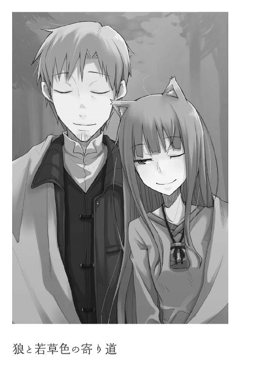

| 狼と香辛料 11 Side Colors II | |
| 支倉凍砂 | |
| KADOKAWA / アスキー・メディアワークス (2013) | |
本書（電子版）に掲載されているコンテンツ（ソフトウェア／プログラム／データ／情報を含む）の著作権およびその他の権利は、すべて株式会社アスキー・メディアワークスおよび正当な権利を有する第三者に帰属しています。
法律の定めがある場合または権利者の明示的な承諾がある場合を除き、これらのコンテンツを複製・転載、改変・編集、翻案・翻訳、放送・出版、公衆送信（送信可能化を含む）・再配信、販売・頒布、貸与等に使用することはできません。
調理台に叩きつけた柔らかめのパン生地。
そこに、爪でくねくねと線を書いて水を流し、ところどころに小さな木を植える。
そんなふうにすると、きっと目の前の光景が出来上がるに違いない。
荷馬車の御者台の上でロレンスはそんなことを思い、ここ何日も食べていない焼き立てのパンの味を思い出して、つい喉を鳴らしてしまっていた。
町を出たのは三日ほど前で、まだまだ温かい食べ物が恋しくなるような時期ではない。昔はカビの生えかけたかちかちの岩みたいな燕麦パンと、一つまみの塩だけで山一つを越えたものだ。それを思えばパンとぶどう酒にあと一品つけられる旅の食事は、なんと豪華なのだろうかと仰天してしまう。
ただ、必死に自分にそう言い聞かせるのだが、ここしばらくの旅はかなり財布の紐が緩くなり、気もそれに応じて緩んでいる。
十八の頃に独り立ちして、今年で七年目になる行商の旅は、人生においてもっとも豪勢な旅になるかもしれなかった。
「鶏の腿肉」
ロレンスが鳴らしてしまった喉の音を聞きつけたのか、同じく御者台に座る旅の相棒がそう言った。
仔狐の襟巻きに顔をうずめながら、のんびりと手元のふかふかの毛皮に櫛を通している。
手にしているのは犬とも狐とも違う、独特の狼の毛皮だ。
普通はもう少し毛が粗く、短くてどちらかというとみすぼらしい。
しかし、今旅の連れが手にしているその毛皮の質は、最上級といっても過言ではなく、夜になればその温かさのほどは奇跡かというくらいだ。
時折口で毛の根元を嚙んでは、丁寧に梳いている。
買ったとしたらいくらくらいだろうか。
ロレンスはそう思って、いや、と思いなおす。
これに至っては、買ったとしたらよりも、売ったとしたらいくらになるのかと考えるほうが適切だ。
なぜなら、その毛皮は加工品ではなく、未だ血の通う、生きた狼の尻尾なのだから。
「それはお前が食いたい食べ物だろう？」
ロレンスが言うと、旅の連れ、ホロはひくひくと耳を動かした。
狼の尻尾と同じ色の、凛々しく尖った耳。
栗色の流れるような髪の毛が生えた頭の上にちょこんと鎮座しているそれは、どう見ても人の物ではない。
この同じ御者台に座る、齢十余に見える少女ホロは、狼の耳と尻尾を有した人ならざるものであり、その真の姿は麦に宿り豊作を司るという巨大な狼だった。
「雄鶏よりも雌鶏がよい」
「雌鳥は卵を産むしな」
よくかきまぜてふんわりと焼いた卵焼きを思い出す。この狼と話すと、つい食べ物の話になってしまう。
自称、ヨイツの賢狼であるらしいが、その俗っぽさといったら人間の比ではない。
「鶏......生の鶏はあの独特の弾力と甘みがたまらぬ。羽がやや邪魔なところが難点じゃが......」
なにかの冗談ならばひきつった苦笑いをしてしまうところだが、生憎とホロは本気だ。
その唇の下には、鋭い牙が潜んでいる。
「生は食べたことがないが、料理は手間をかけてこそだと思う」
「ほう？」
「羽をむしって、内臓を取り出して、骨を抜いてから、香草と一緒に蒸して、野菜と共に茹でて、腹の中に具の詰め物をして、熱した油をかけて皮をぱりぱりにして、最後に香ばしい木の実の油を塗ってもう一度焼いて......おい、涎」
「んっむっ............んむう......」
ロレンスも話に聞いただけで食べたことのない最上級の鶏料理。
ただ、想像力豊かなホロには又聞きの話だけで十分だったらしい。
賢狼としての誇りもどこへやら、こんな時だけの上目遣い。
もっとも、旅のし始めはともかくとして、いくらなんでもだいぶ慣れてきた。
それに、旅の途上ではどれだけねだられても怖くはない。
売ってないものは買えないからだ。
ロレンスは圧倒的に有利な立場なので、一つ咳払いをして、こう答えた。
「まあ、待て。料理もそうだが、他のところに一手間かけるともっとおいしくなる」
「......他のところ？」
ホロが、赤みがかった琥珀色の瞳をきょとんとさせてこちらを見る。
芝居がかった目はともかく、こういう目になら多少は甘くしてやっても良い気がする。
「世の中にはな、雄鶏、雌鶏以外にも鶏がいるんだよ」
「むう？」
齢何百年と生き、賢狼を自称する狼の記憶には該当するものがなかったらしい。
しかし、それで悔しそうにするかといえば、「それでそれで？」と純粋に興味深そうな顔をしてくるから調子が狂う。
ロレンスは、さっきとは意味合いの違う咳払いをして、言葉を続けた。
「雄鶏をな、去勢して育てるんだよ」
「ほう......？ それは......」
「そうすると、雌鳥よりもおいしい肉が取れるんだ。雄鶏ほど硬くならず、雌鳥のように卵に栄養をとられず......なんだ？」
「ふむ......」
ホロは視線をわざとらしく動かして、それから、にやりと笑って牙を見せた。
「確かに、おいしそうじゃな」
その真の姿はロレンスなど一飲みにできるような巨大な狼だ。
いや、そんなことよりも、ロレンスはもっと男として重要なところでホロに笑われた気がする。
咳払いをして、大きく咳払いをして、馬の手綱を軽く振った。
ホロはそれ以上追撃をしてこなかったが、楽しそうにくつくつと笑い、そのたびに尻尾が揺れていた。
「安心するがよい。ぬしがいざという時には頼りになる雄じゃというのはわかっておる」
にっと笑って真っ白い牙を見せられたら、そんな冗談も笑ってすまさなければ男ではない。
いいように掌の上で転がされていることがわかっても、どうしようもなかった。
「じゃがな」
「痛っ」
耳を引っ張られ、釣られて手綱を引っ張ってしまったせいで馬がいなないた。
「鶏をねだられても怖くない、と確信して話を膨らませるような姑息なところは雄の風上にも置けぬがな」
こちらの考えまで全てお見通しだったらしい。
ホロは投げるようにロレンスの耳から手を離し、腕組みをして不機嫌そうに言った。
「ふん。からかったのはその仕返しじゃ。そんなうまそうな話......粗末な物しか食べさせてもらえぬ旅の上で聞かせられたら......わっちゃあ、苦しくて死んでしまいんす！」
からかったからかわないの話はおあいこだとしても、最後のところは聞き過ごすことができなかった。
「あのな、粗末というが、パンは小麦とライ麦の混合パンだし、ぶどう酒は歯で漉しながら飲まなくてもすむような透明なものだ。それにあと一品はチーズか、あるいは干し肉か、はたまた木の実か干しぶどうかといった豪勢なものだ。俺は昔な、生のニンニクとタマネギだけをお供に旅に出ることが普通だった。そんな俺からすれば、信じられない贅沢だ」
ホロは妙なところで子供っぽかったり獣っぽかったりするが、基本的にその頭の良さはロレンスすらたじろいでしまう。
理屈が通じない相手ではない。
そして、ホロはその上でなお、こんなことを平気で言うのだ。
「死んでしまいんす」
それから、ぷいっとそっぽを向く。
これほどわざとらしい演技がこの世に果たして存在するだろうか？
ロレンスは舌を嚙んでしまったような顔をして、そっぽを向いたホロを憎々しげに睨む。
相手をすればこちらの負け。
しかし、無視をすれば意地の張り合いになることは明白で、そうなると先に音を上げるのは間違いなくこちらだろう。
足元を見られるというのはこういうことだ。
ロレンスは、優雅な言い方をすれば、ホロとは楽しく旅をしたいと思っている。
対するホロは、平気でそれを人質に取る。
「わかった、わかった」
「......なにがかや？」
振り向きもせず、冷たい言葉が返ってくる。
「悪かった。鶏がいたら買ってやる。だが、旅の途中の話は旅の間だけ有効だ」
ロレンスにとってここが最大の妥協点。
町に行ったら買ってやるとは、口が裂けても、財布が裂けない限り絶対に言えやしない。
ホロはやはり振り向かず、ただ耳だけをひくひくさせている。
そのよく回る頭で色々考えているに違いない。
それが本当に限界点なのだろうかと。
「わっちは人の噓を聞き分けられる、と以前に言った気がするんじゃが」
「もちろん、覚えている」
「そうかや」
「そうだ」
「ふむ......」
ホロはまたしばらく黙ってしまう。
それに対しロレンスはまるで審判を待つ罪人のようにホロの次の言葉を待ってしまうが、よくよく考えるまでもなく自分に罪はないことがわかっている。
それでも、この理不尽な状況からは逃げられない。
結局、ロレンスの提案が冗談ですむ限界の落としどころと悟ったらしく、ホロはこちらを見てにっこりと微笑んだ。
ずるい、と胸中で叫ばずにいられようか。
ホロの変幻自在な表情は、何年も独り身で荷馬車の旅をしていなくとも、いくらでも騙される奴が列を成すような笑顔なのだから。
「ふむ......しかし、ぬしよ？」
「うん？」
しばらくのんびりと馬を歩かせていると、ホロが唐突に口を開いた。
「さっきの言葉、噓ではあるまいな？」
「さっきの......去勢鶏の話か？」
「たわけ。鶏がいたら買ってくれるというやつじゃ」
なぜわざわざ確認を？
一瞬嫌な予感がしたが、隣のホロに袖を摑まれて、それは予感ですまないのだと気がついた。
即座に、頭と心が商人に切り替わる。
「そんなこと、言った──」
「言ったじゃろう？」
ホロが顔を近づけて、低く唸る犬のような声で言ってくる。
その段になってようやく、ロレンスにも見えてきた。
ずっと続くなだらかな道の脇に、人がいる。
さすがにロレンスの目では確認などできないが、ホロにはそこに鶏がいることがわかるのだ。
「よもや、わっちを相手に言った言わぬの水掛け論をしたいわけじゃあるまいな？」
ホロの笑っていない笑顔ほど怖いものはない。
しかし、鶏一羽を買わされたらどれほどの出費になるか、一度膝を突き合わせて説明しなければならないかもしれない。
ただ、それもホロに聞く耳があった場合の話だ。
そして今、その聞く耳があるとはとても思えない。ロレンスは隣のホロを見て、ため息を一つつく。へたなことを言えば、こちらの命が危なかった。
「わかった、悪かった。約束は守る。だが──」
「だが？」
ほとんどロレンスの言葉に重ねるように聞き返し、ホロの真剣な視線が向けられる。
ロレンスは、言葉を選ばざるを得なかった。
「一羽だからな」
ホロはじっとこちらの目を見つめたまま動かない。
息が詰まるような沈黙のあと、ホロは満面の笑みになって前を向いた。
猟犬に睨まれ、飛び立てなくなった鳥というものはこういう気分に違いない。
ロレンスがそんなことを思って視線を戻すと、道の脇に腰を下ろしていた何者かがこちらに気がついて立ち上がった。
両手を大きく振り、その顔が笑顔とわかる距離になってようやく、その足元に鶏がつながれているのがわかった。
「一羽だからな」
ロレンスはもう一度言って、念を押したのだった。
「旅の景気づけにいかがでしょう！」
辺りにはなにもない荒野が広がり、道行く者の姿はない。
そんなだだっ広く開けた場所で、真冬の空の下一人客を待っていた風変わりな物売りは、ロレンスと同じ歳くらいののっぽの青年だった。
瘦せている割にどこかしっかりした体つきなのは農民特有のもの。
近づいて握手を交わした時も、その手の皮の厚さにびっくりした。
「鶏の他にも特製のビールなんかもありますよ、いかがですか？」
体の頑丈さは行商人の比ではないらしい。
粗末な服に身を包み、口元からは白い息が立ち上っているのに少しも寒そうではない。むしろ朗らかな笑顔で、鶏が道の草をついばむ横に置かれている膝くらいまでの高さの樽をぽんと叩く。
青年の威勢はいいが、樽をまとめる鉄の箍は錆びて今にもばらばらになりそうだった。
その割に鶏は丸々と太っていて元気そうで、なんとも奇妙な取り合わせだ。
ロレンスはやや考え込んで顎鬚を撫でる。
ホロが早く鶏を買えと急かしてこないのも、辺りを見回して、そもそもなぜこんなところに旅姿でもない青年がいるのかと疑問を抱いたからだろう。
「ビールのほうは、味見はできますか」
黙っているのもなんなので、ひとまずそんなふうに聞いてみる。
青年は大きくうなずいて、「もちろんですとも！」と胸を張りながら、計量用なのだろう大きめの枡を取り出して、蓋を開けると中のビールをすくい上げた。
「仕込んだばかりですからね。ほら、泡がまだ弾けてるくらいです」
口をつけてみると、水がいいのか、それとも麦がいいのか、意外にうまくて驚いた。
ホロも欲しがったので一口飲ませたら、すぐに目だけでねだってくる。
「いかがです？」
青年の再度の言葉に、ロレンスはうなずき、目をもう一度鶏に向ける。
ホロはローブの下で尻尾が動かないように力んでいるのがよくわかった。
焼いた鶏とビール。
嬉しくて仕方ないのだろう。
「そうだな。鶏と一緒にビールを貰おうか」
ぴょこん、とフードの下で耳が跳ね上がったことに気づかれなかったのは、青年もまた飛び上がらんばかりに喜んだからだ。
しかし、ロレンスはただ単にホロを連れて歩くだけの旅人ではない。
これでも行商人の端くれであり、口から出てきたのはこんな言葉だった。
「ただ、鶏を数羽貰いたい。一羽ではなくてね」
「え？」
聞き返したのは青年だが、ホロもびっくりしてこちらを見つめていた。
最近は物の相場が多少はわかってきているホロだから、鶏一羽がどれほど高価なものかも薄々はわかっているのかもしれない。
物をねだったら、なんだかんだそのあとに埋め合わせをするくらいに律儀なホロ。
だから、数羽も欲しいなどとロレンスの口から出てきて驚いたのだろう。
「近くに村があるんだろう？ そんなに急ぎの旅ではないから、よければ村まで行って買わせてもらいたい」
青年が街道沿いで荷物を担ぎながら売り歩く類の商人ではないことは明白だ。
だとすれば、現金を稼ぐためか、あるいは必需品と交換するために村からわざわざここまで来ているのだろう。
そのロレンスの予想通り、青年は若干ぽかんとしながらうなずいて、それからもう一度力強くうなずいた。
「いやあ、本当ですか！ もちろんですとも！」
喜色満面で、早速樽に縄をかけて器用に背負ってしまう。
細々した荷物もさっさと麻袋に詰めて樽の蓋の上に載せ、鶏をつなぐ紐を持つと高らかにこう言った。
「では、ご案内いたします！」
そして、意気揚々と道から外れて歩き出す。
青年が向かう先は道のない荒野だが、馬車で行けないこともないだろう。
ロレンスはそう判断して、馬をそちらに向けて手綱を引いた。
その頃合を見計らってロレンスの袖を引いたのは、他ならぬホロだった。
「ぬしよ、怒っておるならそう言ってくりゃれ」
困ったような顔で言ってくる。
鶏を数羽買うなど、ロレンスがあてつけで言い出したと思ったのだろう。
思わず笑ってしまい、むしろホロのほうが怒って睨みつけてくる。
「悪い悪い。いや、だが、考えがあってのことだ」
「......考え？」
ホロは訝しげな顔を向けてくる。
「商人の勘、ともいえるかもしれない」
ホロの目は、胡散臭そうなものを見るようなものだったが、ロレンスは気にしない。
ホロの演技や罠には目をくらまされても、自分の商人の目はそれなりに信用しているからだ。
「うまくいったら本当に数羽買ってやろう」
その言葉にもホロは表情を変えない。
「期待しないで待っていんす」
だが、ロレンスは期待してしまう。
意気揚々と歩く青年の行く先には、ちょっとした商売が待っているはずだったから。
青年がロレンスたちを導いたのは、遠くに森と泉が見える小さな村だった。
そこが殊更貧相に見えたのは、急いで村を作ったかのように乱雑に配置された家々と、やはり好き勝手に耕しているように見える畑のせいだろうか。
統制の取れていない町や村というのは、混沌とした活気に満ちるか、みすぼらしさにまみれるかのどちらかで、この村は後者らしい。
「ずいぶん辺鄙なところじゃな」
ホロがつい率直な意見を口にしてしまう気持ちもわからなくはない。
町は他の町と、村は領主の館と道がつながって初めて存在することができるという。
だというのに、ただでさえ村の様子が貧相なのに加え、この村にたどり着くまでに通ってきたところはおよそ道と呼べるほどのものはなく、ほとんどここは外界から孤立しているといっても過言ではなかった。
陸の孤島、という言葉がよく当てはまった。
「さあ、到着です！ ようこそ、ジサーズへ！」
そこからが村の土地である、ということを示すように、ささやかながら木の柵が立っている。
青年はそこを抜けるやこちらを振り向いて大声で叫ぶ。
他になにがあるわけでもない小さな村なのだ。
だいぶ前からロレンスたちの姿を認めてじろじろこちらを眺めていた村人たちが、なんだなんだと押し寄せてきた。
「ま、ま、さあ、とりあえずこちらへ！ 我が家で足の埃を落としてください」
青年は村人たちにロレンスのことを紹介するでもなく、得意げに言いながら荷馬車を先導して歩いていく。
ホロのみならず、ロレンスすらも笑ってしまうくらいだ。
外から旅人を案内してきたことが、青年には誇らしくて仕方がないのかもしれない。
ただ、青年が口にした「足の埃を」という慣用句から、ここが正教徒の村であることはわかった。
ロレンスは、どうやら自分の予想が当たったらしいことにほくそ笑む。
青年が一軒の家の扉を乱暴に叩き、さっさと扉を開けて中に入っていく。
その後、中から何度かやり取りする声が聞こえたあとに、慌てた様子で飛び出してきたのは恰幅の良いご婦人だった。
青年と顔がそっくりなのが、また面白かった。
「まあまあようこそいらっしゃいました。ほら、あんたは村長さん呼んどいで！」
ロレンスの顔がずっと笑顔なのは、彼らの対応が微笑ましいからではない。
ホロがなにやら得心がいったような顔をしているのも、ロレンスのその笑顔に気がついたからだろう。
「えー、歓迎していただいてありがたいのですが、我々は単なる旅の商人で......」
「ええ、ええ、旅の商人様でも大歓迎ですとも！ とにかくどうぞお入りになってください。ろくなおもてなしはできませんが」
ロレンスは御者台の上で恐縮するように笑いながら、隣のホロに視線を向ける。
こういうことにかけては察しの良いホロだから、こくりとうなずいてから、婦人に向かって微笑んだ。
いちいち全てを説明する手間を省けるのはそれだけで素晴らしい利益だ。
ロレンスは、存分に演技をすることができた。
「では、すみません。少しだけお邪魔させていただきます」
「はいどうぞこちらに。馬車はそのままでも構いません。あんた！ ほら、飼い葉の用意と、桶に水汲んできて！」
と婦人が叫んだのは、人垣の中にいた鋤を肩に担いだ男にだった。
きっとこの家の主なのだろうが、我が家で一体何事だといった顔をしたまま言われるとおりに走り出した。
ロレンスは御者台から降り、ホロもそれに続く。
家の中に通される直前に、先ほどの青年に手を引かれてやってくる老人の姿が、小さく見えていた。
家の中は板張りでも石床でもなく、土を踏み固めただけの簡素なもの。そこに穴を掘った囲炉裏を囲むように木のテーブルと椅子も兼ねた長持が置かれ、壁に立てかけられている農具もどれも木製だった。
梁からはタマネギとニンニクが連なってぶら下がり、壁の高いところに位置する棚の上に置かれている乳白色の物はパン種だろう。
建物がたたずまいの割に広く作られているのは、ここに数家族住んでいるからかもしれない、ということが椅子や鍋や椀の数から推し量れた。
町の宿屋も嫌いではないが、自分自身寒村の出身なので、こういう部屋のほうが落ち着けたりする。
どちらかというと、ホロのほうが落ち着かなげな様子だった。
「ははあ、なるほど。ここからさらに北に向かわれるのですか」
「ええ。レノスという町なのですが」
「左様ですか......なんにせよここはごらんの通りの村でして、旅の商人様に立ち寄っていただけるのは大変ありがたいことです」
肩書きが人を作るとはいうものの、村長と名のつく人間はどういうわけか似通った風体になるらしい。
小柄で瘦せたジサーズ村の村長は、深々と頭を下げた。
「私がここにやってくることになったのもきっと神のお導きです。それにこんなに歓待していただいて。なにかありましたらなんなりとご用命を。私はしがない行商人ですが、可能な限りお手伝いをさせていただきます」
「是非ともよろしくお願いします」
ロレンスがずっと笑顔なのはなにも愛想笑いだけではない。
言葉に噓偽りなく、本当にこれは神のお導きに違いないと、そう思っていたからだ。
「では、この出会いを神に感謝して......」
村長の言葉と共にロレンス、それにホロが木のコップを手に持ち、乾杯した。
「......いやあ、おいしいビールですね」
「お恥ずかしい。神に感謝するのであれば本当ならばぶどう酒なのですが、まだブドウの木がうまく根付きませんで」
「ぶどう酒は神が味を決められますが、ビールは人の手が味を決めます。さぞ素晴らしい醸造の秘訣をお持ちなのでしょうね」
村長は謙遜するように首を横に振るが、その喜びようは隠しようもない。
ただ、ホロがそんなテーブルの様子を静かに眺めているのは、このやり取りを馬鹿らしいと思っているのでも、用意された食べ物が貧相だからでもないだろう。
で、結局なにを企んでおる？
そんな視線を、ちらちらとロレンスに向けていた。
「実はこの醸造には秘伝の法を使いましてね」
ビールのことを褒められたのがよほど嬉しかったのか、村長はそんなことを話し出す。
老人から好印象を得たければ、その話をじっくり聞いてやることだ。
ロレンスは殊更興味を示すように村長の話に相槌を打っていると、突然外が騒がしくなった。
「それで......はて」
と、村長が後ろを振り向いた直後だった。
「村長さん！ またドレたちが！」
扉を開けて入ってきたのは手を土で真っ黒にした男で、慌てた様子で外を指差してそう叫んだ。
村長は苦々しげに立ち上がり、それから、ロレンスのほうを向いて頭を垂れた。
「急に申し訳ない」
「いえ、十分もてなしは受けました。村の長としてのお役目を先に」
一度上げた顔をもう一度下げ、村長は男に急かされながら外に出ていった。
この村の人たちのしきたりとして、旅人は村長が一人でもてなすのが礼儀らしく、その村長が出ていったせいでホロと二人だけ取り残された。
外には人の気配がしているので呼べば来るだろうが、ホロはこれ幸いとばかりに口を開いた。
「ぬしよ」
「いい加減種明かしをしろと？」
豆をつまみ、口に放り込みながら、ホロはうなずいた。
「ここはな、植民の村なんだよ」
ロレンスが言うと、ホロは鸚鵡返しに聞き返す。
「植民？」
「理由は様々だが、人々が未開の土地に移り住んで、そこに村や町を新しく作ることだ。たまに、ごくたまにだが、ここみたいに陸の孤島に近い場所にそういう村ができることがある」
ホロはビールを飲みながら目をきょろきょろとさせる。
「なぜそんなことをするのかや」
そして、子供のように尋ねてきた。
「おそらくだがな、村に入る時、泉のほうに丸太や石が積んであっただろう？ あれでここに修道院を作るつもりなんだろう」
「修道院を......かや？」
「そう。選ばれた敬虔な正教徒がひたすら神のために祈る場所だからな。俗世の喧騒に邪魔されず、従順と、純潔と、清貧を守って暮らせるように。だからこんな辺鄙なところなんだよ」
ホロにとっては一日だって守れるかわからない厳しい規則が支配する沈黙の砦。
ただし、それを作るのは裾の長いローブと聖典を手にした聖なる小羊たちではない。
この村の人たちは、親類から罪人を出してしまったか、あるいは異教徒と関わりのあった人たちだろう。
辺鄙な場所に修道院を作るというのは、ただ建物を建てるだけではなく、そこで修道士たちが生活できるように畑や飲み水の確保を全て行うことも含まれる。
それは過酷な作業であり、彼らはそれと引き換えに自分たちの罪を修道士に償ってもらうのだ。
「ふむ......じゃが、それがぬしの言うとおりだとして......」
ホロはそこまで言って、教会の連中がどういう種類の人間かということを思い出したらしい。
そうすれば、ホロなら一人で正解にたどり着ける。
「つまり、ぬしは弱みに付け込もうというわけかや」
こういう言葉の選び方は、わざとだろうが。
「困っている人たちの助けになりたいだけだ」
「よく言うの。ぬしはこの村に唾をつけて、商売の糧にするんじゃろうが」
ロレンスがずっと顔が緩みっぱなしなのは、ここが未だ誰にも荒らされていない格好の漁場となんら変わらないからだ。
農具、工具、家畜、あるいは衣服や機織道具。村が村の中だけで暮らせた時代は昔の話。
村が一つあればそこには必ず需要と供給が発生する。
丸々と肥えた鶏を連れ、うまいビールを樽に入れて街道沿いで売るような村は、行商人にとって宝の山に他ならない。
ここで鶏やビールを仕入れ、この村に生活必需品を供給する。
村一つの取引を一手に担えれば、どんなビールよりもうまい儲けになる。
ホロは呆れるような顔をして、そんなロレンスを横目にビールに口をつける。
そして、ふとフードの下で耳をひくひくさせたかと思うと、にんまりと笑ってこちらを向いた。
「ふむ。ならばせいぜい人助けをしてきんす」
「？」
その言葉に聞き返す間もなく、扉があわただしくノックされて開かれた。
そこにいたのは村長を呼びに来た男。
ロレンスにも、用件の見当がついた。
「すみません旅の方。もしも文字をお読みになられるのでしたら、お力を貸してもらえませんか」
商人も訪れないような辺鄙な村で、文字を読めないかと尋ねられる。
ロレンスが張り切って椅子から立ち上がってしまっても、仕方のない幸運だった。
「いい加減にしろ！ この間の話し合いの結果を反故にするつもりか！ 俺の畑は六ヒーヘンだ！」
「あんなものはいかさまだ！ 俺だって確かに六ヒーヘンだと言われた。お前は五ヒーヘンのはずだ。それがなぜ俺の畑のほうが小さいんだ！ こんな柵なんか作りやがって──」
事情を説明されるまでもなく、二人の怒鳴り合いを遠くから聞くだけでどういったことで揉めているのかすぐにわかった。
また、ヒーヘンという単位から、彼らがどこから来たのかもおおよその見当がつく。
レヴァリアと呼ばれる森と泉の国に、かつて賢公と呼ばれたヒーヘン二世なる王がいた。
彼は領地内の検地をするに当たって、自分の両腕を左右に目一杯伸ばした時の単位を一ヒーヘンとしたのだ。
もっとも、賢公の定めた賢明なる単位を以てしても、土地を巡る争いは尽きないものだ。
怒鳴り合う二人を前に村長は言葉もなくおろおろとしているだけ。
長い伝統に支えられている村ならばともかく、新興の村には権威というものがない。
水掛け論をやめさせるには、理屈を超えた裁定を下すための権威がなければなかなか難しい。
「村長、お連れしました」
「お、おお......」
困り果てたといった様子の村長は、ロレンスを見るや助けを求めるようにため息を漏らした。
「まったくお恥ずかしいことなのですが」
「土地の割り当てを巡って、ですね？」
いくつも村を回って行商をしていれば、そこで起きる問題のほとんどに巡り合う。
それでも村長はロレンスのことを慧眼の持ち主だとでも思ったのか、「その通りでございます」と平伏せんばかりだった。
「ここは、実はさる貴族様から申し付けられて興すことになった村なのでございますが、その時決まった土地の大きさを巡って争いが絶えんのです......いつもは話し合いで片づけるのですが、特に彼らだけ昔から遺恨があるらしく......」
怒鳴り合いは多少でも筋の通った言い合いから、段々と侮蔑の言葉のぶつけ合いに変わっている。
村人たちはうんざりと遠巻きに、ホロだけが楽しそうに眺めていた。
「では、土地の権利書の写しがあるはずでは？」
文字が読めないか、と聞かれたのもそれが理由のはず。
ロレンスが問うと、村長はうなずいて、懐から一枚の羊皮紙を取り出した。
「こちらなのですが、我々の中には誰もこれを読める者がおりませんで......」
一人も文字が読める人間のいない村は、鍵のかからない宝箱と同様だ。
商人は契約を文字に変える。
では、その契約が読めない相手に、どうしていつまでも正直でいられよう？
「ちょっと拝見させていただきます」
そういった村々はそもそも数が少ないし、そこに最初に訪れられる幸運な商人の数はもっと限られる。
ロレンスは厳粛な面持ちで羊皮紙を受け取りながら、心のうちは踊り出さんばかりだった。
「......ああ、これは......」
ただ、羊皮紙を見た瞬間、さすがにそこまで世の中甘くない、と口元が笑ってしまっていた。
村長が目をしばたかせるが、ロレンスはすぐ苦笑いに変える。
誰も読めなくて当然だ。
羊皮紙には、聖なる教会文字で土地の割り当てが記されていたのだから。
「私たちの中にも多少は文字が読める者はおるのですが、こればっかりは誰もわかりませんで......どこぞの異国の文字なのかと思うのですが」
「いえ、これは教会で用いられる特別な文字です。私も決まった慣用句と数字くらいしかわからないのですが......」
教会文字で書かれた土地の権利書、特権の証明書の類は何度か見たことがある。
隣からホロが覗き込んでくるが、ホロにも読めなかったらしい。
すぐに興味をなくして、再び二人の怒鳴り合いを眺めていた。
「そうですね。揉めている原因がわかりました」
二度ほど文面を読みなおして、ロレンスは結論づける。
そして、それを確かめるために質問をしてみた。
「もしかして、あの二人、元々は職人かなにかでは？」
ついに取っ組み合いの喧嘩をし出して、ホロがフードの下でにやにやと笑うなか、ようやく村人たちが止めに入った。
村長は自分も行くべきかとそわそわしながら、ロレンスの質問を聞くやびっくりしたように振り向いた。
「そ、その通りです。ですが、なぜそれを......」
「土地の割り当てはどちらも六ヒーヘン。これは間違いありません。ですが、ここ......」
ロレンスは言いながら、一つの単語を指差した。
村長は目を細めて見るが、元々読めない文字の単語なので、そうしたところでわかるはずもない。
「羊の囲い、とあります。その広さが、片方は六ヒーヘン。もう片方が五ヒーヘンです」
村長はしばしぼんやりと羊皮紙の文面を眺め、やがて合点が行ったらしい。
固く目をつぶると、禿げ上がった額をぴしゃりと叩いて、「なるほど」とうめくように呟いた。
「そうか、連中は羊の囲いを知らなかったのか......」
土地の割り当ては村人にとって重要なこと。
新天地への出発の前に、文字の読めない者は内容を読み上げて聞かせてもらったに違いない。
しかし、その時に今までは土いじりなどしたことのなかった者が突然専門の用語を言われたらどうなるか。
印象に残るのは数字だけ。
だからこそ、どちらも引かずにああやって争うことになるのだ。
「ハイ・バートン氏は修道院に多少多く寄付されたようですね。羊の囲いが六ヒーヘンなのはバートン氏です」
「バートンならあの左の奴です......まったく、そういうことで揉めていたとは......」
「羊の囲い、と言われても縁がないとわかりませんからね」
羊の囲いは文字通り羊を囲う面積のことだが、そこで羊を飼うわけではない。主な目的は、村や修道院全体が共有する羊を夜の間柵の中に入れて、その土地に糞をさせて土を肥えさせることだ。
大きい囲いにはたくさんの羊を、小さい囲いには少ない数の羊を入れるのが常識だから、羊の頭数ではなく面積で測られる。それは自分の畑の面積一杯であることもあれば、自分の畑の半分にしか羊を入れさせてもらえないこともある。
村長はロレンスに丁重に礼を言い、早速とばかりに二人のほうに小走りに駆けていった。
村人に羽交い締めにされている二人に羊皮紙を掲げながら説明を始めている。
ロレンスがやれやれといった笑顔で以てそれを眺めていると、やがて二人は渋々ながら握手を交わしていた。
「なんじゃ、あっさりまとまってしまったの」
それを見ながらホロが残念そうに言うくらい、あっさりとしていた。
「記憶は間違えることが大いにある。しかし、文字はそうではない」
その言葉は、ロレンスが師匠から心得として教えられたことだ。
行商人が町商人に勝てない理由の一つとして、売り掛けや買い掛けの金額を帳簿ではなく記憶の中にしまわなければならないことを挙げていた。
揉めた時に勝つのは、いつだって文字なのだ。
「毎回こんな揉め事を起こしていたら商売を拡大することなどできはしないからな。だから、契約書は大事なんだ」
ホロは興味なさそうにロレンスの話を聞き、「ぬしも鶏の話を反故にしようとしたくらいじゃからな」と恨めしそうに呟く。
「まあ、そんなもんだ」
ロレンスが答えていると、村長がこちらを振り向きゆっくりと頭を下げる。
ロレンスは軽く手を振った。
なるほど、人の役に立つのもそう悪くはないことだと、ロレンスは思ったのだった。
その夜は、村の懸案の一つだった二人の争いをついに解決に導いたということで、鶏一羽を潰して豪快な丸焼きを振る舞われた。
もちろん代金など支払わず、酒もビールだけだが飲み放題だった。
ホロもさぞご満悦のことだろう。
ロレンスはそう思っていたのだが、ホロはひとしきり宴会のご馳走を食べ終わると、まるで敬虔な修道女のように早々のお暇を告げた。
ロレンスたちのために今晩は一軒丸ごと貸してくれるらしく、案内を受けて一足先にそちらに帰ってしまっていた。
旅の疲れが出て、思いのほか肉料理と酒が重かったのかもしれない。
その可能性が否定しきれなかったので、ロレンスも失礼にならない程度に宴会に参加してからその家に戻った。
真冬の旅路の三日目というのは、体が旅に慣れるか慣れないかの境目で、油断をすると旅なれた者でも容易に体調を崩す。
何度かすでに体調を崩しているホロのこと。
麦に宿る豊作の神と呼ばれた賢狼であっても、疲労とは無縁ではない。
ロレンスが案内された家の扉を静かに開けると、中は暗く静まり返っていた。
獣脂の灯りを受け取って、ゆっくりと部屋の中に入ると、わざわざしつらえてくれた長持をくっつけた簡易のベッドが土間の真ん中に置かれていた。
普通は地面に藁を敷いてそこに雑魚寝だろうが、客人扱いということだろう。
ただ、それが一つしかないのはいたし方のないことなのか。はたまた要らぬ気を利かせてくれたのか。
なんにせよ、すでに毛布に包まって丸まっているホロを前に、ロレンスは小さく口を開いた。
「大丈夫か？」
寝ていたらそれでいい。
しばらくしても返事はなく、どうやら寝ているらしい。
明日、目が覚めてもまだ様子がおかしかったら、多少金を払ってここにしばらく泊めてもらおう。
そんなことを考えながら灯りを消して、長持の上に藁を載せて薄い麻布を敷いたベッドに潜り込んだ。
ホロを起こさないかとやや心配になったものの、大丈夫だったようだ。
藁とはいえ、荷馬車の荷台よりかははるかに寝心地が良い。
ただ、仰向けになっても見えるのは天井と梁ばかりで、囲炉裏の煙を逃がす穴から差し込む月明かりが少し目に届くくらいのものだった。
ロレンスは目を閉じ、村の様子を思い返す。
村人の数は三十人から四十人。近くに森と泉があるおかげで、野蜜や木の実、それに魚が豊富で、放牧にも適している。
土地はやや岩が多いことを除けばそれほど瘦せているわけでもない。
修道院ができたとして、十分に百人くらいは養うことができる土地だろう。
現時点でこの村にどこかの商人が唾をつけていないのなら、もうこの村の商取引はロレンスが独占できたようなものだ。
宴会の最中にも、鉄製の農具の話や馬や牛の売買の話も出た。
辺鄙な土地を貴族が寄付して修道院が建てられる、といった場合、その動機は基本的にその貴族自身か、あるいは近しい者に死期が迫っていることが大半だ。
勢い、計画は大急ぎで進められ、必要なことすらろくに決めないで着工される。
しかも、この土地を寄付した者たちがこの土地の近くに住んでいる、とは限らない。
土地の権利は紙に記されるせいで、風に吹かれる綿毛のように各地を転々と旅することが往々にしてある。そのせいで、見たことも聞いたこともないような遠い土地の人間に寄付されることがごく普通のこととしてある。その結果、つぎはぎだらけの物乞いの服のように入り組んだ土地の所有権はいつの時代も紛争の種になる。
すると、周辺の土地の人間は、争いに巻き込まれるのを恐れてそういった土地に移り住む新しい住人たちと接触を持たないことがままあったりする。この村はその典型だったようで、最寄の町や村の商人が及び腰になって取引をしたがらないと聞いた。青年が鶏とビールを持って人通りのない街道に座っていたのも、苦肉の策だったと村長は語っていた。
ロレンスにとっては渡りに船。彼らにとっては神の使いというわけだ。
そうなれば、大して酒を飲んでいないのに顔がにやけてしまうのも無理からぬこと。一人で行商をしている時に、多々夢見た事態が目の前にある。
さて、一体どれほどの儲けになるだろうか。
夜が更けていくなかで、頭だけはどんどん冴えていく。
宴会で出されたビールよりも、皮算用に酔い始めた頃だった。
「まったく、呆れた雄じゃな」
もそりとホロが動いたかと思うと、ため息まじりにそんなことを言った。
「ん、なんだ、起きてたのか」
「ぬしがにやにや笑う音で起きてしまいんす」
言われ、つい自分の顔を撫でてしまう。
「わっちがおかしな様子で宴会から引き上げても、ろくに心配もせずに、にやにやにやにやと......」
自分からそう言うからにはあれはわざとだったようだ。
ただ、指摘すれば怒り出しかねない雰囲気に、ロレンスは言葉を選んで口にした。
「お前の声が元気そうで、どれだけほっとしているかわからないのか？」
同じ毛布の中で、ホロの尻尾がもそりと動く。
しかし、人の噓を見抜けるホロは、ロレンスの頰をつねって牙を剝いた。
「たわけ」
どんな返答をしようと絶対に怒っただろうが、まだしもましだったようだ。
ホロは不貞腐れるように寝返りを打って反対側を向いた。
こんなにわかりやすい態度を取るのだから、実際は大して怒っていない。
「なんでさっさと引き上げたんだ？ ビールも鶏もいい出来だったろう？」
特にビールは特別なものを出され、その言に相応しく素晴らしい出来だった。聞けば特別な香草を乾燥させ、それを砕いた粉末を入れているらしい。
鶏は脂が滴るほどのものだったし、なにが不満なのか。
ホロはしばし返事を返さない。
小さく、うめくように口を開いたのは、かなりの間をあけてからのことだった。
「ぬしにはあのビールがうまかったのかや」
「え？」
ロレンスが聞き返してしまったのは、ホロの声が小さかったからではない。
「わっちにはとても飲めぬ。あんな臭いものをうまそうに飲むとはとても信じられぬ」
もちろん人にはそれぞれ好みがあるので、あの芳しい香りがあまり好きではない、ということがあってもおかしくはない。
しかし、それではホロがこんな怒っているような、それでいて悲しそうに言う理由がわからない。
ロレンスはやや視線を泳がせてから、すぐ側にいるホロが泡のように弾けてしまわないように、ゆっくりと、声をかけた。
「あれは、あの人たちの故郷の香草を入れているらしい。独特な香りだからな。それを気に入る人たちが素晴らしいと思う以上に、嫌いな人にはその逆に──」
「たわけ」
毛布の下で足を蹴られ、ホロがこちらを向いた。
その顔が妙に歪んで見えたのは、天窓から差し込む月明かりのせいで顔に陰ができているから、というわけではなさそうだった。
こういう時、ホロはいつも言いたいことを喉の奥で引っかからせている。
そして、その理由をロレンスがわからないのもまた、いつものことだった。
「もうよい！」
ホロは最後に言って、反対側を向いて丸まってしまう。
荷馬車の上ではいつも足の上に乗せてくれる尻尾どころか、共用の毛布までほとんど持っていってしまった。
聞く耳を持ってくれそうにないのは、伏せられた耳から察することができる。
ロレンスになにか気がついて欲しかったらしいというのは、その背中からわかった。
「......」
よもやビールが好みに合わなかったから不機嫌、というわけではないだろう。ビールの話を持ち出したのはきっと怒るためのきっかけにしたにすぎない。
街道沿いで青年と出会ってからこっち、少し村との取引の皮算用に夢中になりすぎていたのかもしれない、と反省する。
犬と共に猟をする狩人によくあることらしいが、狩人が花嫁を迎えると犬は相当に嫉妬するらしい。
ホロに限ってそんなことはない、とは思えなくもないと考えてしまうのは、ホロが言うようにたわけた雄の考えなのだろうか。
ちらりとホロの後ろ姿を横目で盗み見て、頭を搔く。
なんにせよ、明日からはもう少しホロに注意したほうがいいだろう。
この狼は、山の森に相応しい天気の変わりやすさなのだから。
真冬に雨がそぼ降る中、商品に毛布を掛けて自分はただ両腕で体をかき抱くだけ。そしてそのまま一晩を過ごす、という経験に比べれば、屋根のある場所で藁と麻布が敷かれたベッドの上で眠れるのはそれだけでずいぶんましだ。
明け方、相変わらずのくしゃみで目を覚ましてから、ロレンスは己の現状を憂う前にそう思い、なんとか自分を納得させた。
隣ではホロが毛布に包まってぬくぬくと眠っており、間抜けな寝息を立てている。
若干怒りを覚えないでもない。
しかし、その寝顔を見たら、ロレンスは小さなため息と共に静かにベッドから下りざるを得ない。
家といっても泥で穴をふさいであるような農村の建物だ。
吐く息は白く、軽く体を動かすと寒さで強張った体がぎしぎしと軋んだ。
床が木ではなく土だったのはやや幸運だったかもしれない。
ホロを起こさずに外に出て、今日もよく晴れるであろう早朝の空に向かって大欠伸をした。
井戸の周りではすでに人が水を汲んでいるらしく、遠くからは牛と豚、それに羊の鳴き声も聞こえてくる。
絵に描いたような勤勉な村。
こうなると、朝食はちょっと期待できないかもしれない。
ロレンスは苦笑いをして、そんなことを思ったのだった。
結局ホロが目を覚ましたのは昼も近くなってからのことで、普通ならば村では白い目で見られるような時間だ。
それでも皆が笑顔だったのは、ここが植民の村だからかもしれない。
村人のほとんどが、家財一式と家畜を連れての長い旅路を経験している。
旅人には旅人の時間の流れがあるとわかっている。
ただ、朝食が出なかったのは予想通りだった。
物にあふれている町でさえ贅沢とみなされるのだから、質素で勤勉な、修道院を支えるための村で出るわけがない。
「で、ぬしはなにをしておるのかや」
もしかしたらホロは朝食が出ないことを見越して昼近くまで寝ていたのかもしれない。
ホロが手にしているのは、冬を越すために潰された豚の腸詰を、茹でて薄く切ってライ麦パンに挟んだもの。
ただで貰うには気が引けてしまうような昼食だが、生憎とその心配はなかった。
もぐもぐと口を動かしながらロレンスの手元をホロが覗き込んでいるのは、ロレンスが任された仕事に精を出しているからだ。
パンをぱくつきながらビールを飲むホロに言いたいことは色々あったが、ひとまず昨晩の不機嫌さは持ち越されていないようなのでへたに波風を立てることもない。
と、恐らくはこういう考えがホロを甘やかすことになるのだろうが、ロレンスは諸々の小言の代わりに、ホロの質問に答えた。
「翻訳だよ」
「翻......やふ？」
物を食べながら話すな、という注意すら馬鹿らしい。
口の端につけたパンのかけらを取ってやりながら、ロレンスはうなずいた。
「昨日みたいな揉め事が起こらないようにな、このややこしい教会文字を、慣れ親しんだ文字に替えてくれ、と」
町で頼めば結構な金額を取られるような仕事だ。
もっとも、料金を取らない代わりに、ロレンスのほうも教会文字の正確な翻訳が行えているかどうかの保証はできない。
「ふーん......」
ホロはなにか考えるように半眼で机の上の羊皮紙と翻訳先の木の板を眺め、やがて興味をなくしたようにビールを飲んだ。
「ま、ぬしが働いてくれればわっちは気兼ねなく飲み食いできるというものじゃ」
笑顔も引きつってしまうような憎まれ口を残して、ホロは最後のひとかけらを口に放り込むと、ロレンスの側から離れていった。
「俺には気兼ねくらいしてもらいたいものだがな」
ホロの背中に向けてやれやれとため息まじりに呟いて、再び仕事に戻ろうとして気がついた。
「おい、俺の分を──」
ロレンスがそう言った時には、すでにホロは二つ目のパンをかじっていた。
「そんな怖い顔するでない。軽い冗談ではないかや」
「なら、どうしてパンがこんなに減っているんだ？」
「ぬしにならねだっても平気だと思ったんじゃ」
「それは光栄ですな」
殊更に嫌味ったらしく言ってやると、ホロは少し不機嫌そうに、ロレンスが仕事をしている机に腰掛けた。
ホロなりに甘えていたつもりなのか、と思った直後、意地悪な笑顔でロレンスのことを見下ろしてきた。
「なら、次からは村の連中にねだることにするかや。旦那様、旦那様、どうかわっちにパンをお恵みを......」
そんなことをされたら誰が困るのかは言うまでもない。
しかし、ここで引いたらさすがに甘やかしすぎだ。
「一体お前は何人分食べるつもりなんだ？」
鼻っ面を叩くように短く言い放って、ホロの魔の手から救い出したパンにかぶりつき仕事に戻る。
ホロはつまらなさそうに顎を引いてため息を一つ。
ため息をつきたいのはこっちのほうだ。
ロレンスがそう思った直後だった。
「ま、わっちが村人にその質問をされたとしたら、お腹を押さえてこう答えるじゃろうな」
相手をしたら負け。
耳に栓をするつもりでペンを取った。
「そう......きっと二人分」
ホロが身をかがめ、ロレンスの耳元で言った。
思わずパンを吹き出してしまったのは、決して大袈裟な反応ではないはずだ。
ホロは意地悪げな顔でけたけた大笑いし、「なんじゃ。わっちが二人分の大飯食らいだと初めて知ったのかや？」とわざとらしく聞いてくる。
交渉事においては持てる限りの全ての武器を使える者が最後の勝者となる。
それにしたって、ホロは武器を使いすぎだ。
これ以上一言だってホロの言葉を聞くものかと、ロレンスが吹き出したパンのかけらを木の板の上から払っていると、ホロの手が伸びてきてパンの間から腸詰を一切れ奪っていった。
「くふ。ま、ぬしよ、朝からずっと机に座っておるからそんな眉間に皺が寄るんじゃ。外に出て冷たい空気でも吸ってくればよい」
ホロの言葉をその通りに解釈してしまいがちだった旅の初めの頃ならば、大きなお世話だ、と返事をして怒りを買うところだ。
ロレンスはしばし沈黙し、目を閉じて椅子の背もたれに体を預けた。
そして、降参を示すように手を肩の高さに上げ、こう言った。
「収穫の終わった畑に麦粒が落ちていても困るからな」
「んむ。わっちがここの麦を気に入らんとも限らぬ」
麦に宿るというホロならではの冗談だ。
ローブのフードを被り、わさわさ揺れる尻尾を隠し、ホロは先回りして扉に手をかける。
「確かに気に入られたら困る。拾い食いされたら敵わないからな」
ロレンスが言うと、ホロはむっと頰を膨らませて、ロレンスが手に持っていたパンにかぶりついたのだった。
のんびり村を見て回る、というのもこれはこれでいいかもしれない。
それに、ホロとしてはこんなにも普通の村というのはパスロエの村を出て以来久しぶりのことだろう。
そこからはあまりいい旅立ち方をしなかったとはいえ、やっぱり農村には慣れ親しんだ雰囲気というものがあるのかもしれない。
パスロエの村でもよく見られた、肥料のための藁束や土のついたままの農具などをにこにこしながら眺めていた。
「町と交流がないから、この時期でも豆を蒔くらしいな」
普通ならばこの時期は農作業の手を休めて、代わりに糸を縒ったり布を織ったり、さもなくば木を削った加工品を作ったりと、屋内での仕事が多いはずなのだが、ここではそうでもないようだった。
最寄の町でも荷馬車で三日かかり、しかも後難を恐れて取引を断られているようなところなのだ。
食料の確保が最優先事項で、他のことはひとまず後回しなのだろう。
「豆は大地が疲れた時によいからの。もっとも、ここはしばらくはそんな細かいこと気にせんでも色々とよく実りそうじゃが」
集落の外れまではもちろんあっという間で、そこからは見渡す限りに畑が続いている、というのはさすがに大袈裟でも、この人数でよくここまで広げたものだと感心するくらいにはある。
柵や溝がないのは、おそらく共同の畑なのだろう。
今も泉の方角に向かって作業をする人影がいくつかあり、用水路を掘っているのだろうと見当がついた。
なるほど、噓も方便とはいうが、ホロの言うとおり外に出たお陰で眉間から皺は消えそうだった。
「で、ぬしはこの村からいくら搾り取れそうなんじゃ？」
村を囲む、今にも倒れそうに見えた柵は思いのほか丈夫だった。
ホロが腰掛けたのでロレンスもその隣に腰掛け、こちらに気がついた畑の中の村人に手を振り返してから、ようやくホロを見る。
「人聞きが悪いな」
「昨日のぬしの顔のほうがよほど悪そうじゃったが？」
もしかして、昨晩ホロが不機嫌だったのはロレンスがあまりにも欲に目がくらんでいたからか、と思ったのも一瞬のこと。
ホロは楽しそうに喋っているので、それはないだろう。
「物と物が交換されるだけで利益は勝手に生まれてくる。わざわざ搾らなくても滴ってくるのなら、なめるだけでいい」
「ふむ......ぶどう酒みたいじゃな」
皮袋や布にブドウを詰めて、軒先からつるして造るぶどう酒のことを言っているのだろう。
自然の重みでブドウが潰れ、滴ってくるブドウの果汁だけで作るので、そのうまさといったら比類ない。
相変わらず飲み食いに関しては上等な知識を持っている狼だ。
「今回は特にお前の手も借りず、儲けになりそうだ。道の途中で予想外に出会った儲け話にしては、ちょっと額が大きい。それこそ、お前がたらふく鶏を食べたとしても、な」
風が軽く吹き、遠くから牛の鳴き声が聞こえてくる。
静かだな、と思う間もなく、後ろからはけたたましい鶏の鳴き声が聞こえてきた。
「ま、なんだかんだと俺はお前の手を借りてるからな。たまにはこういうのもいいだろう？」
取らぬなんとやらの皮算用ではあるが、これくらいは許されるだろう。
それに、実際のところ、帳簿をつけてみればきっとホロが飲み食いしている金額よりも、ホロのお陰で助かったり儲けた金額のほうが圧倒的に大きい。
言葉に噓はなく、たまには気兼ねなく飲み食いして欲しかった。
「ぬしは」
「ん？」
「ぬしは、本当にわっちがそれで気兼ねしないとでも？」
時間が止まったのでは、と思ったのは、単純にその瞬間、ロレンスの頭が一つのことだけを考えていたからだ。
「お前、それで昨晩怒ってたのか......？」
あれやこれやとねだっては、なんだかんだでねだりっぱなしではないホロ。
きちんと浪費した分は取り返すし、旅の途上では陰に陽に一致協力する。
ホロが神と呼ばれることを恐れたのは、自分だけが特別な存在に祭り上げられるのが嫌だったからではなかったか。
だとすれば、ロレンスの気遣いは逆効果だったかもしれない。
「気にすることではないと思う......というのが俺の考えだが。うん。お前は義理堅いからな」
その言葉に、ホロは恨めしそうな目を向けてくる。
いちいちわっちの口から言わせないとわからんのか、と言いたげだった。
「ふん。わっちゃあ無知な狼じゃから、なんたらいう文字も読めんしの」
ただでさえ出る幕がなさそうでやきもきしているところに、目を覚ましたらロレンスが机にかじりついている。
ホロからすれば、嫌がらせにすら映ったかもしれない。
「ああ、それならそうだ」
「？」
ホロが表情を緩めてこちらを見る。
ロレンスは笑いながら、言ってやった。
「麦の栽培について助言でもしてやればいい」
怒るか怒るまいか判断しづらい際どい冗談だったらしい。
ホロは複雑な顔をして、結局頰を膨らませてそっぽを向いた。
「ちょっとした知識でも喜ばれるだろうさ。羊の囲いの存在すら知らないようなのが畑に入っているんだ。なにかないのか？」
そして、ロレンスはそのあとに「彼らが喜べば、それだけ俺の商売も進めやすくなるし」と付け加える。
ホロが泣きそうな顔でこちらを振り向いたのは、ずるい手を使うな、ということなのだろう。
「む......う......」
「そんな考え込まなくても、なんかちょっとしたことでないのか」
ロレンスが笑って言うと、ホロはついに目を閉じて考える。
眉間に皺が寄り、耳がばたばたフードの下で動いている。
まったく、本当に義理堅い。
ロレンスが笑ったまま、そんなホロから視線をそらし、空を飛ぶ鳥をのんびり眺めていた頃だった。
「ロレンスさん」
遠くから自分の名を呼ぶ声に、視線を村の中へと戻した。
「ロレンスさん」
声は後ろからで、振り向けば村長だった。
「あ、すみません。まだ翻訳は......」
「いえ、いえ、その話ではございません。そのお仕事を頼ませていただいているうえに、大変心苦しいのですが折り入ってご相談が......」
「相談？」
はやる気持ちを抑える必要があったのは、物資の調達に困っているという村の事情があるため。
ロレンスがホロに視線をちらりと向けると、ホロは面白くなさそうに仏頂面だった。
「私にできることでしたらなんなりと」
しかし、ここで笑顔が見せられなければ噓だ。
ロレンスはとびきりの笑顔と共にそう言うと、村長はほっとしたようにこう言った。
「左様ですか。ありがたいことです。実は、最近になって村では昨日のような土地の問題が多く起こってきておるのです。それで、お知恵を拝借させていただければと......」
「......知恵？」
笑顔のまま聞き返すロレンスに、村長は心底困り果てた顔で、難しい問題を口にしたのだった。
未だ翻訳途中の羊皮紙と木の板を前に、ロレンスは頭を抱えて悩んでいた。
村長が持ってきた相談は、どこの村でも共通のものといえばそうだった。
しかし、普通の村には長年に亘って積み重ねられてきた村独自の問題解決方法というものがある。それは神からのご宣託であったり、村長の権威であったり、近隣領主の証明書や、逆らうことは許されない村の共同会議だったりする。
それが、この村にはそういったものがほとんどない。
新しい村ができては解散する原因が、人々をまとめる強力ななにかが欠けていることだというのはままあることだ。
そうした難しい状況の中で、ロレンスが持ちかけられた相談は、やはり土地の分割に関する問題だった。
村の領域は領主から大雑把に決められているだけで、その中で各自がそれぞれ決められた大きさに分割するようにと定められている。
しかし、そこで問題があった。
決められているのは大きさだけで、土地のどこを基準点にするとは書かれていなかったのだ。
「それで、ことここに至るまで好き勝手に決めておったが、問題が起こり始めてきていいかげんに基準点を決めんと大変なことになる、と」
「ああ。村を興したばかりで土地がいくらでもある状況なら問題はないがな。基準点を決めないで好き勝手に土地を分割していくと、実際に図を描いてみればすぐにわかるんだが、誰のものかわからない小さな土地があっちこっちにできる」
「図に描くよりも、わっちゃあ薄焼きのパンを割ってたとえるほうがよい」
机に腰掛けているホロは楽しげに言った。
「燕麦パンか？ あんな硬いもの、おいしくないだろ」
「うまいかどうかと聞かれるとうまくありんせんが、歯ごたえはたまらぬ。わっちゃあ、たまにこの歯がうずいてしまっての......」
にっ、と鋭い牙を見せるホロに、ロレンスは若干たじろいでしまう。
「なんじゃ、わっちの牙よりもぬしの牙のほうがよほど恐ろしいと思うがな」
「え？」
ロレンスが無防備に聞き返すと、ホロは自分の胸に手を当てて、こう言ったのだった。
「わっちゃあぬしの毒牙にかかってしまいんす」
外を走り回る鶏の鳴き声を三度聞いてから、ロレンスが返事もせず再び頭を抱え出すと、ホロはむすっとしてロレンスの足を蹴ってきた。
「わっちとの話よりもそっちのほうが大事じゃと言うのかや」
「当たり前だ」
「なっ」
思わず言い返してしまい、ホロが目を見開いて耳をぴんと張った直後、ロレンスは自分の失言に気がついた。
「い、いや、ここで村長らの期待に応えられないと、恩を売れないだろう？ 金儲けの好機はその場限りだが、お前との会話はあとでいくらでも──」
「わっちの好意もこの場限りではないとよいな！」
ホロは言い放ち、そっぽを向いてしまう。
その場限りの連中相手にならばいくらでも八方美人を続けられる自信はあるものの、ホロには上辺の対応では通用しない。
ただ、村長がせっかく村の重大事を決めるような案件を自分に振ってくれたのだ。
これに応えられなければ、失望されて取引を一手に担えなくなるかもしれない。
愛は金で買えないかもしれないが、恩で金は買えるのだから。
「......」
ロレンスは、ホロにかける言葉も見つからないし、かといって目の前の問題を考えないわけにもいかないし、文字通り途方に暮れて机の前で言葉を失ってしまう。
行商人を一人でやっている時には、こんな問題に直面することはあり得なかった。
師匠だってこんな難問の解き方を教えてはくれなかった。
しかし、あれこれを天秤にかければ、どれが一番重いかはわかりきっていること。
ロレンスがそう決心して、口を開こうとした瞬間だった。
「ぬしは本当にたわけじゃ。学習能力というものが皆無ではないかと思うことすらある」
机に座っているホロは、もちろんロレンスよりも目線が高い。
そこでこんな高圧的なことを言われたら多少はむっとくるのが自然な反応だ。
それでも、ホロの赤みがかった琥珀色の瞳は反論を許さない色に染まっている。
それは理屈ではない。
ホロと共に旅をしてきたうえで得た、経験則だ。
「わっちゃあさっきなんと言った？ こっぱずかしいのを我慢してぬしになんと言った？ わっちが隣におるのに一人で頭を悩ませておって......」
「あ......」
まったく、本当につい今しがたのやり取りだ。
ホロは出る幕がないから気兼ねしていたのに、またしてもロレンスは一人で頭を抱えていた。
ホロが恨めしそうな目でこちらを睨んでくる。
ロレンスに必要なことは、謝ることよりも、こう尋ねることだ。
「お前の、知恵を、借りられないか？」
やや言葉が詰まってしまって、ホロは半眼の仏頂面でじっとこちらを睨んでくる。
ホロの尻尾が、拒絶と許容の天秤の針のように右に左にと小さく揺れている。
そして、結論はホロのため息と共に吐き出された。
「一番のたわけはわっち自身なのかもしれぬ」
どういう意味だ、と思う間もなくホロが言葉を続けたので、ロレンスは背筋を伸ばして拝聴した。
「ふん。まあ、わっちの知恵とやらは、あの腹の立つパスロエの村で使われておった方法じゃがな」
「......石碑や木などの目印は移動させられる恐れがあるから採用できない。文書で基準点を定めても、そもそもその基準を定めるのが不可能だから言い争いの原因になる」
もちろん完璧な方法など神でなければ用いることはできないだろうが、要は皆がその正しさと普遍性を納得できる方法を提示できればよい。
それに、わざわざ聞かれているのに至極当たり前のことしか答えられないのでは失望を誘いかねない。
ロレンスは、それで、もしやホロがその真の姿を晒すのでは、と思ったところを、小突かれた。
「たわけ。わっちがなぜパスロエの村でべそをかいておったのか忘れたかや」
神からのお告げ、という方法ではないらしい。
だとすると、残るは村人全員を集めてここが基準点だと皆の記憶に植え付けるくらいだろうか。
「しかし、どうするんだ？ 星の運行に通じた人間でもない限り正確に東西南北だって測れやしない。もちろん、船乗りみたいに山や泉なんかを目印にしたりはできるが......その目印を文書にしたためるのは不可能だ。それで作られる地図はあまりにも大雑把すぎる」
旅人が旅をする時に使う程度の大雑把な地図ならば問題はない。
今必要とされているのは、村の土地の割り当てに使えるほどの正確さを持つ記録だ。
「ぬしは昨日の揉め事の時、人の記憶は曖昧じゃと言ったな？」
「え？ あ、ああ。だから、文書にしたためる」
「ふむ。文字にされれば誰が見ても変化がないから皆が信用する、というのはわっちもわかりんす。じゃが、人の記憶はそれほど曖昧なのかや？」
ホロの言葉の向く方向がわからない。
それでも、ロレンスはこう答えるしかない。
「少なくとも、人と人が対立している時に、誰かの記憶に頼って物事を決めるのは客観性に欠けやすい。しかも、土地の分割の話は、何年、あるいは何十年もあとまで記録が残らないといけない」
ホロはその反論にしばし真摯に耳を傾けて、「そうじゃろうな」と答えた。
そして、その上で、こう言ったのだった。
「じゃが、こんな方法を取るとしたらどうじゃ？」
ホロは少し楽しそうに、ロレンスの耳元に口を近づけてその方法とやらを囁いた。
ロレンスが驚いてホロの顔を見つめなおすと、賢狼は楽しそうに首を振る。
「ぬしの言ったとおりに山や泉や丘といった大きな目印は大雑把じゃが、いくつかを組み合わせればかなり正確に場所を特定することができる。山におった時も、尾根から周りを見て自分がどこにおるか正確にわかったものじゃ」
それは村人だってわかっているだろう。
しかし、それを書き留める方法がないからこそ揉めることになる。
土地の境界を定める時に人々が感情的になりやすいのも、その歯がゆさ故だ。
「ところが、誰しもが納得する忘れられぬ記憶、というのは実際にはあるものじゃ」
ホロが言ったその方法なら、確かに全員が納得できそうだ。
どの道ロレンスには良い案がない。
椅子から立ち上がって、ホロの手を取ったのだった。
記録の問題はいつだって難しい。
ホロの故郷であるヨイツの話も、文字にされ、石の壁の中や暗い地下室の中に誰かが大事に保存していたからこそなんとか残っている、というところがある。
しかも、そんなことができるのはごく一部の人間たちだけであり、それにしても何百年と残るかどうかは神のみぞ知るところとなる。
それが口承となればどれほど曖昧なものになるかは、口角泡を飛ばす言い争いの大半が水掛け論の時点で推して知るべしである。
では方法がないから諦めるべきかというと、世の中そんなことでは回らない。
どうにかして方法を編み出し、何十年後に言い争いになった時にも、周りが納得する方法で記録を残そうと人々は知恵を絞る。
ホロがたまたま麦畑の中から見聞きしていたのは、その中の一つだった。
「ロレンスさん、村人たちが集まりました」
「ご苦労様です。それで、代表は」
「はい、神のお導きか、ちょうどよい者が一人おりました」
ロレンスから計画を聞かされた村長は、ロレンスがホロから話を聞いた時とまったく同じ反応をした。
そんな方法が？ と驚いて、しかしそれならば、と思いなおす。
特殊な技術も道具も費用もかからない。
それでいて、確かにこの方法ならば記録は何十年もはっきりと残るだろうと、周りの人間に大いに納得させることができる。
村長は早速村人たちを、前々から土地の基準点の候補に挙げていたらしい井戸端に集めた。
そして、彼らの中からこの記録を残す代表者を選出してもらう。
諸々考えた結果、実行役はホロになった。
旅人という特殊な立場であり、また、そのほうがより効果が大きくなるだろうということだった。
これから村の基準点を決める、ということだけを知らされて集まった村人たちは、半信半疑の顔つきで事態の推移を眺めている。彼らとて、頭を捻って皆が納得いく方法で村の基準点を決めようと頑張ってきたのだからそれも当然だ。
そんな中、村長が選ばれた代表者の肩に手をかけて、一つ咳払いをした。
「偉大なる全知全能の神に対して、我が名と、村の名において宣言する。かねてよりの懸案であった土地の分割について、ここに村の基準点を定めるものとする」
しわがれていてもなお声がよく通るのは、元々広大な畑で牛追いをしていたかららしい。
「諸君らに集まってもらったのはその証人になってもらうためであり、また、何十年後にか、不幸にも争いになった時のために今日という日のことを思い出してもらうためである」
ロレンスはともかく、ホロはずっとうつむいて楚々としている。
昨晩も飲食はたしなむ程度だったので、村人たちの認識としては敬虔な修道女となっているらしい。
だとすればやはり実行役はホロが適役だ。
村長がもう一度咳払いをして、こう言った。
「これから執り行う儀式は、このお二人の旅の賢人が伝えてくだすった、歴史ある土地の方法である。私は村長として、その儀式の代表者に、彼を推薦する」
そして、村長に背中を押されたのはまだ片手で年齢が数えられるような少年であった。
くりくりとした目の大きい、綺麗な金髪が天使を思わせる少年だ。
自分がこれからなにをやるのか、あるいはされるのか、まったく教えてもらっていないというのに、周りは真剣な表情の大人たちがぐるりと囲んでいる。
かちかちに緊張しているのが一目でわかったが、村長は続けざまに言葉を投げた。
「異論のある者は」
幾人かは互いに顔を見合わせているものの手は挙がらない。これから執り行う儀式の内容を知らされていないのだから当然ともいえる。
ただ、この儀式のあとに、この方法では不十分だと思う者がいたら意見は受け付ける、とは伝えてある。
ロレンスも村長も、それはないだろう、ということで意見の一致をみているのだが。
「では、これより開始する」
誰も一言も発しない。
村長は少年の耳元で何事かを一言小さく囁いて、ロレンスたちのほうにその背中を押し出した。
少年はたたらを踏んで、村長を振り返り、それから、こちらを見た。村長が行けと身振りで示すので、少年は恐る恐るといった感じでこちらにやってくる。
周りの町や村とあまり交渉がない村では、大の大人でさえ旅人を怖がることがある。
少年はゆっくりこちらに来る途中、不安げに視線を人垣の一箇所に向けていた。
誰がいるのかはわかっている。少年の母親だ。
「よろしく」
少年が歩み寄ってきて、ロレンスはまずそう言って笑顔で手を差し出した。
少年はおずおずとその手を握り、もぐもぐと返答をする。
そして、ロレンスは隣のホロを示した。
ホロはそこそこ小柄なほうだが、少年はもっと背が低い。
ホロがフードを被ってうつむいていても、ここまで近づけばその顔は見える。
少年がびくりと背筋を伸ばし、それから恥ずかしそうに笑ったのは、ホロが微笑みかけたからだとわかった。
ホロと握手する時には、村に若い娘も少女もいないからだろうか、親しみを込めた笑みを顔一杯に浮かべていた。
「わっちの名はホロ。ぬしは？」
「あ......ク、クローリィ」
「ん。クローリィ。よい名じゃな」
名を褒められ、頭を撫でられるとくすぐったそうに首をすくめている。
もうクローリィの頭には儀式のことなどないかもしれない。
それくらい嬉しそうだった。
「ではクローリィ。これから少し遊びをしよう。んむ、大丈夫。難しいことではありんせん」
ホロの言葉でようやく自分の立場を思い出したのか、途端に顔を強張らせる。
しかし、ホロが軽くその小さな体を抱きしめると、顔に勇気がみなぎってくる。
男の習性は、歳に関係なく、どうも同じらしい。
「まず、北に向かって祈る」
「祈る？」
「んむ。なんでもよい。ぬしらは毎日お祈りをするのではないかや？」
ホロは教会の知識を多少でも持っている。
少年はうなずき、ややもするとまだ自分の思い通りに動かない手を組んだ。
「北には北の、南には南の天使や精霊がおる。おいしいものを食べさせてください、とでも祈れば叶うかもしれん」
ホロのいたずらっぽい笑みに少年は釣られて笑い、「ほれ」とホロに促されると、北に向かって祈り始めた。
「天使や精霊が願いを聞き届けてくれる時は、その予兆があるものじゃ。大地や、泉の位置と形をよーく覚えて、予兆を見逃さんようにな」
ホロの言葉にいちいちうなずき、目を皿のようにしてじっと景色を覚えては、生唾を飲み込みながらお祈りを捧げている。
北、東、南、西。
四つの方向全てに祈りを捧げ終わる頃には、きっと少年がこの世で知る限りのあらゆるご馳走の名を胸中で唱えたことだろう。
「んむ。ご苦労様。では、クローリィ」
いよいよだ。
クローリィは従順な仔犬のようにホロのほうを見た。
「天使や精霊様は笑顔が好きじゃ。にっと笑ってみよ」
素直な少年は、これ以上ないほどににっこりと歯を見せて笑った。
ひゅ、となにかが風を切ったのはその瞬間。
パン！ とすごい音がしたのは、その直後だった。
「っ！」
周りで事の推移を見守っていた村人たちが、一斉に息を飲んだ音が聞こえた気がする。
全員が全員、度肝を抜かれてその光景に釘付けになっていた。
ホロは手をぷらぷらさせて、苦笑い。
手加減なく、本気でやったのだろう。
少年を笑わせたのは舌を嚙まないため。
いきなり全力で頰を張られた少年は目を点にして、鼻血を拭くことも、体を起こすことすら忘れて、つい今しがたまで天使のように優しかったホロのことを見つめていた。
「人の記憶は曖昧でも、一生涯忘れることのできぬ瞬間というものは確かにありんす。勇敢な少年クローリィは、きっと何十年後も、今この瞬間のこの場所のこの景色を、決して忘れぬことじゃろうよ」
ホロが村人たちに向かい、笑いながら言うと、最初に起こったのはざわめきだった。
それは彼らがようやく我に返ったからで、すぐさまそれは大騒ぎになり、やがて笑い声へと変わっていった。
彼らはこの村にやってくる時に、きっと自分たちの住みなれた土地を出てきたはずだ。
新しい土地に向けての旅立ちの前、不安と期待に心揺さぶられ、村のはずれ、あるいは町のはずれで故郷を振り返ったに違いない。
それから、北、東、南、西、としっかりと目に焼き付けて、旅立ったに違いない。
だから、彼らは尋ねられればこのように力強く答えることができるはずだ。
自分が故郷を振り返るために立ち止まったあの場所を、今でも寸分違わず正確に示すことができる、と。
「この儀式に異議のある者はその手を挙げよ！」
村長が叫ぶと、村人たちは一度静まり返り、「ありません！」と声を合わせた。
口々に神とホロの叡智に感謝の言葉を捧げ、踊り出す者まで出る。
少年の下に歩み寄ったのはホロと村長、それに他ならぬ母親で、手を取られ、体を起こされると少年はようやく事態が理解できたらしい。
火がついたように泣き出して、立派な恰幅の母親にすがりついて泣きじゃくった。
「わっちのおった村ではこれを平手ではなく石でやるんじゃがな」
一人だけ、事前に話を聞いていた母親はその言葉に半笑いではあったが、息子が村の重要な記録を残す役目になったことを誇らしく思ってもいるようだ。
ロレンスとホロに、神の名を出しながら感謝の言葉を述べていた。
「んむ。では、これにて一件落着」
ホロは小さい胸を張って、得意げに言ったのだった。
どこの村でも重要な出来事があればその日を特別な日と定めて、宴が開かれるのが常だ。
ジサーズも例外ではなく、その夜は大掛かりな宴会となった。
村長には手が腫れ上がるくらいに何度も感謝の握手を求められ、ロレンスとホロの名は村の発展に欠かせない人物として語り継ぐとまで言われた。
この分なら末永い付き合いがこの村とできるに違いない。
ロレンスがその喜びを隠さず顔に出しながら、宴の準備が整うのを待つ夕暮れ時。
頼まれていた最後の翻訳も終えて、椅子に座りながら大きく伸びをする。
振り向くと、ベッドでのんびりと尻尾の毛づくろいをしていたホロも、両手を上げて伸びをしていた。
「終わったかや？」
「ああ、なんとかな」
「それなら、あとは心置きなく飲んで騒いで、じゃな」
「俺の場合はそのあとに商談が残っているけどな。もちろん」
ロレンスは言葉を切り、わざとらしく胸に手を当て、慇懃に言った。
「賢明なる旅の伴侶のお陰です」
わざとらしい言葉には、ホロもわざとらしく胸を張って応えてくる。
もっとも、半分くらいは本気かもしれないが、実際にそれくらいのことだった。
鶏数羽といわず、荷馬車に積めるだけのビールを買い込んだっていい。
「またしても俺の借りのほうが大きくなりそうだな。なにで返して欲しい？」
わざと冗談めかして聞いたのは、明日の商談のことを考えると心が弾んでしまうからだ。
この村はこれからいくらでも発展の余地がある。
しかも、修道院が建設されれば、場合によっては町にまでなる可能性がある。
「ふむ......なんでもいいのかや？」
「なんでも、と聞かれると怖いので返事はできないが、そうだな。銀貨百枚。お前のその上等の服をもう一着、と言われても大丈夫かもな」
ホロは自分の服をしげしげと見返して目を閉じる。
なにをねだろうかと考えているのだろうが、林檎だろうか、はたまた桃のはちみつ漬けだろうか。
ぱったぱったとホロの尻尾が揺れ、やがてなにかに思い至ったらしい。
ただ、表情があまり優れないのは、思いついたものがよほど高価なものだったのかもしれない。
「無理だったら諦めるんじゃがな」
「珍しく下手じゃないか」
茶化すとホロは笑って、それからこちらを指差してきた。
「ぬしが今しがたまでやっておった仕事」
「仕事？ これか？」
「んむ。その字を書く仕事。町で頼むと結構な金額になると言っておったな」
文字を読み書きできるのはそれだけで特殊な技術の一つに入る。
手紙の代筆はもちろん、正式な書類となればそれなりの金額にはなる。
「なんだ、なにか書いて欲しいものでもあるのか」
「ん？ んむ......まあ、の」
「それくらいなら、文字通りお安い御用だが......他にはいいのか。林檎とか、それこそ、桃のはちみつ漬けとか」
食い気より優先させるなんて珍しい。
記録云々の話が出て、自分の故郷の話でも残したいと思ったのだろうか。
「それはそれで魅力的じゃが、食べ物は食べたら終わりじゃろう？ ぬしは言っておったじゃないかや。文字は変化しないから長く残ると」
照れくさそうに言うので、やはりロレンスの予想通りかもしれない。
ロレンスはうなずき、こう言った。
「分厚い書物を書いてくれ、とか言われると困るけどな」
「いや、長さは大したことありんせん」
ホロはベッドから下りて、ひょいと机に腰掛ける。
大して長くないというので、今すぐ書けということだろうか。
「で、なにを書けばいいんだ？」
ロレンスが尋ねると、ホロはすぐに答えず、少し視線を遠くした。
その文面を考えるように、一字一句を確かめるように。
よほど重要なことなのだ。
そのことにロレンスはようやく気がついて、ホロの言葉を待った。
小さな風のような音は、ホロが長い思考を思い切るように息を吸った音だった。
「文書名はこうじゃ。賢狼ホロの」
ロレンスは慌てて羽根ペンを手に取り、使っていない羊皮紙を広げようとする。
それでもホロは言葉を止めることなく、こう言った。
「故郷に帰るまでの道案内契約書」
ロレンスの手が止まり、先に目が、次いで首が回ってホロのほうを見た。
「人の記憶は曖昧らしいからの。忘れられたら困りんす」
ホロの顔は真顔で、どちらかというとロレンスのことを責めるような顔だった。
ロレンスは言葉が出ない。
頭の中では、この村に来てからのホロの不機嫌な様子が次々と映し出されては消えていく。
ホロは自分の出る幕がないせいで気兼ねしているから不機嫌だと言った。
しかし、それもまた方便だった。
本当のところはこれ。
ホロを故郷に連れていくという約束は口約束に過ぎない。
それなのに、ロレンスは無神経にも、人の記憶は曖昧だ、などと言ってせっせと村のために仕事をしていたのだ。
「い、いや......しかし」
ロレンスの口からようやく出てきたのはそんな言葉だ。
うまく言葉にならないが、ロレンスはホロとの旅をどんな商売の契約よりも優先して守っている自信があるし、それはホロもわかってくれているはずだと思っている。
だから、自分が確かに無神経だったとは思ったが、それでホロが怒るのも少し納得がいかなかった。
「しかし？」
ホロは冷たい声で聞き返してくる。
理はホロにあるような気がしないでもない。
それに、確かに配慮を欠いたのは自分のほうだ。
ロレンスが「いや」と答えて謝ろうとした、その瞬間だった。
「んふ。ま、わっちゃあぬしに何度も驚かされておるからの。それこそ、契約を忘れられぬくらいに」
ホロは突然笑顔になって、くつくつと笑いながらそう言った。
「ま、反省しておるようじゃから許してやろう」
言い返そうと思えば言い返せないこともないが、ホロだってそれは理解しているはずだ。
だから、ロレンスはホロが望むとおりに、こう言ってやった。
「......いや、悪かった」
「んむ」
ひくひくとホロの耳が満足げに動く。
「しかしじゃな」
と、ホロは再び表情を引き締めてロレンスのことを見下ろしてくる。
次は一体なんだと身構えると、ホロは顔を近づけてきてこんなことを言った。
「契約書が必要ないとなると、わっちゃあ別のもので今回の報酬を受け取れるということじゃな？」
ややのけぞりぎみに、ロレンスはうなずく。
それは当然のこと。
そう思っていたのだが、ホロの思惑に気がついて、思わず声を上げていた。
「いや、お前、それは──」
「わっちとぬしの、この旅の契約書を書く代金で買えるほどのものかや。んむう。わっちに食べきれるかわからんなあ」
にこにこと満面の笑みで、尻尾は机の上の物を全部なぎ倒しかねないほどに揺れている。
どこにどんな罠を張って待ち構えているかわからない。
ロレンスは全ての言質を取られてしまっている。
反論する余地など、どこにもない。
「くふ。ぬしのその顔、さっきのクローリィとおんなじじゃ」
ホロにそう言われ、鼻先を突つかれる。
邪険に払う気力すらない。
ホロは机から下りて、くるりと身を翻してから、椅子の背もたれ越しにロレンスに寄りかかってきた。
「では、ぬしも泣きじゃくるのかや？」
もう笑うしかない。
ロレンスは椅子から立ち上がりざま、口を開く。
「それもいいかもしれないな。幸い、受け止めてくれる相手はいる」
ホロがにっこりと笑う。
ロレンスは、覚悟を決めてこう言った。
「だがまあ、お前の小さな胸では受け止めきれ──」
いい音がした。
ホロは手をぷらぷらさせてにこにこ顔。
ロレンスはホロが伸ばしてくれた手を取って、よろめいた体を起こす。
ずっとホロは笑っている。
その笑顔は明らかに偽物だが、ロレンスはそれを本物に変える魔法を知っている。
ホロが笑顔のままなのは、それを唱えろという催促だ。
ロレンスに選択の余地はない。
ゆっくりと、その魔法を唱えた。
「これで、お前の笑顔はずっと忘れないだろうな」
ホロの尻尾がふわりと膨らみ、握る手に少しだけ力が込められる。
何百年といた村で、その名前だけを残して忘れ去られたホロ。
文字でも、その笑顔までは残せない。
外では宴の準備が進められている。
今夜の酒は格別に酔えそうだ。
こくりとうなずくホロの顔は、はにかむような笑顔だった。
終わり

寒さの厳しい季節であっても、時として春かと思うような日和がある。
風はなく、じっとしていると日差しが熱いくらいに感じられる。
時は金なりという商人でも、こんな日だけは足を止め、あるいは荷馬車を道からそらし、羊や牛に食い荒らされていない草地を選んで寝転んでみたりする。
側に置くのは、わずかなぶどう酒とライ麦パン。
高い空を眺めながら、時折ぶどう酒で口を湿らせ、ライ麦パンをひと口かじる。
ともすればパンを嚙むのすら面倒くさくなってしまい、だらしなくパンを咥えたまま、うとうととしてしまう。
体に掛けた毛布は日の光を一杯に浴び、まるで暖炉の側で寝転んでいるかのように錯覚する。
耳に届くのは小鳥のさえずりと、太陽の光が降り注ぐ音だけ。
旅に暮らす者たちの特権の享受。
魔が差すには、十分すぎる特権だった。
事の発端は、一枚の地図だった。
ようやく欠伸が消えるという日も昇りきった午前中、荷馬車を駆ってあちこち旅をする行商人のロレンスは、単調な道を行くのに飽きて、滅多に見ない地図を広げていた。
何年か前に、怪しげな財宝のありかを示した宝の地図と一緒に二束三文で買い取ったものだ。
財宝の地図のほうは内容と共に今にも砕け散りそうな質の悪い紙であったものの、もう一方の地図は羊皮紙で作られた丈夫なもので、きちんと実用に堪えるものだった。
その地図を手に取り、視線を東に向ける。
ロレンスたちが進んでいる道は、長いこと森と平行して続いていた。
その森は、すぐ側を通る道がほとんど草の生えない荒野と呼んで差し支えのないものであるにもかかわらず、一年中木々の生い茂る黒々とした森だった。
ただ、鬱蒼としたその森も、その昔に近隣に新しい町を作る際に大量の樹木を伐採され、面積が半分になってしまったと聞いていた。
ロレンスが手にしている地図にも、大昔の森の大きさが一緒に描かれていて、過去、いかにこの地域においてこの森が偉大だったかが示されていた。
「どうしたのかや？」
と、ロレンスが荷馬車の御者台の上であれこれ視線を巡らせていると、荷台の上でごろごろしていた旅の連れ、ホロがそれに気がついたらしい。
振り向くと、ともすれば修道女にも見えるような格好のホロが、荷物の上に寄りかかったまま、横着に頭をさかさまにしてこちらを向いていた。
「伐採場があるんだよ」
「伐採場？」
「昔のだけどな。森の木を切って材木を調達する場所だ」
しかし、ロレンスの興味の矛先はもちろんそんな森の過去の偉大さではない。
視線を森へと続く道に向け、その先にあるらしい草原を思ってのことだった。
「ほう......それが、この道の先に？」
ロレンスは、視線を手元の地図に戻して、ホロに説明する。
「森を挟んでこっち側は町と村々をつなぐ交易路でな、羊や牛が大量に通過するせいで丸裸のごらんの有様だ。が、森を挟んだ向こう側には肥沃な草原が広がっているらしい」
「肥沃な草原？」
ホロは体を起こすこともせず、声だけを向けてきた。
「この時期でも、青々とした草がなだらかな斜面に沿って生い茂っているそうだ」
ホロはしばし返事をしなかった。
ロレンスが少し気になって振り向くと、不機嫌そうな目を向けられた。
「わっちゃあ羊ではありんせん。草が生えておっても嬉しくともなんともないんじゃがな」
つまらなさそうな声。
きっと、たまたま荷馬車の側を通りがかった者であれば、この言葉の意味はよくわからなかったことだろう。
ただ、それは別に変な言い回しだったりするわけではない。
ホロの頭の上にはおよそ人のものとは思えない立派な狼の耳が鎮座し、その腰からはふさふさの毛並みの尻尾が生えている。
見た目は齢十余といった少女のものでありながら、その真の姿は人を軽く丸飲みにできる巨大な狼だった。
ホロの言葉に首を捻った者でも、その真の姿を見れば言葉の意味は十分に納得できたに違いない。
「それは失礼。だが、草を食むためだけに使うのはもったいないな」
「ふむ？」
「この陽気だ。斜面に沿って日の光が一杯に降り注ぐ草原は、ちょっと魅力的じゃなかろうか？」
その瞬間、ホロの目があらぬ方向を見て、直後に尻尾が手の中でうねうねと動き出した。
想像力豊かなホロのこと、その草原の使い方を実に的確に理解したことだろう。
だから、次にホロが口を開いた時、出てきたのは一足飛びの質問事項だった。
「じゃが、ぬしは旅を急ぐのでは？」
森を抜けて日の光が降り注ぐ草原でごろりと昼寝、というのは、時は金なりの商人にとっては首に縄を巻くような行為に等しいだろう。
ただ、旅の遅れを一応気遣ってそう聞いてくるホロの目は、歴代の皇帝を骨抜きにしてきた絶世の美女たちですら裸足で逃げ出しかねない媚びたものだった。
これくらいされれば逆にいっそすがすがしい。
それに、尻尾はそれこそ口ほどにものを言っている。
ロレンスとしては、これくらい喜んでくれるのなら多少旅が遅れたところで構わない。
むしろ、のんびり日向ぼっこするだけでホロが喜んでくれるのならお釣りがくるくらいだ。
ただでさえ娯楽の少ない無味な旅路だから、ちょっとした気晴らしは必要だった。
「効率良く進むためには休養も必要だからな。ただ、期待させてなんなんだが......」
「なんなんだが？」
ロレンスは、地図をひらひらとさせてあとを続けた。
「いかんせん地図が当てになるかどうかわからない。森を抜けるのが困難そうだったら、諦めよう」
これが子供相手ならば言いにくい言葉だが、幸いなことに相手は賢狼と呼ばれるホロ。
ロレンスがどんなことを考えてこんな提案をしているのかきちんと理解してくれている。
仰向けに尻尾の毛づくろいをしていたホロは、寝返りを打つとうつぶせになって、上目遣いにこちらを向いた。
「なに、それなら木漏れ日の下でごろ寝をすればよい」
ロレンスが草原の話をしてホロがその様子を想像したように、今度はロレンスがホロの話した様子を想像する。
一年中葉の落ちない森の中、時折ちょっとした風が木々をざわめかせる音を聞きながら、木漏れ日の下で二人、優雅に昼寝をするのも確かに悪くない気がする。
ロレンスがそんな想像から立ち返ってホロに視線を戻すと、「どうじゃ？」という無言の問いかけを向けられた。
「悪くない」
「決まりじゃな」
ロレンスは地図を置いて手綱を、ホロは再び寝返りを打って仰向けに。
そして、荷馬車は森の中へと続く道を進んでいった。
それはうららかな日和の、欠伸も消えた午前中のことだった。
森の中に続く道は、今も誰かしらが使っているらしい。
狩人か、木の実を採取する者か、あるいは野蜜や薪を取りに来る者かもしれない。なんにせよ道はそれなりに整備されていて、荷馬車でも楽に入っていくことができた。
森の中は適度に静かで、適度に騒がしく、気楽な寄り道にはうってつけだった。
森に入るまでは一応ロレンスを気遣って酒に手を出していなかったホロも、鳥のさえずりを肴にぶどう酒をなめていた。
もちろん、とっくに寄り道気分のロレンスも怒りはしない。
ただ、時折荷台を振り向いては「全部飲むなよ」と釘を刺しつつ、賄賂とばかりに皮袋を差し出してくるホロの手から酒を受け取っていた。
手元の地図によると、ロレンスたちが進んでいる道は縦に細長い森を横に突っ切るように伸びていた。また、そこは細長い森のくびれた部分にもなっていて、要するに森を迂回せずに越える際にもっとも通りやすい道、ということになる。
しかし、地図通りに道が伸びていないなどといったことはままあることで、しばらく順調に進んでいたところで道が大きく右に曲がっていた。
その道は地図にはなく、倒木などで古い道がふさがれたせいで新しく作られた道、というわけでもなく、元々そちらに伸びているように見えた。
地図にはない道であったが、分かれ道でもなかったので迷うこともないだろう。
ロレンスはそう判断して、道なりに馬を進めていった。
「冬の森はの」
と、ふとホロが荷台で口を開いた。
「昼間ではなく、早朝に来るのがよい」
見晴らしのいい道ではなく、沢や木の根っこにいつ何時車輪をとられるかわからない道なので後ろは振り向けなかったが、口調からしてだいぶ酒が回っていることが窺えた。
「どうしてだ？」
「ふむ。この森でも、それなりに落ち葉が積もっておるじゃろ？ 夜の寒さに負けてぐっしょりと濡れた落ち葉がな、朝の光を受けて白い湯気を立ち上らせるんじゃ。そこで深呼吸をしてみれば......」
「冬の乾いた空気に慣れた肺には、その湿った空気がたまらなくうまい」
ロレンスがあとを続けると、ホロは「ふむ」と満足げにうなずいた。
「昼間に来るならば夏の森じゃな。強い日差しの木漏れ日が頰に注ぐと、鳥の羽でくすぐられておるみたいじゃからな」
「だが、夏の森は虫が多すぎる」
ロレンスだって旅に暮らす人間だから、四季の森の良し悪しくらいわかっている。
予想通り、ホロのくすぐったそうな笑い声が聞こえてきた。
夏の木漏れ日の下で、うるさそうに尻尾を振って虫を追い払うホロの姿がまざまざと目に浮かぶ。
「ま、森はよいところでありんす。ここのところ平野ばか......い......あふ......じゃったからな......」
そろそろ昼寝の頃合だろうか。
ホロは欠伸まじりにそう言って、ごそごそと毛布かなにかをいじくっている。
まだ草原までは遠そうだったので、いそいそと寝に入ろうとしている旅の相方に、ロレンスはこう言って抗議した。
「森に限らず、平野でもどこでも常にそれなりに楽しい場合がある」
「......ふむ？」
「旅の連れと、とめどもない会話をしている場合だ」
天気のよい日の平野での単調な行程は、ある種の我慢強さへの試練に似ているところがある。
それでなくたって、後ろの荷台でのんびり昼寝をされたら一人手綱を握らなければならないロレンスには面白くない。
だから敢えてそう言うと、頭の良いホロはロレンスの言いたいことに気がついたらしい。
ひょいと御者台の背もたれに顎を乗せ、いたずらっぽくロレンスのことを見上げてきた。
「わっちゃあ狼じゃからな。生憎と歯ごたえのない会話は好きではありんせん」
軽い攻撃。
ロレンスは、やんわりと受け流す。
「ならば、晩飯をなににするかという白熱の議論でもいい」
ホロが少し唇を尖らせる。
「白熱よりも、ぬしが赤熱するような会話をしてくりゃれ？」
ホロは半眼になって、耳の付け根をロレンスの腕に軽くこすりつけてくる。
酔っているのか、と思って油断すると手ぐすねをひいて待っているのがホロの流儀。
単純に耳の付け根がかゆかったのだろうと思っておく。
「赤熱？ それはあれか。思わず顔が赤くなるような、か？」
「くふ。うん」
ホロが犬か猫であれば手荒く撫でまわして干し肉の一つでもくれてやるのだが、生憎と隙を見せればこちらが食われる狼だ。
ロレンスは腕を上げ、ゆっくりとホロの頭の上に肘を置く。すぐに「む」とホロが喉の奥で不満げにうめいて、きつい視線を向けてきた。
「お前がどれだけ酒を飲んだのかと考えるだけで、顔が真っ赤になりそうだ」
「......そんなに飲んではおらぬ」
ホロは酒を飲んでもしばらくはまったくといっていいほど顔に出ないので、見た目はほとんど変わっていない。
しかし、遠まわしに嫌味を言われたホロはちょっと気になったらしく、ロレンスの肘の下から抜け出るとごしごしと顔を拭っていた。
「日の当たる草原でのんびり一杯、というのを楽しみにしておくんだな」
「そんなに飲んではおらぬというのに」
不満げにホロは言い、荷台に引っ込んで荒々しく横になった。
その様子がちょっとばかり本気で怒っているようにも感じられたので、もしかしたらホロはロレンスの分をきちんと量って飲んでいたのかもしれない。
そこのところを信用していないわけではないが、やはり疑われたらホロとしては面白くないのだろう。
ロレンスはそう思い、少し謝っておくかと後ろを振り向くと、ちょうどホロと目が合った。
その時のにやりという笑みは、十分ロレンスのため息に見合うもの。
心配になって振り向かせるまでが、ホロの描いた絵図だったのだ。
「ま、実を言うと他愛ない会話はわっちも好きじゃ。その中でも一番好きなのはな」
「哀れな行商人をからかう類のものか？」
「む？ うむ、それはそれでよいな」
なかなか道は森の外に出ず、草原はまだかと目を凝らしてみると、いつの間にかもう一本の道が平行に通っていて、少し先に行ったところで交差しているようだった。
ホロの言葉に肩をすくめつつ、ロレンスは地図を取り出して目を落とした。
「なら、どんな種類の会話が好きなんだ？」
地図と道とを交互に見ながら、時折木々の向こう側を見通すように目を凝らす。
どうやら今ロレンスたちが通っている道以外にも、複数の道が森の中には存在するらしい。
しかも、それらは複雑に交差している感じがする。
だとしたら迷う前に引き返したほうがいいかもしれない。
ロレンスがそんなことをぽつりぽつりと思っていると、突然首筋に刺すような視線を感じて振り向いた。
「......こういう会話は、少なくとも好きではありんせん」
不機嫌そうに、ホロの尻尾がゆらゆらと揺れている。
頭が空白になったのも一瞬のこと。
他愛のない会話と、おざなりに相手をされる会話は似て非なるものだ。
一人旅では気にしたこともなかったので、迂闊だった。
ロレンスは、素直に謝った。
「悪かったよ。それで、どんな会話が好きなんだ？」
そして、ロレンスが改めてそう聞きなおすと、ホロの顔が一瞬で呆れ顔になった。
「わっちゃあ子供かや」
「え？」
「会話には流れというものがあるじゃろうが。これで、はいそうでありんすね、とわっちがすんなり話せるとでも思っておるのかや」
ホロの言葉の直後、車輪が木の根っこを踏んでがたんと揺れた。
ロレンスは慌てて前に向きなおり、それから、またすぐに後ろを振り向いた。
ホロは荷物の上にうつぶせになって、眠る体勢だ。
顔は、ロレンスに向けられていない。
「......」
ロレンスは気まずく前に向きなおり、額に手をやった。
馬を相手に独り言を言っていた生活では、経験したことのない事態だ。
どうやって謝るべきか、とあれこれ考えたが、きっと取り繕おうとすれば泥沼に違いない。
ロレンスは、覚悟を決めてこう言った。
「悪かったよ」
さっきと同じ言葉。
ただ、会話には流れというものがある。
「ふん」
不機嫌そうに鼻を鳴らしたホロのそれは、ロレンスを許してくれるものだった。
「それで......いつになったら森を抜けられるのかや」
言葉に間があったのは、皮袋に口をつけていたからだろう。
結局、ホロが好きな他愛のない会話とやらがなんなのかは教えてくれなかった。
「森の精霊は森の中に道を作れるというが、賢狼ホロにはそんな便利な力はないのか」
「麦畑でなら、それもできぬことはない」
「へえ、本当か？ ちょっと見てみたいな」
「機会があれば、の」
ホロのそっけない口調は、それに文句をつければ見返りを要求するための餌だろう。
ロレンスは危ういところで、言葉を飲んだ。
「しかし、なんだか妙な森だな」
荷馬車が一度揺れたのは、交差した細い道を越えたせいだ。
「妙とは？」
「ずいぶんたくさん道がある。伐採した木を運ぶにしても、妙な感じがするな」
やはり道に迷う前に引き返すべきだろうか、と思う。
そろそろ正午を過ぎる。
日が頭上を越えると、影の向きが変わる。
道は一応覚えているが、影の向きが変わると道の印象も変わり、その分迷いやすくなる。
「......」
「どうしたかや」
ロレンスが思案していると、ホロが声をかけてきた。
「迷う寸前かや？」
ホロの意地悪な笑み。
旅に生きてきた行商人として、それが冗談めかした親切からの忠告だとしても、ちょっとむっとした。
「せっかくここまで来たんだし、一応道順は覚えてるから問題ない」
自分が意地を張っている、ということには気がついた。
ホロはそれに気がついているのかどうか、しばらく黙って尻尾をゆらゆらとさせたあと、起こしかけていた体を荷物の上に投げ出した。
「ま、ぬしは旅に生きる者じゃからな」
余計な口を挟んで悪かった、とばかりにホロは意見を引っ込めた。
ごとごとと荷馬車は進む。
相変わらず道は複雑に交叉し、うねり、辺りは一向に開けない。
時間は刻一刻と流れ、挙句の果てに五叉路に行き当たった。
普通の旅路では神のお慈悲を乞う場面だ。
ロレンスは馬を止め、天を仰ぐ。時刻は昼を過ぎ、草の上に寝転ぶには最適の時間といえる。言うなれば、もうこれを過ぎれば最適な時間ではないということだ。
帰りの時間のことを考えれば、もう今この瞬間に草原に着いていなければならないくらいだろう。
しかし、せっかく寄り道をしてここまで来たのだから、一度も草原の姿を拝まずに引き返すというのはあまりにも間抜けだ。
なにより、ホロの忠告を無視しているので格好がつかなかった。
「......」
ロレンスは御者台の上で黙考し、馬を止めたまま歩かせることも忘れていた。
合理的な判断としては、このまま先に進むよりかは、引き返したほうがよいのは明白だ。
それでも、ここでやっぱり戻ろうと言えば、ホロになんと言われるかわからない。
それが見栄からくるものだとはわかっていても、潔く飲み込むことにどうしても抵抗がある。
ロレンスの葛藤を知ってか知らずか、ホロが尻尾をぱったぱったと振っている。
明らかな挑発。
ロレンスはやはり前に進もう、と手綱を握りかけて、はたと気がついた。
もしもこのまま無理に進んで、道に迷ったとしたら？
「......」
そして。
やっぱり引き返そう。
ロレンスが胸中で結論を出した直後だった。
「んふ。まったく、ぬしは可愛いのお」
突然、御者台の背もたれに顔を乗せたホロがそんなことを言ってきた。
「ぬしもわっちのような耳と尻尾をつけたらどうじゃ？」
「ど、どういう意味だ」
口調が硬くなってしまったがホロは一向に気にしない。
「ぬしほどなにを考えておるかがわかりやすい雄もおらぬということじゃ」
「なに？」
若干の苛立ちを交えてロレンスが聞き返すと、ホロが体を起こして顔を近づけてくる。
思わずロレンスがのけぞったのは、ホロの笑みの質が変わったからだ。
「わっちの忠告を蹴った手前、引き返そうと言い出すのは癪じゃが、かといって進むには危険が大きい。さて、どうするか」
図星。
ロレンスが思わず顔を背けると、ホロは笑顔のまま、さらにずいと顔を近づけてきた。
「ぬしがつまらぬ意地を張っておることくらいすぐにわかりんす」
何百年と生き、賢狼を自称するホロ。
ホロの顔が、頰に息のかかる距離にまで近づいて、ロレンスはさらに逃げようとする。
しかし狭い御者台の上。
向かい合ったホロの琥珀色の目は、全てを見通す占い師のようだった。
「じゃがな」
と、そのあとに続いたホロの口調は、拍子抜けするほど柔らかかった。
しかも、もはやあとは口を開いてガブリと頭から食べるだけ、という距離にまで近づけていた顔もあっさりと引いた。
ホロの態度の変化についていけず、ロレンスはホロが御者台の背もたれに腰掛けるのをぼんやりと見つめていた。
「よっと。じゃがな、ではなぜぬしがそんな意地を張るかと考えればな、わっちにゃあ怒ることなどできんせん」
背もたれに座っているので、ホロのほうがロレンスを見下ろす形になっている。
いつもとは逆の構図だが、こちらを見下ろしてくるホロの様子は、腹立たしいほど様になっていた。
「ぬしは、背伸びしてでもわっちの優位に立っていたいんじゃろう？ そんな仔のようなことを考えておるんじゃ。わっちにはどうしたって、怒ることなどできんせん」
嘲るような笑顔、だったらまだどうにかなったような気がする。
ロレンスがホロに反論しようとして、少年のように失敗してしまったのには訳がある。
気負いも衒いもなく、年上の姉のように微笑まれていたのだ。
そんなことされたら、手も足も出ない。
それに、図星なところが救いようがなかった。
「ぬしのよくないところはな」
ホロは喋りながら身軽に御者台へと下りる。
隣に座ると、身長差から、ホロのほうが見上げる形になった。
「なにもかもを天秤で判断しがちなところじゃな」
「......天秤？」
「うむ。右が重いか左が重いか、あるいはどちらが上か下か。そんなことばかり気にしておるから、駄目なんじゃ。商人としては正しいことなのかもしれぬがな」
ごそごそとしているのは、荷台のほうに手を伸ばして毛布を引っ張り上げたから。
そして、毛布を引き寄せ終わると、突然手綱を握るロレンスの手を軽く叩いてきた。
「で、いつまで手綱を握っておるんじゃ？」
「......え？ いつまでって、これから、戻るんだろうが」
ホロの言葉の意味がわからず、ロレンスが思わず怪訝そうにそう言い返すと、たちまちホロの顔は呆れ顔になった。
「まったく......わっちゃあぬしに言ったじゃろう？ ぬしに必要なのはな、流れを見極めることじゃ、と」
確かに、話の最中にそんなことを言われたような気もする。
だが、それと、手綱を放すこととのつながりがわからない。
またなにか複雑な罠の中に放り込まれているのか、と訝しんだのもつかの間、すぐに自分の思い違いに気がついた。
「あ！」
「まったく。ようやく気がついたのかや」
返す言葉もない。
ついさっきまでの流れを追えば単純なこと。
この森に入る前に、ホロとどんなやり取りをしたのかと考えれば当たり前のことだ。
森を抜けるのが困難であれば、どうするのがいい、と言った？
「初めからそうすればよかったのに、勝手に沼の中へと歩いていこうとしておるのじゃからな。わっちが労せずぬしの足元をすくえるのはな、わっちが聡いからではなく、ぬしがたわけなだけじゃ」
ホロに引っ張られて手綱を放し、ロレンスは手持ち無沙汰になった両手を閉じたり開いたりしてしまう。
言われれば当たり前のことなのに、まったく気がつけなかった。
「それにな、わっちのご機嫌取りなら、草原にこだわる必要はまったくなかったとわかるかや」
毛布をばさりと広げ、器用にロレンスもまとめてその内側に包んでしまう。
これもまた流れを見誤っていた。
ホロは旅路の中でなにが好きだと言った？
「他愛のない会話の中で、なにが一番好きなのか」
「うむ。それを確認しておれば、もしかしたら、無理に草原に行く必要などまったくなく、なおかつわっちのご機嫌を最大限によくできたかもしれぬのに」
ホロの口調はとても楽しそうだ。
実際に楽しいのだろう。
ロレンスが、こんなにも滅多打ちなのだから。
「で、なにが一番好きだったんだ？」
こう尋ねた直後、ロレンスは驚いてちょっと目を見開いてしまった。
それは、ホロが怒っていたからでも、呆れていたからでもない。
ましてや軽蔑しているとか、嘲笑しているとかいうわけでもない。
ロレンスが尋ねると、ホロは恥ずかしげにはにかんだのだ。
「くっくっ......実を言うとな、こんな流れでしか言えぬことなんじゃ」
ホロは自分の言葉がくすぐったくてたまらない、といったふうに首をすくめ、一人でくつくつと笑っていた。
よっぽど恥ずかしいことなのかもしれないが、だとすれば、それを口に出すのはなるほど最高の頃合だった。
今、ホロは圧倒的優位にいる。
なにを言ったって、許される。
「わっちが好きなのはな、こんなふうに喋りながら、そのまま眠りに落ちること。他愛もない、耳にくすぐったいだけの言葉を聞きながら、の......」
最後は恥ずかしさのせいか、顔を背けてしまった。
確かに、喋りながら眠りに落ちるのが好きだなど、子守唄を聞きながら寝るのが好きだと言っているのと変わらない。
ただ、そう言われると、思い当たる節がある。
話している最中にホロが眠りに落ちてしまうことはたびたびあった。
ロレンスはそれをホロのわがままさの表れだと思っていたのだが、よもや真相がこんなことだったとは。
背けているホロの顔を覗き込んだら、もしかしたら冗談ではなく赤くなっているかもしれない。
「どうじゃ、たわけじゃろう？」
「......残念ながら、その通りだ」
ホロはこちらに向き直り、恨めしそうな顔をして肩に頭突きをしてきた。
「じゃが、今、優位に立っておるのは誰じゃろうな？」
一番のたわけは、もちろんのこと確かめるまでもない。
このことを聞き出していれば、ホロの優位に立てたのは間違いなくロレンスだ。
草原に行くことにこだわる必要もなかったし、無駄な意地を張る必要もなかった。
むしろホロのほうが変に意地を張っていたかもしれない。
流れを慎重に見極めていた、ホロの勝利だ。
「お前には敵わない」
「当然じゃな」
もそり、と身じろぎして、直後にホロの狼の耳が小刻みに震えて、欠伸が聞こえてきた。
「ほれ......わっちが一番好むことを言ったんじゃ。なにか、話してくりゃれ？」
こんな子供っぽいことをねだられているのに、手綱を握っているのはホロなのだ。
ロレンスは悔しくてたまらないが、嫌な気がしない理由はもちろんよくわかっている。仕方ないので晩飯の候補の話をしてやった。
いつもと同じ、味気ないパンと干し肉と、干した木の実の食事。森の中を走ればもしかしたら鶉や兎が獲れるかもしれない、と話した時のホロの耳の立ち方には笑ってしまった。
そんなことを取りとめもなく話してやっていたら、やがてホロは寝息を立てていた。
ついさっきまではロレンスのことを手玉に取り放題だった狼は、遊び疲れたといった風情だ。そんなホロを見ながら、いつか自分も流れを上手に摑んでホロの優位に立つことができるのだろうか、とロレンスは思う。
草原の上ほど暖かくはないが、二人で一つの毛布の下にいれば勝るとも劣らない。
子供のように、少しだけ体温の高いホロと一緒にいるとなおさらだ。
しかし、寝ている時はこんなにも無防備なのに、と思わなくもない。
鼻をつまんだって起きないだろうし、産毛に覆われた耳の中に指を突っ込んだって平気かもしれない。
散々滅多打ちにされたロレンスは、あんまりにも無垢な寝顔を見てそんな復讐心を心の内で弄んでいた。
すると、神の思し召しかもしれない。
ふと少しホロの体勢が崩れそうだったので、ロレンスはそれを支えがてら、ささやかな反撃に出た。
こっちがお前の保護者なんだぞ、と示すように、ホロの細い肩に腕を回して。
そして、自らも目を閉じようとした、その瞬間だった。
「合格」
ホロの小さい声が聞こえて、体が凍りついた。
ここが、一連の流れの行きつくところだったのだ。
少しだけ顔を上げたホロは意地悪そうに笑い、その唇の下では牙が光っていた。
「罠は、滝つぼに置いておけばよい」
ロレンスは、流れとしてこう続けざるを得ない。
「勝手に......馬鹿な魚が嵌まってくれるから？」
ホロはうなずき、くつくつと笑う。
ロレンスは天を仰ぎ、悔しさの余り、ホロの肩に回していた腕でその首を軽く絞め上げた。
途端に嬉しそうに暴れるホロの尻尾。
まったく、馬鹿なこと。
本当に、馬鹿なこと。
寄り道をして時間を浪費するなど商人にとっては首に縄を巻くような行為だ。
もう、その時点で勝負はついていた。
商人がいそいそと自分の首に巻いた縄の、その先端は誰が持つ？
他に誰がいるわけでもない。
ロレンスは、がっくりとうなだれて、ホロの頭の上に、自分の顔を重ねた。
この流れでいえば、納まるべきはそこである、と言わんばかりに。
終わり
干草の束を下ろし終え、ようやく一息ついた。
まだ場所によってはうっすらと雪が残っているというのに、春の日差しと未だに慣れない力仕事のせいで汗すらかいていた。
「いい草ですね。今年は家畜がよく育つでしょう」
干草の束を数えていたジョンズ商会の男が、なんの気なしにそう言った。
服についた干草を手で払っていたフルールは、ちょうど父親くらいの年齢のその男に、精一杯に努力してぎこちなく愛想を見せる。
「実際に育ちすぎて、冬の間は肉ばかりだったと」
「そうですか。ならば、いつもよりも多めに買い付けるべきか......はてさて」
「それで、いくらで？」
羽根ペンで自分の顎を撫でていた商会の男は、その言葉でようやく代金のことを思い出したらしい。散々数えた干草の束をもう一度数えなおして、たっぷり間をあけてから返事をする。
「十七リゴット」
「約束では、最低で二十だったはず」
即座に言い返しても、相手は羽根ペンをくるくると回すだけ。
商人たちの、この人を馬鹿にしたような独特の間。
フルールがわずかに顔に残していた愛想を消しかけると、後ろから別の声が聞こえてきた。
「そういう時は、二十五だったはず、と言うべきです」
「オーラー」
フルールが振り向けば、そこには年老いた一人の商人がいた。
羽根ペンを弄んでいた男は、自分のこめかみをかりかりと搔いてから、軽く鼻で笑って首をかしげた。
「では、その図々しさに免じて二十リゴットで」
「当然、借りた荷馬車の借り賃は込みでしょうな？」
綺麗な銀色の髪の毛を、だいぶ少なくなった今でも毎朝卵の白身で撫でつけるオーラー。
相手も若くない商人だが、子供にすら見える。
「結構。情報料も込みで」
「神に感謝する」
自分の頭越しに交わされる商談に、フルールは一言も口を挟めない。
オーラーが荷馬車の荷台から荷物を下ろす段になってようやく、自分にもできることを見つけられたくらいだ。
「帰りますよ」
そして、荷馬車を返し、商会の男が帳簿に書き込んだ数字を確認すると、オーラーはそんな言葉だけを向けて、歩き出した。
見かけの割に頑丈なオーラーは、荷物を背負ったままでもひょいひょいと軽快に歩く。
港の荷揚げ場は、あちらから人、こちらから馬、そちらからは荷車がやってくる有様だというのに、オーラーは誰ともぶつからずに魔法のように歩くことができる。
自分が若い女であることを隠すために、顔に巻いている頭巾にも慣れていないフルールは、まっすぐに進むことすら困難だ。ようやくフルールがオーラーの隣に立てたのは、二人が並んで歩けばそれだけでふさがってしまうような路地に入ってから。
上からは子供の泣き声が、下からは鼠の鳴き声が、顔の高さの窓枠からは猫の鳴き声が聞こえてくるような場所。少し前までならば、おおよそ死ぬまでに足を踏み入れるとは想像すらしていなかったような場所だ。
それでも、人間何事にも慣れるものなのだとフルールは思う。
窓枠に置かれた鉢植えの側で眠る猫の喉を、通り過ぎ際につい軽く撫でてしまう。
庶民の生活も、それほど悪いわけではない。
「お嬢様」
オーラーの険しい声がとどろいたせいで、猫はひょいと家の中に入ってしまった。
そんな声を出した無粋者に批難の目を向けると、相手はそれ以上に批難を目に込めていた。
「反省していらっしゃらないのですか？」
年齢も経験も圧倒的に上の人物から批難されて、なお笑ってしまったのはフルールが豪胆だからというわけではない。
単純に、幼い頃家庭教師に散々怒られたことを思い出したからだ。
「ああ、悪い。いや、反省はしているよ」
実際に、交渉の場では自分は完全に役立たずだった。
「それに、約束を反故にしようとした相手を前に、怒り出さなかったことを褒めてもらいたい、と思う段階は越えたらしい」
「お嬢様っ」
ちょっとした冗談に、オーラーは禿げ上がった頭頂部にまで皺を寄せて渋面を作る。
交渉の場では石像かと思うくらいにぴくりともしないくせに、それ以外の場所では実に豊かな表情だといつも感心する。
「怒るな。それに、お嬢様と言うのはやめろ、と言ったはずだ」
「それでは、もう少し商人としての自覚を持っていただきたい」
オーラーのまっすぐな視線を前に、フルールはつと目をそらしてしまう。
商人としての自覚を持てという言葉は、常に念頭に置いてある。
なぜなら、もはや自分は貴族ではないのだから。
第十一代ボラン家当主、フルール・フォン・イーターゼンテル・マリエル・ボラン。
そんな長い名前に、今は懐かしさすら覚える。
「もちろん、自覚しているよ。手をこんなに魚臭くして鰊を運び、帰り荷に見事な干草を積んできたのだからね」
「それはお見事でございました。ついこの間まで馬に乗るのもおっかなびっくりだったとは誰も信じないでしょう」
褒められているように聞こえないのは、オーラーが依然として怒っているからだ。
その理由がわからないはずはない。
しかし、厳しいオーラーは、はっきりと口にしないと気がすまなかったらしい。
「鰊の仕入れ値が十二リゴット。関税が四リゴット。糧食の小麦パン、羊の干し肉、豚の塩漬け肉。チーズに酢漬けにぶどう酒もつけて半リゴット。馬の餌代と荷馬車の借り賃に二リゴット。全て合わせると？」
オーラーの質問に、フルールは頭巾の奥でため息をつく。
鰊の仕入れ値とかかった費用を全て足せば、十八と半リゴットになる。あの商会の男が厚顔無恥にも言い放った、十七リゴットという報酬を受け取れば赤字になる。
貴族は贈与と受領の習慣の中に生きるが、商売は贈与と受領を単純に足し合わせたものではない。
相手になにかを渡したのなら、それ以上のものを受け取らなければならない。
そうしなければ、飢えてしまうのだから。
「だが、私もあのまま引き下がるつもりはなかった」
「左様でございますか」
まっすぐ前を向いたまま歩き、こちらを見ることすらしないオーラーの態度に、さすがにフルールもむっとする。
「この私が言い返せもしない臆病者だとでも？」
そして、そんな言葉には、即座にこちらのほうを向いた。
「いいえ。ですが、お嬢様があそこで頑なに契約は二十リゴットであったと主張したところで、それを示す証拠はございませんからな」
「私は確かにあの者からそういう契約だと聞いた。それを疑うのか？」
「そうではございません。ですが、水掛け論ほど見苦しいものはございませんし、往々にして、では互いの間を取って手打ちにいたしましょう、と考えるのが普通でございます」
「だから、二十五リゴット、と言ったのか」
オーラーはうなずく。
疲れたようにうなずくのは、きっと、それが今更教えるのも億劫なほど、商人たちには明白なことだからだろう。
そう。オーラーは生まれてこの方の生粋の商人であり、一時は大きな商会の帳簿を任されていた人間だ。
フルールのことをお嬢様と呼ぶのは、ボラン家先代当主の頃から付き合いのある御用商人が他ならぬオーラーの元主人であり、頻繁に家に出入りをしていたからだった。
ただ、フルールがそろそろ嫁入りのことを考える時期になる頃には、先代が病没し、元から傾きつつあった家はいよいよ没落寸前となり、オーラーの属する商会とは無縁になっていた。
それが再び相見えたのは、オーラーの元主人が、フルールの夫となる契約を結びに来た日のことだ。
それほど昔のことでもないのに、今ではとっくに色褪せた記憶の奥にある出来事だった。
「それで、お嬢様。向こうで干草を何リゴットでお買い上げに？」
物思いは一瞬のこと。
現実はいつでも動いているし、常に自分の目の前にある。
没落しかけた家は富裕な商人に買われて持ちなおし、その富裕な商人も破産したことでついに完膚なきまでに没落した。
干草を何リゴットでお買い上げに？
そんな質問をされることが、ちょっと笑ってしまうくらいに奇妙で不思議なことだった。
「二リゴット」
しかし、フルールも社交場で表情を取り繕う訓練を積んだ貴族の出。
さも当然のことのように言ってやると、オーラーは無表情のまま大袈裟に両腕だけを上げ、速度を上げて歩き出す。
どうやら、本気で怒らせてしまったらしい。
商会の男から支払われたのは、鰊を内陸の村に送り届けた代金と、帰り荷に積んできた干草の代金を全て合わせたものだった。
だとすれば、鰊と経費を合わせて十八と半リゴットで、さらにそこに干草の二リゴットを付け加えれば、二十リゴットの支払いですら赤字になる。
そんなことは当然わかっていた。
それでも、フルールにだって言い分がある。
怒って早足になっているオーラーに追いつき、隣に並んだ。
「村の人間はひどい暮らしようだったんだ。草を刈るための鎌にもひびが入り、直さないとならないと言っていた。二リゴットでなければ暮らしていけないと嘆かれたんだ」
「左様でございますか」
素っ気ない返事。
平民のオーラーに対し、没落したとはいえ貴族の自分。
むっとして、気がついた時には口にしてしまっていた。
「私を噓つき呼ばわりするつもりか？」
オーラーはいったん足を止めたが、フルールを見ようとはせずにまた歩き出す。その速度は、止まる前よりも速い。誰が悪いのかは明々白々。フルールはもはやオーラーを雇う貴族ではなく、オーラーから生きる術として商いの仕方を学んでいる身に過ぎないのだから。
狭い路地を走り、再度オーラーの隣に並んだ。
「......悪かった、オーラー。だが、お前は私をお嬢様と呼んだ。それで腹が立っていたんだ」
そして、その言葉には、完全に足を止めた。
フルールは止まりきれずつんのめって、数歩先に出る。
振り向くと、オーラーは苦笑いを浮かべていた。
「良い商人は、良い言い訳から、でございますな」
フルールは肩をすくめ、それから、オーラーの背負う荷物を少しだけ持った。
やがて、路地を抜けた先の似たような家が立ち並ぶ一画に、我が家が見えてきたのだった。
「それで、お嬢様は苦労して損をこさえてこられたのですか？」
女中のベルトラは素直だ。
だから、思ったことがそのまま口をついて出る。
「損ではない」
「ではなんなのです？」
背も低いし歳も一つ下。
身分の違いでいえば天と地ほども違う。
しかし、家計を預かる身としての迫力を前に、フルールは抗う術を持たない。
金がなければ明日のパンを買うこともできず、貴族の頃はそれでも家名と誇りにすがることができたが、今やそれも大した慰めにはならない。
外した頭巾と外套を片づけるふりをして、その場から逃げようとした。
「お嬢様、私は無学な女でございますけれども、オーラー様の仰ることくらいは理解しております」
「お嬢様と呼ぶのはやめろ」
「やめません。お嬢様！」
フルールはベルトラの制止を振り切って隣の部屋に逃げ込んだ。
扉の向こうでベルトラがため息をつくのが聞こえてくるが、フルールはそのまま部屋を抜けて廊下に出て、洗い場を経由して二階に上がる。
階段の途中に設けられた木窓からは、ベルトラが丹念に手入れをしている中庭が見える。野菜やちょっとした香草、薬草ならば全てそこで事足りてしまう。それどころか余った物は市場に持っていくと肉に換えられるほどのもの。
では、自分はこの家になにを持ち帰ったのか。
わかってはいたけれども、改めてこの家の家計を取り仕切るベルトラから怒られると言い返しようがない。
足し算など見習いの小僧にだってできる。
しかし、干草を二リゴット以下に値切ることなどできなかった。わかっていてもできるわけがない。元は自分の家の領地だった場所に住む、生活に困窮した者たちからわずかの収入を奪うことなど。
「お嬢様」
と、部屋の扉がノックされ、聞き飽きたオーラーの声が届く。
昔ならば、ぼろの扉ではあっても自分の机から扉まで優に二十歩はあった。
今は、扉を開けるのに大きく三歩歩くだけでいい。
「お嬢様はやめろ」
扉を開けると、無表情のオーラーがいた。
「ベルトラが泣いております。お嬢様が話を聞いてくれないと」
「......」
情け容赦がないとはこのことだろう。
オーラーは人が嫌がること、喜ぶことを本人以上に熟知しているところがある。
それが商売をうまくいかせる秘訣だとオーラーは言うが、その技能は教育についても役立つらしい。赤字をこさえることがどれほど罪深いかをわからしめるのに、ベルトラを使うこと以上に効果的な方法もない。
フルールは降参したようにうなずき、もう一度大きくうなずいてから、深呼吸をした。
「わかった。わかったよ」
「それで？」
「ベルトラに謝る。そして彼女の話をきちんと聞く」
「......」
「それと、食事を決して残さない」
オーラーは笑顔になって、「しばしご休憩を」と言い残して扉を閉じる。やれやれとため息をつきながらも、つくりの悪い椅子に腰掛けた時、フルールは笑顔だった。
家屋敷は全て取り上げられ、各種の特権は売り払われ、使用人たちはばらばらに。流れ着いた先は雇われ職人や身分の低い役人の住む住宅地で、自分の馬を飼うどころか、豚を飼えていたら御の字という貧しさだ。
絵に描いたような没落貴族の顚末だが、フルールは毎日を辛いことだとは感じていなかった。
確かに、商人連中を相手にすることは貴族としての常識とあまりにもかけ離れていることが多い。時折腹立たしく思うこともあるが、かといってできないことでもない。
なにより、オーラーが余生を教育係兼帳簿係として過ごすと申し出てくれたことと、使用人の中で最も仲の良かったベルトラが引き続き身の回りの世話をしてくれると言ってくれたことだけで、心安らかに過ごすことができた。
世の全てが敵に回ったわけでも、自分にボラン家の名前だけの価値しかなかったわけでもない、と彼らが教えてくれた。
人が生きていくのには、どうやらそれだけで事足りるらしい。
ただ、そんな生活を維持するには金が必要だということもわかっている。
つまり、損を出している場合ではないということだ。
「私はもう、商人なのだからな」
口に出して自分に言い聞かせてから、階下のベルトラに謝りに行ったのだった。
翌日の昼頃のこと。
ようやく口に慣れてきた麦粥を食べ終えると、おもむろにオーラーが言った。
「干草の質が良かったとのことですが、だとすれば馬の取引などよいかもしれません」
「馬？」
「海を渡った先の大陸の、はるか南のほうですが、近々戦が起こるようです。戦が起これば馬は信じられない値段で飛ぶように売れる。それこそ、翼の生えた天馬のように」
オーラーの情報収集力を見くびるわけではないが、フルールは疑わしげに聞き返す。
「うまい商売ならばすでに誰かがやっているのでは？」
「一番手になる必要はありません。本当に儲かる商売ならば、二番でも三番でも、十分でございます」
オーラーは喋りながら、カビの生えた黒パンの悪い部分だけを削って口に運ぶ。
最初はかびたパンを食べるなど、と眉をひそめていたものの、一度ならず商用の旅に出るとそんな些細なことは気にならなくなる。それに、フルールが知らなかっただけで屋敷にいた頃も厨房では同じことをしていたという。
事実をベルトラから聞いた時は、驚きと共に、変に納得するところもあったりしたのだが。
「では、馬か」
馬はどこでも高級品だが、その代わりに維持に金もかかる。
まだ家屋敷とボラン家の名前に多少の価値があった頃、些細な収入の大部分を占めていたのは、農民たちが馬や豚の餌を採取する際に払う森の使用料だった。
干草の質が良くて値段が上がっているのなら、維持費をまかないきれなくて馬を手放したがる者もいるかもしれない。
「昨日の代金を受け取りがてら、商会の人間に話を持ちかけてみよう」
フルールは、ベルトラがせっせとカビを取り除いてくれた黒パンで深皿の粥を拭いながら言った。
「もう、損はこさえないでくださいましね」
ベルトラの言葉には、うなずきつつも、小さな苦笑い。
ただ、ひょいと視線をあらぬほうに向けたのは、別にベルトラの言葉のせいではない。
「あら、またどこかから入り込んで」
フルールの視線の先を追ったベルトラが、椅子から立ち上がりざまにそんなことを言う。
厨房と洗い場に続く戸口のところに、片手で抱えられそうな仔犬がちょこんと腰を下ろしていたのだ。
「麦の袋を破いたのはこの犬かしら」
森と草原に囲まれた屋敷にいた頃は想像もできなかったほど、町の中という場所には動物が多い。ベルトラはそれが頭痛の種らしかったが、フルールにとってはその逆だ。
「ほら、おいで」
ベルトラが近づくと腰を浮かして逃げかけた仔犬は、フルールが手にしていたパンのかけらを見て勇気を奮い起こしたらしい。すっくと四つの足で立つと、ベルトラの足元を走り抜けてフルールの下にやってきた。
「お嬢様」
日々を厨房に侵入する鼠や猫や犬と戦うことに費やすベルトラは、批難がましく声を上げる。
フルールが顔を上げたのは、仔犬がパンを食べ終えてからだ。
「夫は人から奪うばかりだったからな。私はそうはなりたくないんだ」
仔犬であっても世の仕組みを理解しているらしく、餌を貰えば一時の忠誠を誓う。
フルールが頭を撫でる間じっとして、憎いことに尻尾まで振る。
ただ、残念ながら仔犬は騎士ではないし、自分はもはや貴族ではない。
ベルトラが歩み寄ってきて、仔犬を抱きかかえると近くの窓から通りに放り出した。
「お嬢様は、お優しすぎます」
「下々の者として暮らすには？」
意地悪な質問であるとはわかっていた。
ベルトラは案の定言葉に詰まって、あとをオーラーが引き継ぐ。
「お嬢様が奥様でいらした頃のことは重々承知しておりますし、私の元主も、まあ、概ね褒められた御仁ではございませんでしたが、それでも私共は商いで金を稼がねばならないのです。それとも、お嬢様は他にお金を稼ぐ手立てがおありで？」
没落した貴族の行く末を知らないほど世間知らずではない。
若い女の身であれば、それこそ可能性など限られる。
「分け与える前に蓄えよ。丘の上の家の者がそんなことを口にすれば、名家の名が泣いてしまう」
「代わりに、良き領主の帳簿係はいつも泣くことになります」
「そうだな。そして、私はベルトラの泣き顔を見たくない」
残ったパンのかけらを口に放り込んで、フルールは立ち上がった。
「では、商いに行ってくる。次は損を出さないように」
屋敷にいた頃よりも、若干くすんだ色合いのエプロンを握り締めて事の推移を見守っていたベルトラは、それでようやくほっとしたように笑顔になって、こう言ってくれた。
「行ってらっしゃいまし」
ここが広くて綺麗な屋敷であるかないかなど、フルールの笑顔には関係なかったのだった。
凍りつけば川といえどもその流れを止めなければならないように、冬になると船はおろか、北のほうでは港そのものが凍りつく。そのため、春になればその憂さ晴らしとでもいわんばかりに船の往来が激しくなる。
という説明をオーラーから聞いてはいたが、なるほどそんな言説も信用できるというものだ。
よく晴れたその日、港の荷揚げ場はいつになく大盛況だった。
「では、こちらが代金です」
二十リゴットの支払い金額を、あろうことか十七リゴットに値切ろうとした割には、金を支払うのをためらうような素振りを見せるわけでもない。
商人という生き物は概して不思議な連中ばかりなのかもしれない。
フルールはそんなことを思いながら、昼食の時にオーラーから聞いた話を、商会の男に振ってみた。
「馬を？」
「そう。戦が起こるのであれば必要になると聞いた」
「ええ、確かにそうですが......馬、ねえ」
羽根ペンで自分の顎を搔きながら、男は軽く顎を上げて目を閉じる。
「馬の飼料を手に入れるには、森の使用料を支払わないとならないだろう？ 干草も高いとなれば、維持に金がかかって」
「手放す者たちも出てくるはずと。そういうわけですか」
騙されないためには、相手が話している間に相手の言いたいことを全て把握して、喋り終わるまでにその対策を練らなければならない。
オーラーはそう言っていたが、どうやら彼らはそんな化け物じみた芸当をすんなりとやってのけられるらしい。
フルールがうなずくと、男は「ふむ」と呟き、辺りを見回してからこう言った。
「そのことに気がついたのは、自分が初めてである、とお考えに？」
馬鹿にしくさった物言いなのは、頭巾で顔を隠していようとも自分が若い女であるとわかっているからだろう。
「いいや。しかし、二番目でも三番目でも、儲かる話なら十分に儲かるはずだから」
とオーラーが言っていた。
フルールが胸中でその言葉を付け加えていると、男はつい笑ってしまったといった感じに口元を手でこすった。一矢報いてやった、と顔に出したらこちらの負け。
フルールは、頭巾の下でそ知らぬ顔。
「失礼。どうやら日々成長なさっているらしい。確かにその通りです。我々はごらんの通り日常の業務で手一杯ですから、この上さらに馬を仕入れるところまで手が回りません。ですから、貴女様が調達してきていただけるのでしたら、それを買い取らないこともない」
商人たちは必ず話の最後の部分を曖昧にする。
「買うのか買わないのか？」
重ねて聞くと、男の顔がむっとする。
「やせ細った駄馬を連れてこられても買えませんからね。明言はいたしかねます」
自分のことを信用できないのか、と怒るのは貴族のやることだ。
フルールは、それもそうかと思い、ひとまず謝った。
「もっとも、馬でしたらうちが買い取れなくても欲しがる人はたくさんいるでしょうからね。相場を把握して、それなりの値で買ってくれば売れなくて困ることもないでしょう」
「なるほど」
「ただ」
「？」
男は帳簿を閉じ、小脇に抱えて言葉を続けた。
「難しいとは思いますね。なにせ馬は生きていますから。買った時は名馬でも、持ってくる間に駄馬に変わるなんて珍しいことではない」
「それは、確かに......」
屋敷にいた頃も、馬の管理は大変だと聞いていた。
なにより、荷馬車を借りてあちこち行く過程で、馬の気まぐれは嫌というほど知っている。
苦労して持ってきた馬が安値で買い叩かれるとなれば、ベルトラでなくとも泣いてしまいかねない。
「そこで、いかがでしょう」
「うん？」
「馬を仕入れられるくらいの資金がおありでしたら、別の商売をなさっては」
「別の、商売？」
男はにっこりと微笑んで、小脇に抱えていた帳簿を再び手に取り指をなめなめめくっていく。
「腐らず、病にかからず、餌も世話も必要ではない。そんな商品ならば心得がなくとも大きく失敗することはございません。馬が高値で売れるのも、管理に手間がかかるからなのです」
いちいち男の言うことはもっともだ。
それに、嫌な奴だという認識があっただけに、親切にあれこれ教えてくれてちょっと面食らっていることもあった。
いつの間にか、すっかり話に引き込まれていた。
「それで、その商売とは？」
「はい。服ですよ」
「......服」
繰り返すと、男はちょうど探していたところが見つかったようで、帳簿をこちらに向けて見せてくれた。
「こちらの数字が、仕入れの代金。こちらが、売った代金。利幅は、馬ほどではございませんが......上から下まで全ての商品で利益が出ているでしょう？」
それが事前に相手を騙すために用意したものでなければ、確かに男の言うとおりだった。
そして、自分と話している間にそんな細工をする時間は存在しなかった。
フルールはそう判断し、素直にうなずいた。
「手堅い商品です」
男は言葉と共に、帳簿を閉じた。
代わりに開いたのは、フルールの口だ。
「しかし、どんな服を仕入れれば？」
「それはご自身のご判断で」
至極当然といえば当然だが、着る物履く物、全て他人に任せていたせいで服のことなどよくわからない。
フルールが、ひとまずオーラーに相談すべきかと迷っていると、男はふと手を打ってこう言ってきた。
「そうそう。当商会が懇意にさせていただいている方に、服の目利きがいらっしゃいましてね」
「目利き？」
「はい。時折、当商会が仕入れた服を代わりに売っていただいているのですが、大変優秀な方でありまして。右から左に服が売れていくほどでした。そのお方が、今度は仕入れから担当したいと仰ってましてね。資金を出してくれる方を探しておりまして」
フルールは、元々自分の頭はそれほど明敏ではないと自覚しているが、それにしても商人たちの言うことはいまいち話の内容が摑みにくい。
そのせいか、なにか話の中に妙なものを感じてしまう。
「それは......私が資金を出して、儲けを共有すると？」
「はい。貴女様は儲けと共に、服の仕入れの知識を得る。相手様は、仕入れから全てを担当することでより大きな儲けを得るという形です」
「それは......」
悪い話ではないのではないか。
そんな話を振ってくれるとは、やはり世の中そうそう悪人ばかりではないということか。
フルールがそう思っていると、男はまたしばらく帳簿をめくったあとに、一つの名前を教えてくれた。
「その方の名は、ミルトン・ポースト」
貴族のような名前だった。
懐に現金があるとつい買い物をしてしまう。
ベルトラが食べたがっていたチーズに、オーラーが絶賛していた、とある村の名を冠したぶどう酒を買って家路に就いた。
無駄遣いができるほど家計に余裕はないが、二人は自分への贈り物に対して眉をつり上げるほど心の余裕を忘れているわけでもない。
それに、新しい商売の手がかりも得た。
「服の売買、ですか」
手で持てる程度の小さな樽での量り売りではあったが、オーラーはぶどう酒をいたく気に入ったらしく、何度も香りを吸い込んでは目を閉じて唸っていた。
フルールが商会の男から聞いた話をしても、聞いているのかいないのかよくわからない。
「そう。手を出してみても......オーラー」
その名を呼んで、ようやく視線をこちらに向けたくらいだ。
「失礼。大変懐かしく、芳醇な香りに......それで、服の売買でしたね。それを？」
「あの商会が仕入れた服を、商会の代わりに販売しているという男がいて、その男が今度は自分で仕入れから販売までやってみたいと言っているらしいんだ」
「なるほど......」
もう一度、立派な鷲鼻からぶどう酒の香りを吸い込んで、オーラーは息を止めた。
気障な貴族だってここまでやりはしない。
フルールはついに怒るのも忘れて、往年の伊達男の振る舞いに笑ってしまっていた。
「名は、ミルトン・ポースト」
ただ、その名を告げた瞬間、深い皺の刻まれた瞼がぱかりと開き、隙間から鋭い視線がきらめいた。
「ポースト家の？」
「知っているのか」
「......ふん。ええ、もちろんですとも」
最後の一嗅ぎ、とばかりにぶどう酒の香りを吸い込んで、オーラーは樽に栓をしてテーブルの上に置いた。昼と夕方のちょうど合間のこの時間は、ベルトラが市場に買い物に出ているので家の中は静かだった。
「御領主が、元々は騎士で名を馳せた御仁でございまして、それはそれは勇猛で、また雅な方でした。流した浮名は数知れず。その上、慈悲深く、家族思いの方でございまして、ポーストの名を継いだ者の数はおおよそ三十はくだらない、と言われているほどです」
兄弟姉妹が多い家は珍しくはないし、側室が二人や三人いるのだって当たり前だ。
しかし、腹違いの子供たちを入れると名前をつける時に聖典を参照したって追いつかない、というのは笑い話でこそ聞くものの、実際にそれほどの数の子がいるのは珍しい。
なるほど有名にもなりそうではあった。
「まあ、全てのお子様に領地を分け与えるというのは無理でしょうから、おそらくその方は家を出た方のうちの一人なのでしょう。商会の仕入れた服を代わりに販売、と仰いましたか」
「ん......ああ、え？」
生返事のうえに聞き返してしまったのは、どこからか逃げ出してきたのか、それとも誰かが買ってきたままつなぐのを忘れていたのか、窓の外を歩いていた山羊が窓枠に置かれた鉢植えの前で口をもぐもぐとさせているのに目を奪われていたから。
奇妙な光景につい見惚れていたフルールは、慌ててもう一度返事をした。
「あ、ああ」
「......まあ、おそらくは、貴族様方相手の商売でしょうな。私共も、往時はそんな商売をしていることもございました。食い詰めた貴族様の次男坊や三男坊を雇いましてね。なぜそんなことをするかといえば、豪奢な服を売り込みに行っても、苗字が『靴屋の』とか『鍛冶屋の』という者たちでは門前払いを食らいますからな。それに、貴族様方の流行はとみに移ろいやすい。彼らの名前と知識を使って、売り込みに行くわけでございます」
「なるほど......」
「それで、そのポースト某とはお会いに？」
山羊は結局鉢植えの葉っぱを食べられないものだと判断したのか、一声啼くと、のんびりした様子でいずこかに歩いていってしまった。
「いいや。焦らずにオーラーに相談してからのほうがいいかと思ったから」
「左様ですか。だいぶお嬢様も目を開かれてきたようでございますね」
「すでに過去、自分一人で判断して痛い目を二度見ている」
オーラーは笑い、それからおもむろに咳払いをすると、机の上に並べられた、フルールが受け取ってきた二十リゴットから無駄遣いを差し引いた分の貨幣を指差した。
「？」
と、フルールが首をかしげていると、小さいため息が漏れ聞こえてきた。
「しかし、まだまだ覚えることは多く、道は険しい。お嬢様が受け取ってきたこの貨幣」
「貨幣？ 金額が違うか？」
そんなはずはない、と言おうとしたところに、オーラーが小さく首を横に振った。
「縁をこんなに削られた貨幣では、両替商に持っていってもまともに取り合ってはくれんでしょうな。へたをすれば価値の一割減は覚悟しなければならない」
フルールが慌ててテーブルの上の貨幣に目を向けると、確かにそこにある貨幣のうちの何枚かは、ひどく縁が削れて歪な形になっていた。
「まあ、一遍にお教えしても覚えられはしませんからね。一つずつで結構。もっとも」
「......もっとも？」
「商会の小僧のように、鞭で叩いて棒で殴ってもよいと仰るのなら、話は別でございますが」
珍しいオーラーの冗談だ。
ぶどう酒のお土産はことのほか気にいってくれたらしかった。
「晩餐会で一度手を叩かれたことがあってね。一週間は泣き伏せた」
オーラーは楽しそうに笑い、貨幣を一まとめにして木箱に入れて、蓋をした。
「では、それはまた別の機会に」
「そう願う」
「それで、お嬢様は持ちかけられたその服の売買に関するお話について、どう思われたのですか？」
急な話の転換に面食らってしまう。
頭を切り替えるのが間に合わずに、すぐ思いついたことを口にしてしまっていた。
「いいのではないか、と思ったよ」
「左様ですか」
オーラーは素っ気なく返事をして、テーブルの上に広げられた、年季の入った帳簿に羽根ペンで数字を一つ書き加える。
フルールが持ち帰った貨幣の枚数で、一番右端には、悲しいかな損が書き加えられた。
「まずい、か？」
「いいえ。お嬢様がそう判断されたのであれば、よろしいと思いますよ。商会の人間が言ったように、馬は死んだり病にかかったり怪我をしたりいたしますが、服はきちんとしまっておけば何年も変わらずに保ちますから。昔は、服の仕立ての注文を出してから、最後にこうして帳簿に損得を書き入れるまでに三年かかることもまれではございませんでした。大きな損は出にくい商品ですから、まあ、練習には最適でしょう」
「じゃあ」
フルールが言うと、オーラーは大きくうなずいて、こう言った。
「お嬢様が取り仕切る仕事としては、三回目でございますね」
屋敷の生活で自分に任されたことといえば、出てくる服を着て、食事をすることだけ。家の隆盛や没落にも、伴侶の選択にもまったく関与できない生であり、ただ、そこにいて、ただ、周りに従うだけ。
商いの慣習には未だに慣れていないし、商人たちは噓つきで捉えどころがなく、できれば会話をしたくないと思うこともある。
それでも、自分の手でなにかをする、というのは非常に魅力的だった。
フルールは、一度小さく深呼吸をしてから、はっきりとうなずいた。
「ただし、私の助言にはきちんと従うこと。よろしいですね？」
持ち上げて、喜ばせておいてから釘を刺す。
ここで不機嫌な顔をすると、不合格。
フルールは学習したことをきちんと活かし、「もちろんだとも」と言葉を返す。
「神のご加護がありますように」
オーラーが呟きながら帳簿を閉じ、それを見計らっていたかのように、ベルトラが市場から帰ってきたのだった。
元貴族。血縁が貴族。現に貴族。
あれこれあろうが、仰々しい名前と苗字を持った者というのは意外にあちこち闊歩しているものだ。
その多くは、往時のことが忘れられずに、あるいは、それを生きる糧として使っている。
もちろん、フルールのように、没落しかけた家ごと成金の商人に買われ、挙句完膚なきまでに没落してしまった家などになると、その名は重荷にしかならなくなってしまう。
だから顔も頭巾で隠し、名前も滅多に名乗らない。
仕事はオーラーが昔の伝を辿って集めてくるので、時折ばれることもなくはないが、概ね同情を示して黙っていてくれている。
ただし、今回ミルトンを紹介してくれたところは、フルールが自分で仕事を取ってきたところなので、元貴族であることはばれていないはずだった。
それなのに。
「どちらかの晩餐会でお会いに？」
紹介を受けて会ったミルトン・ポーストは、握手をした直後にそう言った。
金色の髪を綺麗に撫でつけた若い男で、着ている服はさほど上等のものでもなかった。
しかし、きちんと手入れをされているのがよくわかり、握手をするために二歩前に出なければ、きっと良家の子息と言われても誰もが信じて疑わないだろう。
翻って、フルールの手は柔らかい手袋しかつけたことのない綺麗な白い手、とはちょっと言えなくなってきている。確かにベルトラの手と比べれば花摘みしかしたことのない乙女のようなものではあったが、それでばれたとは思えない。
フルールが動揺して言葉に詰まっていると、ミルトンは加えてこう言った。
「やはりそうだ。ミラン卿の晩餐会で」
「あ」
と、口から言葉が漏れたのは、その名がフルールの出たことのある数少ない晩餐会を催した貴族の名であったからだ。
「一度ご挨拶したのですが。覚えてもらえてなかったようですね」
年頃の娘が晩餐会に行けば、パンに触れる回数よりも握手をする回数のほうが多い。
相手の手に触れるような軽いものでも、何十回と繰り返すので家に帰り着く頃には手が真っ赤に腫れ上がっていたものだ。
「まあ、当然でしょうね。貴女は注目の的でしたから」
まだ先代が健在で、それほど家も危機に瀕していなかった頃の話。
要するに、結婚相手としてはちょうどいい存在だった頃のこと。
「確か、お名前は」
「フルール・ボラン」
久しぶりに名乗るその名前には、懐かしさと一緒に気恥ずかしさがある。
ただ、それは名前そのものというよりも、名乗ったその場所が港に面した立ち飲みの酒場だったからかもしれない。
「そう。ボラン家の娘様。意地悪で名を馳せているデュアン家の奥様に手を叩かれて」
「あ！」
今度ははっきりと声に出して驚いても、ここは上品な食事の場所ではない。
すぐに自分の声など喧騒に飲み込まれて、あとに残ったのはミルトンの笑顔だけだ。
「あのあと、たくさんの騎士見習いが貴女のあとを追いかけようとしていたんですよ。ご存じなかったでしょう？」
ミルトンが炒った豆を口に運ぶのは、どうしても笑ってしまう口元を隠そうとするためかもしれない。
しかし、そんな気遣いが余計に恥ずかしくて、フルールは顔に頭巾を巻いていてもなおどこかに隠れてしまいたかった。
「ただ、そのあとのことは......同情を禁じ得ません。悪く言う方もいらっしゃいましたけどね」
それが、一週間泣き暮らしたことを指し示しているのではないことくらい、フルールにもわかる。
頭巾の奥で気を落ち着け、深呼吸をしてから、うなずいた。
「なにせ、我々は我々の行く末を自分の手では決められませんから。あれこれ言えるのは、数少ない幸運の椅子に座れた方だけです」
ぶどう酒のなみなみと注がれたジョッキを持つミルトンの手は、なるほど、貴族というには少し荒々しい。かといって槍試合に明け暮れる騎士ほど無骨でもなく、それはやんちゃ盛りの甥っ子のような手だった。
「私は家ごと」
フルールが言うと、ジョッキに口をつけていたミルトンが、「え？」と聞き返す。
「私は家ごと椅子から滑り落ちた。それでも、居場所というのはあるらしい。それがまさか商いの地とは思わなかったが」
ミルトンはうなずき、港のほうを眩しそうに眺めてから、口を開く。
「私は二番目の側室の三男でしたからね。家を出る時に与えられたのは猫の額ほどの土地ですらなく、ポーストの名前と、わずかな金貨だけ。槍試合に明け暮れ、いつか名家の娘を射止められそうなほどの馬や装備を整えられもせず、かといって詩を吟じて召し抱えられるほどの才もない。まあ、そんなことは概ね予想できていましたから、特に慌てもしませんでしたが」
「それで、商いを？」
家が潰れなくとも帰るべき家から追い出されてきた者はいる。
ミルトンが再び豆を口に運んだのは、苦笑いを消すためだったのかもしれない。
「幸い、ポーストの名を使えば大抵の家の扉は開けられますからね。それに、酒とうまい食事と馬鹿話が好きだったので、あちこちの食卓に顔を出してもいました。町をふらふらしていたら、そんな人間を必要としているところがある、と小耳に挟みまして。確かに、居場所というのはどこにでもあるようです」
金で自分の夫に納まった男が死に、家が完全に没落して屋敷を引き払う時、特に取り乱しもしなかったフルールを、家中の使用人が賞賛したものだ。
しかし、それは別にフルールが特別芯の強い娘であったから、というわけではなかった。
ただ流されるままに生きてきたのだから、流れに身を任せただけのこと。
目の前のミルトンからも、そんな諦めに似た強さが感じ取れた。
「商売はうまくいっている、と」
「はは。面と向かって言われると気恥ずかしいのですが、一応の自信はあります」
家の権威を笠に着たり、取り巻きの手柄を自分のもののようにして話す者はたくさんいた。
目の前のミルトンは、確かに家を出て商会の商品を売り捌く身になりはしても、そこにしっかりとした芯のようなものがあった。
天使のようにずっと天界にいられる身ならばまだしも、羽が取れて下界に下りてきたのであればいつまでも浮世離れしているわけにもいかない。
地に足がついているミルトンを、フルールは正直羨ましいと感じていた。
だから、その言葉が口をついて出てしまったのも、ほとんど無意識のことだった。
「その、秘訣は？」
こと商いにおいて、その秘訣をべらべら喋るような者は商人ではない、とオーラーに以前言われたことがある。
口にしてからそれを思い出し、馬鹿な質問だっただろうか、とやや後悔する。
ミルトンは実際に軽く目を伏せ、口元の笑みは作り笑いのように見える。
ただ、フルールが自分の言葉を取り繕おうとしたその瞬間、ミルトンは視線を上げてこう言った。
「開きなおることですよ」
一瞬意味がわからずに、その綺麗な青い瞳を見つめ返す。
「開きなおることです。同じような商売をしている連中はもちろんたくさんいますけどね、大抵の奴らは、親しかった知人に何着か服を売ったりすると、もうそれ以上売れなくなる。それは、まだどこかに自分は服を買う側と同じ場所にいる、という気持ちがあるからなんですよ。最初の何着かが売れるのは、買う側がそれを察して、同情して買うからです。でも、私はそうはしない。ポーストの名は、客に家の扉を開けさせて、商売のきっかけを摑むための糸口に過ぎないと言い聞かせています。そうすれば、相手に蔑まれても、嘲笑されても、ひたすらに相手を褒め、服の良い点を強調し、売り込めるのです。元々、悪い服を持っていくわけではありませんからね。売れます。それこそ」
怒濤のように吐き出していた言葉をぴたりと止め、ミルトンはにっこりと笑う。
「商会の方に重宝してもらえるくらいに」
ミルトンは喋り終えるとぶどう酒を飲み、追加のジョッキを注文している。
その間フルールが一言も喋れなかったのは、怒濤のような言葉に圧倒されていたからではない。ミルトンのその一徹な覚悟に、胸が詰まってうまく話すことができなかったのだ。
「はは。ちょっと気障でしたね」
「い、いや......」
「でも」
と、ジョッキを運んできた店主に銅貨を渡しながら、ミルトンは言葉を続ける。
「それもこれも、目的があればこそ、です」
そう言われて、一瞬、フルールはその後ろに町娘の姿を見てしまった。
しかし、ミルトンの語った内容はまったく別のものだった。
「家のね、家の連中を、見返してやりたいんですよ」
豆を食べるのは笑みを隠す仕草。
フルールは、じっとそんな仕草に見入っていた。
「ポースト家の名に恥じない、というのとはちょっと違うのですが。なんというか、家から追い出されてもたくましくこの通りでかくなれました、とね。胸を張りたいんです。そのためには、いくらでも床に膝をついて頭をたれますよ。一人の、商人としてね」
ぶれのない決意。
粗末な木のテーブルの上に置かれた自分の手が、つと動きそうになっていた。
ここが賑やかな港の酒場ではなく、粗末な木のテーブルが白い布を掛けられた立派なものであったのなら、ミルトンの手にそっと自分の手を重ねていたかもしれない。
思いとどまったのは、ここは貴族の社交場ではないからだ。
目の前にいるのは、自らの目的のためにまっすぐ進むことを決意した人間であり、自分もまた商人であろうと決意した身。
だとしたら、ここでするのは、相手の手に自分の手を重ねることではなく、この言葉を発することだ。
「それで、あなたは......」
「はい」
喉が詰まりそうになり、顎を引いて、力を込めた。
「出資者を探している、とか」
立場に応じて対応を変えるのは商人として当然のこと。
フルールは、相手を商人として、商人らしくその言葉を選んだ。
ミルトンが薄く笑ったのは、きっと気のせいではなかったはず。
「ええ」
す、と息を吸い込んだ。
「いかほど？」
ミルトンの答えは、今のフルールにも出せないことのない、金額だった。
たっぷりとパンの入ったスープには、豆、タマネギ、昨晩の残りの肉が入っていて、それを深皿に二杯も食べれば二日はなにも食べなくていい。それくらいにどっしりとした料理なのに、さらにその上にはあぶったチーズが載せられている。
広い屋敷で出されてもなんらおかしくない料理なのは、さすが人手が足りなくて厨房にも駆り出されていたベルトラらしいといえる。
しかも、ボラン家の財政は常に逼迫していたので安い材料でこなすことにも長けている。
歴戦の商人であるオーラーがその原材料費を聞いて舌を巻いているほどなのだから、相当なものだ。
食事時、柄杓を手にするベルトラに敵う者はいない。
「パンは町の検査官が不合格を出した物を安く売ってもらいました。古くて硬くてそのままではおおよそ食べられないものでございますが、スープに入れればこれこの通り。タマネギは三軒隣の奥様から庭で育ちすぎた香草と交換に。肉は、中庭に迷い込んできた鶏でございます」
子供の頃、屋敷の裏には決して行ってはいけないと厳命されたものだが、それが夕食の材料を捕まえるための罠が張り巡らされているからだ、と知った時には感心したものだ。
もちろん罠は年老いた庭師が仕掛けていたのだが、ベルトラもまた見よう見真似で似たようなことをやっているらしく、フルールもオーラーも、単に迷い込んできただけの鶏でないことくらいは十分に承知している。
ただ、豚だの羊だの山羊だの兎だのと、食べられる動物が森や草原よりもよほどうろついている町の中では、鶏の一羽や二羽失敬したところで誰もなにも言わないだろう。
ベルトラの手柄話に、オーラーがしきりに感心するのはいつものこと。
いつもと若干違ったのは、フルールがその食事を食べても、おいしいと評しなかったところだ。
「お嬢様？」
声をかけられ、危うくスプーンを取り落としそうになる。
銀食器などとっくのとうに売り払ってしまったので、錫でできた安物だ。
ベルトラなどは、時折無性に銀食器を磨きたくなると言ってはいるが、フルールとしてはこちらのほうが気安く使えて好きだった。
「あ、ああ。おいしいよ」
慌ててそう言うと、オーラーとベルトラが揃って怪訝そうに見つめてくる。
「と、とてもね」
さらにそう付け加えると、二人は互いに顔を見合わせていた。
フルールはパンをちぎり、そのまま食べる。
硬いパンだが、その分、しばらく喋らないですむ。
「ポースト家のご子息はなんと？」
どき、という音が確かに聞こえた。
それが相手の耳にすら聞こえていそうなほどだったのに、フルールは目をそらし、嚙んでいたパンを飲み下す前にさらにパンをちぎって口に運ぶ。
「あら、またなにか新しい商いを始められるのですか？」
家の中のことには信じられないほど目ざといのに、ベルトラは妙なところで鈍感だ。
それとも、わかっていてそう聞いてくるのだろうかと疑いたくなるが、フルールは無視してビールを飲んだ。
「商いの原則」
と、フルールが椅子から立ち上がろうとしたのを見計らったかのように、オーラーが言った。
「相手に入れ込まないこと」
今度は、自分の胸の奥で音はしなかった。
代わりに、冷えた目をオーラーに向ける。
ただし、それで怯むオーラーではない。
「商いをうまく順調にいかせるには、たくさんの相手と取引することです。予想もできない困難というものは多々起こり得ますからな。誰かの荷が届かなくなった途端に破綻、といった形だけは避けるべきものでございます」
じっと無言の睨み合いが続く。
しかし、顔にも目にも口にもどこにも表情を出さないでいられるようなオーラーに敵うわけがない。
フルールのほうから目をそらして、深皿を手に取ると、「お代わり」とベルトラに差し出した。
「儲けに入れ込むのも危険でございます。人間、大きな儲けを夢想すると、それに対していくらでも危険を冒してしまいがちです。商いとは長く続いてこそのもの。危険は常に避けなければなりません」
オーラーはそう語るが、言葉に力がまったくこもっていないのはよくわかる。
フルールがどうして妙な様子なのかは、先ほどの言葉ですでに確認ずみなのだろう。
「誠実な人物だった」
「商人はいくらでも仮面を被ります」
「誠実そうな人物だった」
オーラーはうなずき、続きを促してくる。
「儲けは堅実だった。私が金を出し、向こうが服を見繕い、それを売る。概ね、三割から四割の儲けを、折半する」
「服は？ どこから？ 誰を通じて？」
「海向こうの有名な町だという。仕入れには、商会を使うから心配ないと」
魚の切り身をスプーンの先で二つに割って、小さいほうを口に運ぶ。
丁寧に骨が取ってあるので食べやすい。
「売りつけ先は？」
「これまでの顧客だから、それも心配ないと」
老練な商人の質問はいったんそこで終わった。
家庭教師の顔色を窺う少女のように、フルールは上目遣いで盗み見る。
オーラーは額に手を当て、つるりと頭頂部まで撫でて軽くため息をついた。
何事かを考えている時の癖だ。
フルールは、ミルトンとの会話を思い出す。仕入れの計画から、販売の計画まで、実に念のいったものだという印象だった。
なにせ、これまでうまくいってきたことをそのまま継続するだけのことなのだ。
違うのは、服を仕入れるための金を用意するのが、商会ではなくフルールになるというだけ。
それも、商会の言いなりになって服を販売しているだけでは、あまりにも商会に利益がいきすぎるからというもの。
フルールと組めば、フルールに服の知識や顧客の情報を与える代わりに、利益をより多く手に入れることができる。
目的と思惑が綺麗に説明されていて、なにも問題はないと思った。
「左様ですか」
「問題が？」
つい、語気強く聞き返してしまった。
「問題があるかと問われれば......」
「あるなら言え」
言って、さすがに居丈高に過ぎたと目をそらした。
「悪かった。問題があると思うのなら、教えてもらえないか」
オーラーはため息をつき、髭についたビールの泡を指でとってから、口を開いた。
「その御仁、本当に信用できるのですかな」
怒り出さなかったのは、フルールの心が広くなったからではない。
オーラーがそうまで言うからには、なにかしら引っ掛かるものがあるのだ。
ちょっとした情報から思いもよらない事実を見つけ出すのが、一流の商人だとオーラーは言っていた。
「......怪しいところがあるのか」
「怪しいところ、というほどではございませんが、妙なところは」
「どこだ？」
尋ねると、オーラーは手元を見つめるようにうつむいて、やがて片目だけ開けてこちらを見る。
思っていることを伝えようかどうかと迷っている時の顔だ。
じっとこちらを見つめたまま、硝子でできたような灰色の目の奥で何事かを考えている。
ため息は、自分の中で結論が出た合図。
「お嬢様、よろしいですか」
「なんだ」
「商売というものは、この深皿のようなものでごさいます」
まだ半分くらい中身の残っている、ベルトラ特製のスープが入った深皿を指差した。
「中身は商いの儲けでございます。ベルトラのように腕の立つ者ならば、同じ商いでもうまいものを詰め込めます。ですが、どれだけ頑張ってもたくさん盛ればあふれてしまいますように、どんな商いにも儲けには限度がある。ということは、ですな」
喋るオーラーの向かい側で、ベルトラがパンをちぎって食べ始めた。
家に関係すること以外で彼女の興味を引くのはとても難しい。
「基本的に、その商いに携わる者たちの間では必ず利益の分配が行われるということです」
「それはわかる。だからこそ、商会にたくさん取られるのが嫌で、ミルトンは私のような者を探していると言っていた」
オーラーはうなずき、しかし、即座にこう言った。
「だとすると、ポースト家の方が普段商いをしている商会は、利益を大きく減じることになります。それを甘んじて見ていますかな？ 商会は、どこも狡猾で、陰険です」
「え？」
フルールは聞き返して、すぐに「ああ」と笑顔になった。
「それは心配ない。逆なんだ」
今度は、オーラーが聞き返す番だった。
「逆？」
「そう。ミルトンを紹介してくれたジョンズ商会は、自分たちの利益を増やすためにそうしたんだ。というのも、今ミルトンは別の商会から仕入れた服を販売していて、紹介してくれたジョンズ商会はミルトンの販売技術を欲しがっている。ミルトンは、鞍替えする代わりに一つ条件を出したんだ。それが、出資者を見つけてくること」
オーラーの片時も揺らがない目が、ゆっくりと瞼の裏に隠れた。
数瞬後に開かれると、その目はフルールからそらされていた。
「仕入れはジョンズ商会で行う、というわけですな」
「そう。ミルトンが服をジョンズ商会から仕入れるから、商会としては服の売り上げが伸びる。しかも、ミルトンと懇意になれる。商会にとって悪い話は一つもない。もちろん」
言葉を切ったのは、オーラー相手にこんなに滔々と話せている自分が誇らしかったから。
芝居がかった間の取り方に、オーラーが少し笑ったような気がした。
「私にとっても、ミルトンにとっても、良い話しかない」
完璧だと思った。
これまでミルトンをいいように使い、暴利をむさぼってきた商会を切り、ミルトンに利益を渡す代わりに自分たちの利益も確保しようというジョンズ商会の目論見。そこに参加して、金を出すという危険を冒す代わりに、その報酬を受け取る自分。
しかも、儲け以外にも服についての知識を手に入れることまでできる。ミルトンはこれで儲けを積み重ねていって、きっと最後には自分の店を持とうというのだろう。
なんにせよ、誰もが損をしない素晴らしい仕組みだと思った。
「ふむ......」
しかし、意に反してオーラーは返事をしなかった。
禿げ上がった額の上まで皺をゆっくりと寄せ、じっとスープを見たまま動かない。
しばらくはおとなしくオーラーの返事を待っていたものの、目を閉じ出すと長い。
フルールは沈黙に耐えられず、おずおずと手元のスープに口をつけた。だいぶ冷めてきていたが、その分味がよくわかった。「おいしいよ」と改めてベルトラに言うと、寡黙に食事を続けていたベルトラはようやくにっこりと笑ってくれた。
オーラーが唐突に口を開いたのは、口直しの湯をベルトラに頼んだ直後だ。
「まあ、お嬢様がそのように判断されたのでしたら」
なにを考えていたのかはさっぱりわからないが、オーラーはもう一度「そのように判断されたのでしたら」と繰り返した。
こんな言葉に、ではそうさせてもらう、と即座に断言できるほど、フルールも自信過剰ではない。
スプーンを置いて、上目遣いに聞いていた。
「なにかあるのなら、言って欲しいんだが......」
「いいえ。これは言ってどうなるものでもございませんし、私の思い過ごしかもしれません。なにせ、この歳でございますからな。過去にはこんなこともあった、あんなこともあった、とあれこれ心配になってしまうのでございます。それに」
オーラーはスープを一口飲んで、素晴らしい、とばかりに小首をかしげてベルトラに視線を向ける。少なくなった頭髪を未だに卵の白身で撫でつける伊達男のそれは、ベルトラの笑顔を誘うのに十分すぎるものだった。
「お嬢様はお嬢様なりにきちんと成長なさっている。おっかなびっくりでも前に進もうとされている方を手取り足取り導いていては、せっかくの足が萎えてしまいます」
褒められているのかどうかは曖昧なところだが、それでも頑張って一人で歩いていけと言われているのだから格段の進歩だ。
ついこの間まで、そこいらへんの小僧のほうがよほど信頼されているくらいだったのだから。
「商人であるのなら、失敗から学んでこそ一人前でございますし」
フルールは、笑いながらこう言った。
「失敗は前提なんだな」
「そうは言っておりませんが」
オーラーは、言いながら軽く笑う。
そして、おもむろに手を伸ばしたジョッキにビールが入っていないことに気がつくのと、ベルトラが立ち上がって新しいのを注ごうとするのが同時だった。
「無学文盲ですから難しいお話はわからなくとも、私めの仕事はこれにございますので」
ベルトラのすまし顔。
頼れる家人に囲まれていて、心強い限りだった。
翌日、朝早くに目が覚めてしまった。
とはいっても、貴族の感覚でいう早朝と、平民のいう早朝との間にはずれがあることを知っている。身近な例でいえば、フルールが朝早くにベルトラに起こされる時、ベルトラはとっくのとうに身支度を整えて一通りの家事を終えたあとだ。
オーラーにおいては言わずもがなだが、今日に限ってははっきりと早朝に起きた、といえる時間だった。
フルールはベッドから下りて、ベルトラが家事の合間に作ってくれた手製の櫛で軽く髪を梳く。肩の手前で思い切りよく切られた髪の毛にはなんの引っ掛かりもなく、手入れは一瞬で終わった。貴族特有の長い髪の毛を切った次の日の朝など、朝の身支度が劇的に短くなったことについ口笛を吹いてしまったくらいだ。
長い髪の毛は、小さな井戸をたくさんの家で共有しなければならない町中ではろくに洗うこともできない。その上、やることがあふれている毎日の生活の中で髪の毛を梳く時間はそれ以上に少ない。
しかも、商いをするうえで女とばれるのはあまり得策ではない。
そういうわけで、ばっさりと切った。
ただ、不思議だったのは、髪の毛を切る時に動揺していたのが自分以外の周りだったこと。
髪の毛を切るように、とフルールに伝えるオーラーが苦渋の顔つきなら、ベルトラは必死になってそれを止めようとした。
髪を解き、外套のように大きな布を体に巻いて待っていたフルールは、二人の争いに決着がつきそうにないと見るや、自分で髪を切ってしまっていた。
あの時のベルトラの悲鳴は今でも覚えているし、オーラーが目を点にした姿などは、あとにも先にもあれだけだった。
磨いた銅板に映った自分の髪型は、嫌いではない。
多分、自分に向かって微笑んだのも、髪を切ってからが初めてだろう。
そこにいるのは、ただその場所にいるだけの貴族様ではない。
これから自分の手と足で生きていく、フルール・ボランという一人の商人だったのだから。
「よし」
朝は井戸が順番待ちになるため、昨晩のうちに汲んでおいた水で顔を洗い、口をすすぎ、残りを中庭の草木めがけて捨ててから、フルールは一つ気合を入れた。
程なくして階段を上る音が聞こえたのは、捨てられた水の音に気がついて、ベルトラが階下から上がってきたのだろう。
「お嬢様？」
控えめなノックのあと、訝しげな声が聞こえてくる。
無理もない。
普段は肩を揺すられたってなかなか起きないのだ。
フルールは、扉を開けてから笑顔で言った。
「おはよう」
「お、おはようございます......」
「オーラーは？」
「え、あ......はい、市場のほうにいつものお散歩に......」
早起きをして、お目付け役のオーラーがいない。
ならば、フルールが言うことは決まっている。
「じゃあ、朝食を用意してくれ。パンに、ひとかけらのチーズ。それと少しのぶどう酒を」
朝食は貴族か金持ちの特権であり、贅沢の証。
屋敷を追い出されてなにが辛かったかといえば、真っ先に禁止された朝食だ。
ベルトラは「まあ」とばかりに目を見開いたが、少し考えるようにうつむいてから、ゆっくりと辺りを見回して、小さく微笑みうなずいた。
「手早くすませてくださいませ」
きちんと朝早くに起きたことのご褒美だろう。
フルールが礼の代わりに頰を重ねると、ベルトラはくすくす笑って踵を返す。
窓の外から鶏の鳴き声が聞こえてくる、すがすがしい朝のことだった。
オーラーに内緒の朝食を手早く片づけると、フルールは外套を身にまとい、頭巾をきっちり被って準備をした。
「まあ、こんな早くにお出かけですか？」
前掛けで手を拭きながら、ベルトラが驚いたように聞いてきた。
「港のほうに行ってくる。オーラーにはそう言っておいて」
「畏まりました......」
と、ベルトラは少し歯切れ悪く言い淀む。
フルールが首をかしげ、無言で尋ね返すと、慌ててベルトラは言葉を紡ぐ。
「いつの間にやら、お嬢様のその格好も板についたものだと驚いてしまいました」
正直な感想だが、そう言われて嬉しくないわけでもない。
軽く外套を翻して、「行ってくる」と気障に言ってみる。
「いってらっしゃいまし」
呆れたように笑うところが、ベルトラらしかった。
家から出ると、早朝の空気が心地よい。
寒く乾燥した冬が終わると、日一日と暖かくなり、空気は森の中のような香りをまとっていく。眩しい朝日に照らされた建物や木々の影も、心なしか濃くなっている気がする。
春が来て、花が咲き乱れると次にやってくるのは目に鮮やかな緑の季節。
つながれた数頭の山羊を連れた商人を避け、フルールは軽い足取りで歩いていく。
目指す場所は港の荷揚げ場であり、人に会うためだった。
複数の街道が終結する、貿易の拠点であるこの港町には毎日たくさんの船がやってくる。
そして、荷物がやってくるということは、それをさっさと運び出さないといけないということだ。素早く、たくさん、可能な限りの回数を。
彼らの多くは夜が開ける前、教会の中の聖職者たちが朝課の鐘をやや控えめに鳴らす頃、すでにこの港で働いている。町の規則で市場や職人の店の営業時間は厳しく決まっていたが、港だけは例外だ。穴が開いて今にも沈みそうな船が港にやってきて、規則だからと追い返すわけにもいかないからだ、というのが貿易に携わる者たちの言い分だが、多分、本音半分、言い訳半分だろう。
市場に荷を運んでくる騾馬が今にも倒れそうでも、市場は決して開かないのだから。
「よし！ これで全部だ！ 神のご加護を！」
上半身裸になった荷揚げ人足の大きな声が、荷馬車の荷台を叩く音と共にこだまする。
しかし、港の喧騒はそんな声すらかき消されそうなほどにすごい。
日が昇ってくればどんな老いぼれ商人だって荷を運ぶことができる。
港から旅立つ者の数は今が最も多いらしい。
次に、また次にとあちこちの商会の荷揚げ場から荷物を満載にした荷馬車や荷馬や人が発っていく。
その間をちょろちょろとしているのは、船と商会との連絡に走らされている小僧であったり、積み忘れた荷がないかあわただしく数える商会の人間であったり、塩漬け鰊がぎゅうぎゅうに詰め込まれた樽からこぼれた塩を拾い集める物乞いだったりと様々だ。
人と言葉がごった返すこの港。
荷を積んでいる最中は、一刻も早くこんな騒々しさから抜け出したいと思うのに、いざ荷馬車を駆って町から出ると、途端に恋しくなるこの喧騒。
慣れるまでにだいぶかかった。
今では、オーラーほどではないにしても、多少は落ち着いてこの喧騒の中を泳いでいくことができた。
「これで最後ですか!? え？ 二十枚!? 大丈夫！ あるはずです！」
足の太い馬に荷物をくくりつけ、馬越しに大声を上げている青年はすぐに見つかった。
上半身が裸であったり、肩まくりをして足かと見まがうばかりの腕を剝き出しにしていたりする者たちがあふれる中、その出で立ちはやはりちょっと目立つ。戦場に詩人が立っていたとしたら、こんなふうに映るのだろう。
「じゃあ、先に出ますよ！ ええ、合流は例の丘で！ では、神のご加護を！」
きっと、そんなに大きな声を上げなくても相手には伝わるのだろうが、この雰囲気に飲まれて青年の声は精一杯の怒鳴り声だった。
フルールは少しそれを面白く感じながら、馬の手綱を握った青年に歩み寄る。
向こうがこちらに気がついたのは、最後の荷物の点検を終えて、馬を連れて歩き出そうとした、その瞬間だった。
「あ」
「おはよう」
ごきげんようと言おうか迷いつつも、口をついて出たのはそんな気軽な挨拶だった。
ミルトンは荷物に目をやって、それから改めてフルールのことを見て、笑顔で挨拶を返してきた。
「おはようございます」
「間に合ってよかった」
「はは。まさか、本当に今日来ていただけるとは思いませんでした」
ミルトンが笑うと、まだ寒い早朝の空気の中、口元から白い息が小さく上がる。
そして、馬の背の向こうを見ると、大きく手を振ってから馬を引き始めた。
「歩きながらでも？」
「もちろん」
フルールはミルトンの隣に並んで歩き始めた。
貴族、と呼ばれる人間にもいくつか種類があって、町に住む者や森に住む者、丘の上の見晴らしのよい場所や、時にはなにもない平原に建てられた修道院に間借りしている者だっている。
ミルトンがこれから商売に赴くのは、近隣の森と河川を支配する名家と聞いていた。
フルールであれば前日の晩は一睡もできなくなりそうではあったが、この若い零細貴族の顔つきはしゃきっとしている。
人ごみが切れるまでの間に、一度だってだらしない欠伸など見せなかった。
顔に巻いた頭巾の下で、フルールは何度か気づかれないように深呼吸をする。
こちらも一人の商人として、落ち着きを見せなければならない。
「それで、昨日の話のことなんだが」
フルールがそう口を開いたのは、港から続く大通りが、商会や商館が軒を連ねる辺りから、宿や酒場に変わる頃になってから。
ただ、そのあとの言葉が続かなかったのは、別に誰かとぶつかったからというわけではない。
馬を引いていたミルトンが、小さく笑ったのだ。
「......な、なにかおかしかったか？」
顔に頭巾を巻いていなかったら、もっと間抜けなところを晒していたかもしれない。
あるいは、ミルトンがもっと意地悪かったのなら。
「あっと、すみません」
ミルトンは自分の口元を押さえて、そう言った。
フルールが怒るに怒れなかったのは、そう言ったミルトンのその顔が、実に楽しそうなものだったから。
人の良さそうな笑顔。
早朝の爽やかな空気の中、そんな笑顔を前に怒ることなどできはしない。
「ちょっと、不思議な感じだったんです」
「不思議、な？」
フルールが訝しげに聞き返すと、ミルトンは申し訳なさそうな笑顔を向けてくる。
その笑顔に、つと視線をそらしたのも怒ったからではない。
ミルトンは商いの相手。
そう自分に言い聞かせるためだった。
「ええ。だってそうでしょう？ 多分、一年か二年前。あるいはもう少し前だったら、貴女が私の隣に立って『それで、昨日の話のことなんだが』などと言ったら......もう、多分胸中は荒波のごとく、でしょうからね」
ぽく、ぽく、と馬の蹄の音が響く。
目を閉じ、いつまでも聞いていたくなる単調な蹄の音で心を落ち着ける。
確かにミルトンの言うとおり。
年月というものは、自分たちをいとも簡単に変えてしまう。
「もっとも、今も私の胸中は穏やかではありませんが」
ミルトンは言って、笑う。
からかわれたのだとようやく気がついた時、フルールの顔も、頭巾では隠しきれないくらいに笑っていた。
「茶化してすみませんでした。それで、私の提案した儲け話はいかがでしたでしょうか」
町は中心部から外れに至り、辺りには旅装の者や近隣の村からやってきたと思しき者たちが目につき始めた。
道の両側は職人の工房が立ち並び、見習い小僧たちがせっせと仕事の準備を始めている。すでに騒がしく働いているのはパン職人の店で、罪深くも焼き立てのパンの香りを辺りに撒き散らしていた。
「受ける」
フルールは、短く言った。
二人揃ってパン屋のほうに目を奪われていた、その隙を狙って言った。
パン屋から視線を戻し、隣のミルトンを見る。
ミルトンは、職人が丁寧にこねて丸めたような目をして、こちらを見つめていた。
「本当、ですか？」
「噓はつかない」
攻守の逆転。
自分がいっぱしの商人になったような気がして、頭巾の下でゆっくりと大きく息を吸う。
ただ、それも驚きの表情から嬉しさに満ちあふれたものに変わっていくミルトンを見ていたら、なにかちっぽけで卑しいものに思えてきてしまった。
目を輝かせる、という言葉の意味が、今この瞬間にわかったのだから。
「ありがとう、ございます」
途中に深呼吸を挟んだ、ゆっくりとしたものだった。
「あ......ああ」
頭巾の中でくぐもった声は、自分で聞いていても間抜けなそれ。
フルールは咳払いを挟んで、オーラーの言葉を思い出す。
入れ込んではならない。
いつだって、オーラーの忠告は正しいのだ。
「昨晩考えた結果、話を受けさせてもらうことにした」
「そうですか......いや、本当にありがとうございます」
「......」
少年のようにまっすぐな笑顔を向けられて、フルールは動揺を隠すのが精一杯だ。
冷静に振る舞うふりをして、前を向いている間に気分を落ち着ける。
「ただ、服の仕入れから販売について、本当に不安はないんだな？」
「ええ。フルールさんを紹介してくださった商会が、私と手を組みたがっていることは確かですから」
オーラーの険しい顔を思い出しながら、フルールは言葉を紡ぐ。
「それは信用できるのか？ 今の商会の邪魔をするためにそう振る舞っているだけかもしれない、という可能性は？」
「ええ、もちろん、なくはないでしょうね。ですが、こうも考えられます。服のような軽い品物は船にたくさん積もうと思えばいくらでも積めます。そして、たくさん積めば積むほど輸送にかかる費用は安くなっていく。ただし、仕入れても売れなければ話になりません。逆に、売る当てがあるのなら、たくさん仕入れれば仕入れるほど利幅は大きくなり、売れる数が多いのだからさらに儲けは大きくなる。ジョンズ商会は、どうしてもこの港で一番の商会になりたがっているんです。貴女も、ひどい値切り方をされませんでしたか？」
ミルトンの顔が苦笑いなのは、説得するために当の商会の悪口を使ったからだろう。
しかし、フルールはそれで変に納得してしまう。
自分たちの儲けのためならば、なんでもやりそうな雰囲気は確かにある。
ミルトンは、続けて言った。
「どいつもこいつも腹に一物あるようで、疑心暗鬼になってしまう気持ちはわかりますよ」
世間知らずのお嬢様を地でいっていたフルールは、その言葉にぐっと顎を引く。
「皆が皆、自分の利益を優先させて動くんですからね。もちろん、私だってそうです」
「それなら」
フルールは言いかけて、口をつぐむ。
それならばどうしてお前だけ信用できるというのか。
そんな言葉をとっさに口にしてしまったら、まるでなんでもいいから反論の機会を窺っていた子供のようではないか。
すんでのところで自制心が働いて、無様を晒すことだけは避けられた。
それでも、フルールは自分の気持ちを隠しきれているかどうかわからない。
子供のような言葉が喉まで出かかったのは、胸の中に別の気持ちが渦巻いているからだ。
頭巾の隙間から、ミルトンを見る。
若く、地に足をつけ、埃にまみれた貴族は、やんわりとした表情のまま、小さく口を開いた。
「なにかの冗談のようですが、私はこう言うしかありません」
町の終わりで、ミルトンは立ち止まった。
「私の話だけは信じてください」
視界がかげったのは、自分が笑ったからだ、と気がついたのは一瞬あとのことだった。
町の終わりの検問所では、周辺の村から農作物を運んできた村人や、日が昇ってきて最後の旅程を進んできた旅人たちが税を支払ったり押し問答をしたりしている。
牛、馬、かごの中に入れられた鶏も行き来して、騒がしいことこの上ない。
しかし、フルールはそんな喧騒など少しも耳に入っていなかった。
「......へたな口説き文句だ」
「ええ。なにせ貴女に顔を覚えてもらえていなかったくらいですから」
頭巾の下で、フルールははっきりと笑って息を吸う。
屋敷を追い出されるのも、悪いことばかりではない。
「押して、引いて、また押して......」
「蝶か、猫か、兎か狐か」
色恋ばかりに現を抜かす若い貴族たちが、自嘲気味に口ずさむ短い詩。
きっと、この町でこんな詩に首をすくめて笑える相手は他にいない。
フルールとミルトンの二人はひとしきりくすくすと笑い合い、やがてその笑いは波が引くように消えていった。
フルールは、そこに静かな言葉を滑らせる。
「信じよう」
短い言葉だが、商人たちの使う長ったらしい契約の文句よりもよほど重要なものだ。
ミルトンも重々しくうなずいて、馬の手綱を手放した。
「よろしくお願いします」
その手を握り、「こちらこそ」と返事をする。
そして、ミルトンはすぐに手綱を握りなおすと、馬を見てからもう一度こちらを見た。
「できればここにとどまりたいのですけど」
真面目な顔だが、真面目くさった、という表現がしっくりくる。
「意外に達者なお言葉」
「相手が落ちるかどうかは、別れ際にかかっているのです」
「思わせぶりな態度を取って、一晩中自分のことしか考えられないように、と？」
自分でも驚くくらいに言葉がすらすらと出る。
錆びついて、すっかり心の奥底で埃を被っていた貴族の仮面は、久しぶりに被るととても心地のよいものだった。
「手の内を明かしてしまうようでは、私も商人としてまだまだのようです」
「そう？ 私は次にあなたにいつ会えるのかを聞いていないけれど」
騎士の再訪を一日千秋の思いで待つ貴族の娘。
そんな演技も、悪くはない。
「三日後の夜に」
「お待ちしています」
体が勝手に動きそうになったのは、きっと貴族の血に違いない。
それでも少し上がってしまった顎を、誤魔化すように下げ、軽く目をそらす。
ミルトンは、気がつかないふりをしてくれて、「それでは」と言って歩き出した。
ぽく、ぽく、と馬の蹄の音が遠ざかっていく。
三日後の夜。
ミルトンの後ろ姿を見つめながら胸中でそう呟いたあと、フルールはそれで初めて自分の胸の辺りを手で押さえていることに気がついた。
慌てて手を離し、握り締めていた服の皺を必死に伸ばして消そうとした。
ミルトンは検問の兵に挨拶をして、無事に通過した。
一度だけ、こちらを振り返る。
フルールは、もうミルトンのことなど気にしていないかのように、身を翻して歩き始めた。
これ以上、見ていられなかった。
三日後の夜。
フルールは、動き始めた町の喧騒の中で、宝物の名前を呼ぶように、そう胸中で呟いたのだった。
うららかな春の日差し。
建物が密集して建っていて、隣の家と家の隙間に紙すらも挟まらないようなことが珍しくはない町の中。
昔の屋敷では当たり前だった日差しは、ちょっとした贅沢品ともいえる。
空からいくらでも降ってくる光でさえ贅沢品になるのだから、下界の暮らしは大変だ。
フルールはそんなことをぼんやりと思いながら、窓枠に頰杖をつき、昼食の残りのパンくずに集まってきた小鳥を眺めていた。
「お嬢様」
そんな折に、そんな風情のない言葉。
しかし、フルールは窓の外を眺めたまま怒ることもない。
なぜなら、怒るべきはオーラーのほうだと自分でもわかっているからだ。
「お嬢様！」
大きな声に、小鳥がぱっと飛び立った。
そこに至ってようやくフルールは顔を上げ、のんびりと声のほうを振り向いた。
「騒がしいな......」
「騒がしくして言うことを聞いていただけるならば、もっと騒がしくして差し上げますが」
「わかったわかった......ただ、あまりにも天気が良くてね......」
最後に大きな欠伸をつけて、フルールは大きく椅子の上で伸びをした。
机の上には数枚の紙と羽根ペンにインク。
そのうちの一枚には、流暢な筆致で文字が綴られている。
オーラーが記した、商人たちが契約の際に使う決まり文句の一覧だ。
買い付け、売却、貸し付け、借り受け、その他諸々の言葉の使い方や、神への祈り方まである。
時には異国の者たちと取引をしなければならない商人は、独自の言葉遣いでやり取りをするという。多少の金額はともかく、大きな金額の取引となれば契約の一字一句を読み違えることはそのまま破滅へと直結している。
あわよくば相手を騙そうと虎視眈々と狙い続ける者たちを前に、最低限の戦い方を学んでおかなければならない。
フルールはオーラーの大仰な物言いを思い出し、紙をもう一枚めくってみる。
そこにはずらりと並んだ貨幣の名前。その横にあるのは別の貨幣との交換比率であり、なにかの呪文のように複雑な交換関係が成り立っていた。
一人前の商人ならば、一通りは把握しておかなければならないこと。
そんなこと、言われなくてもわかっている。
「お嬢様」
抑揚のない声は、本当に怒っている時のものだ。
フルールはオーラーのほうを振り向いて、それから、眉根に皺を寄せた。
「怒らないでくれ。自分でも、嫌になるくらいなんだから......」
それが天気の良さに浮かれている、ということではないことくらい、察しの良いオーラーならばすぐに気がついてくれる。
額を通り越して頭の天辺まで皺を寄せ、片目だけ大きく開けているのは、次に出す言葉を自分の中で吟味しているのだろう。
オーラーはとても賢く、義理堅い。
こんな腑抜けにも、見捨てることなく折り目正しく接してくれるのだから。
「お嬢様、私は帳簿係兼教育係として、言わねばならないことがございます」
「ん」
フルールが短く返事をすると、オーラーの小さな深呼吸のあとに、こんな言葉が聞こえてきた。
「物事を見誤りませんように」
嫌になるくらい含蓄のある言葉。
言葉尻を捕らえられないように、どうとでも取れる言い方をするのは商人の性とはいうが、それは裏を返せばどんなふうにも解釈可能な言葉を放つことができる、ということでもある。
その言葉を聞いて、笑う代わりに顔が曇るのは思い当たる節があるからだ。
オーラーは、つるりと頭を撫でて、言葉を続けた。
「このようなことは特に言いたくありませんが、ポースト家は元々現当主が先代の未亡人を射止めてから隆盛したお家柄でございます。領地の問題や数々の政策はあちらこちらの邸宅の閨で決まるともっぱらの噂でございます。つまりでございますな」
「つまり、その血を引くミルトンもまた、希代の女ったらしだと」
机の前の壁を見つめたまま、フルールは言葉を引き継いだ。
窓の外からは先ほどの小鳥のものか、ちちち、と小さく鳴き声が聞こえてくる。
一際甲高い声は、どこかの路地を走り回る子供たちのものだろう。
むう、という唸り声は、我が家の賢人のものだった。
「なにせ高慢な貴族の方々を相手に商いをするミルトンだ。多分、そうなんだろう。私など、それこそ小娘だろうからね」
「......そこまでは、申しませんが......」
「いいよ、自分でもわかっている。わかっているんだ。地に足がついていない。その窓枠からひょいと足を踏み出したら、そのまま空を飛べそうなくらいだ」
眩しいくらいに日の光を浴びている中庭を見ながら、フルールは目を細めて言った。
オーラーはむぐむぐとなにかを言おうとして、結局言葉を飲み込んだらしい。
オーラーの元主はフルールの元夫。
しかも、その娶り方をつぶさに目の前で見てきたのだ。
フルール本人よりもよほどオーラーのほうが気に病んでいることを知っている。
ボラン家がついに倒れた時、路頭に迷いそうだったフルールに手を差し伸べてくれたのも、きっと罪滅ぼしの意味もあるのだろう。
だからこそ、哀れな身の上の没落貴族の娘の、恋とも呼べぬような気の迷いでも、切って捨てるのはあまりにもむごい。
そんなところかもしれない。
幾分うがった見方ではあるが、きっとそれほど外れてはいない。
そして、おそらくその通りなのだ。
フルールは、視線を部屋の中に戻して、自嘲気味に笑った。
「でも、商いは商いだ。損得を前にしたら人間どうとでも変わる。そうだろう？」
オーラーの教えてくれたことの一つ。
歴戦の商人は気まずそうに、それでもしっかりとうなずいた。
「まあ、口で言っているだけじゃ信用されないな。それこそ」
「商人のように、でございますか」
上手につなげてくれたので、オーラーに自然な笑顔を見せることができた。
厳しくも心優しい老商人は、それでほっと安堵の表情になってくれる。
ならば、自分がすべきことは他にない。
フルールは小さく咳払いをして、背筋を伸ばす。
机の上には、覚えるべきことがあふれ返っている。
「やる。やるよ。だから、信用して席を外してくれないか」
オーラーはその言葉に、しばし考えるような間をあけてから、おもむろに仰々しく挨拶をして部屋をあとにした。
静かに閉じられた扉のほうを向いたまま、フルールはつい微笑んでしまう。
いい人ばかり。
ならば期待に応えなければならないし、彼らをずっと守っていけたらいいと思う。
フルールは鼻を軽く搔いて、自分の野心に肩をすくめた。
それから羽根ペンを手に取って、今度は真面目に机に向かったのだった。
別れ際、男が三日後にまた来ると言ってそれを信用するのは、きっと吟遊詩人の語る物語の中だけだ。
それに、こと商いにおいては予定通りに進まないものだと身を以て知っている。
四日目の夕方頃、ミルトンから商談が長引いてしばらく帰れない旨の連絡があっても、特に落胆はしなかった。どちらかといえばオーラーのほうが気を揉んでいるくらいだった。
加えて、フルールもミルトンが帰ってくるまで優雅に自室で日向ぼっこばかりをしているわけにもいかないので、それなりに忙しい日々を送っていた。
ミルトンを紹介してくれたジョンズ商会が、干草の仕入れについて相談したいと持ちかけてきたこともあって、一週間ほど港沿いの商会に通い詰めていたのだ。
朝と夜にはオーラーから即席で衣服についての講義を受けて、羊毛から糸を紡いで毛織物にする過程や、麻布を織る過程までみっちりと仕込まれた。
ただ、原料の羊毛にしろ染料にしろ、まだ見ぬ異国の土地や聞いたこともない場所のものが良いだの悪いだの言われても、その場では覚えられても二日経つともはや怪しかった。
なにせ、例えば羊毛についていえば、原種の羊の産地と育てられる土地がすでに異なり、刈り取られたあとにどこで染色され、どこの町のどの職人組合で織られ、縮絨されるかといったことまで覚えるのだ。もはやそのあとにどの商品がどの町で売れやすいかまで覚えられるわけがない。
オーラーの手前言葉だけは覚えはしても、身についているとは自分自身思えなかった。
だから、商会に通い詰める間、多少親しくなった相手にそのことをつい愚痴ってしまっていた。自分でも意外だったのは、その相手がフルールに支払う料金を値切ろうとした、あの信用ならない男だったこと。
それと、ハンスと名乗ったその男が笑いながら同意してくれたことだ。
「私もそうでしたよ」
あまりにも意外で、フルールはつい聞き返していた。
「本当に？」
「もちろん。覚えることがあまりにも多くて、こんなに色々頭に詰め込んでは自分の名前を忘れてしまうのではないかと本気で思っていたくらいです」
体を鰊臭くして荷を運び、帰りには汗と垢と泥にまみれて干草を運んできて、だというのに当初の約束を破ってまで値切ろうとしたハンス。
彫像に血が通っていると気がついた時の驚きは、きっとこんなものなのだろうとフルールは思った。
「もっとも、貴女様がその良き教師から小言を言われる代わりに、私たち見習い小僧は獣の腱で作った鞭でひっぱたかれ、パン屋から払い下げられたパンをこねるための木の棒で殴られましたけどね」
「オーラー......ああ、その良き教師なんだが、彼も同じことを言っていた。てっきり、作り話だと」
笑うフルールに、ハンスはおもむろに袖をまくって腕を見せてくれた。
「これが、鞭で叩かれた痕です。綴りの勉強をしている時ですね。石盤に貝で文字を書き、肘まで真っ白になったところを、粉が全部吹き飛ぶくらい叩かれるんです。ちなみにこちらは」
と、まくった左腕は、一部分だけ不自然に毛の生えていない場所があった。
「夜に眠いのを我慢するために蠟燭の火で炙った痕です」
そんなことを、楽しい思い出を話すように平然と言うのだ。
ただ、すまし顔で、世の全てを生まれた時から把握しているといった振る舞いをしている者たちも、最初は血と汗にまみれた苦労の時代があったらしい。
だとすれば、自分のことを見下したり鼻であしらうような振る舞いをしていた理由も、なんとなくわかってきた。
そんな苦労をしてきた者の前で、まだどこか地に足のついていない自分のような者が一人前の口を利こうとすれば、腹も立つし馬鹿にしたくもなるだろう。
「中には生まれつき賢い子というのもいましてね、どうにか負けないようにと考えた末のことです。今では、ささやかな誇りです。努力をすれば必ず勝つことができる。その逆に......」
ハンスは流暢に動いていた口を止め、「喋りすぎですね」と自嘲気味に笑って言った。
聞き返すまでもない。
努力すれば必ず相手に勝てるのとは反対に、生まれつき賢い子供でも努力しなければ勝てないということだ。
その自信こそが、商人たちのあの、貴族などはもとより王ですら馬鹿にしている節のある、たくましさにつながるのだろう。
屋敷にいた頃から、フルールは彼らを見て思っていた。
彼らにはきっと怖いものなどない。もしかすると、守りたいものすらないのかもしれないと。
「修道士顔負けだ」
フルールの言葉に、ハンスは少し考えるふうにしてから、まんざらでもなさそうな表情を垣間見せた。
きっと、第一印象ほどに、この男は悪い奴ではない。
「彼らと違い、我々商人は我欲に満ちていますけどね」
「修道士だって、自分たちが救われたい、さもなければ誰かを救いたい、という欲は捨てないと思う」
ハンスを瞠目させる時に、フルールの口から出てきたのはいつもオーラーの言葉だった。
ただ、今のその言葉は、在りし日のボラン家から寄進を受ける修道士たちを目の当たりにしていた自分の言葉。
ハンスは、じっとこちらを見て、品定めをするように顎を撫でる。
ついこの前までは、失礼な、冷血漢のような振る舞いだと思っていたそれ。
今のフルールには、それが商人特有のちょっとした愛嬌に思えていた。
「かもしれません。そして、だとすれば、そうでしょう。畏れ多くはありますが......我々は修道士の方たちと同じかもしれません。老いも病もない国の代わりに......損も破産もない国を目指している、というところでしょうか」
楽しげに言ってから、「まさしく楽園だ」と独り言のように呟いた。
彼らは実際見ていてすがすがしいほど一徹に、無慈悲に、容赦なく利益を追求して歩いていく。
辺り構わず怒鳴り散らし、常に相手を猜疑の目で見て、忠実に従う者たちすら欺いてまで、追い求める。
全ては儲けのために。利益のために。
そんな彼らに、王だの貴族だのといった称号はなんの意味も持たないのだろう。
なにせ、良き商人であるには鞭で叩かれ自らの腕を火で炙るようなことをしなければならないのに、王や貴族であるためには、ただ運よくそこに生まれればいいだけなのだから。
「一つ、聞いてもいいかな」
顔つき合わせて、何日も話をしていれば今更顔を隠すこともない。
ただ、外す頃合も見つけられずずっとつけたままだった頭巾を外し、フルールはそう言った。
相手がその行為を歩み寄りと受け取ったかどうかは定かではなかったが、「どうぞ」と言った時の言葉と表情は思いのほか柔らかかった。
「そうまでして頑張った理由は？」
フルールにも、多少の予測はついている。
現実的な理由はいくらだってあるし、それは森に囲まれた屋敷の中ですら想像ができるほどありふれている。
それでも、フルールが尋ねていたのは、もう一つの答えを聞けるのではないかと思ったから。
自分が密かに胸に抱いている、その予測を裏打ちしてくれるのではないかと思ったから。
「はは、そんなことを聞くんですか」
「おかしい、かな」
困ったような笑顔を作るのは、口さがない貴族たちの晩餐会で慣れている。
「いえ......その気持ちはわかりますよ。例えば、私は同じ質問を商会の主などにしてみたいくらいですから。ただ、私は今のところまだ有象無象のうちの一人ですからね。そうまでして頑張った理由は？ などと聞かれると、ちょっと面映くなってしまいます」
まだ結果を出していないのに、ということだろう。
これが商会との取引で、それも信じられないほど厚顔無恥な契約の値切り方をされるというようなことがあったあとでなければ、フルールはきっとハンスの名前と顔をいつまでも覚えていたはずだ。
貪欲なくせに、ひどく謙虚。
商人とは、おかしな生き物だ。
「私は食うにも困る貧農の四男でしたからね。殺されずに生き残っただけでも幸運でした。村を出ていく当てもなく、かといって帰る場所もなく、招き入れられたこの商会にすがりつくほかありませんでした。とはいっても、確かに脱落した者たちもたくさんいました......」
ハンスは少し照れくさそうに話し、それを隠すために鼻を軽く擦ったりする仕草がまるで少年のようで可愛らしかった。
人を馬鹿にするか蔑むかしかしたことのないような目が、つかの間の郷愁を帯びて柔らかくなる。
「それでも、なぜ我慢できたかといえば......もちろん、色々な理由がありますし、どれが真の理由なのかはよくわかりません。私にはこれしか道がなかった、ということもありますしね。ただ......そうですね......」
厄介な問題を前にして困っているような、それでもどこか楽しそうに話すハンスは、遠くを見たまま黙ってしまう。
フルールは、その横顔を見てから視線を自分の手元に移す。
うつむいたその顔は、笑顔だった。
なぜなら、ハンスのその横顔は見なれたものだったから。
そしてその無言の横顔こそが、フルールの思っていたことを裏打ちしてくれるなによりのものだった。
フルールは、あの成金の夫を好きにはなれなかったが、羨ましいと思うところが一つだけあった。
それは、彼らには、誇りも信仰も、友情や親愛の情すら犠牲にして進みたいと思う、その道の先にあるなにかが見えているというその事実。決してまともな人間ではないが、恐ろしいほど優秀な彼らを駆り立てるほどの、なにか。
フルールは、彼らの視線の先にあるものを一度でいいから見たかったし、なによりもじっとその方向を見て、恍惚としている彼らを羨ましく思っていた。
だからこそ、フルールは自分があのひどい守銭奴の元夫を恨んではいないのだろう、と最近は思う。
破産が決定的になったあの時、彼は視線の先にあったそのなにかを永遠に見失ったのだから。
もしかしたら、家が完膚なきまでに没落した時に大した動揺がなかったのも、自分の心は彼らの視線の先にあるなにかにとっくに捕らわれていたからなのかもしれない。
どんな不幸も苦しみも受け入れるだけの価値があるという、その先にあるなにか。
幼い頃の苦労を話してくれたハンスも、きっとそれを追いかける一人なのだ。
「うまく言えませんが」
と、沈思から帰還したハンスの言葉でフルールも我に返る。
「期待しているんだと思います」
「期待」
フルールが繰り返すと、ハンスは笑って、頭を振った。
「忘れてください。私はその質問に答えるにはまだ若すぎる」
それが門前払いを食らわせるような拒絶の仕方であれば、意地悪く聞き返したかもしれない。
しかし、ハンスのそれは正直に難しい問題であることを認めるような潔いものだった。
きっとその潔さは、今時の騎士にはないものだろう。
ならば元貴族として、敬意を表すべきだ。
「変なことを聞いた」
その一言に、ハンスはいたずらっぽく片目だけ開けてこちらを見る。
「いいえ」
多分、仲良くなれたのだと思う。
それに、フルールは言葉以上の答えを貰っている。
「ありがとう」
短く、そう答えていた。
彼らは潔く、謙虚に、しかも誰よりも貪欲に道をひた走る。
つかの間のやり取りのあと、再び干草を仕入れるための打ち合わせを再開したが、それに対するフルールの気持ちは先ほどまでと打って変わっていた。
干草を仕入れるために、まさかそこが昔ボラン家の領地だったとも知らず、どこの干草が良くて、どの村のどの責任者に話を通せば仕入れが円滑にいくかという話を聞くハンス。彼が愛想の良いところを見せてくれるようになったのは、フルールの存在が自分にとって有益だからだ、というのはもちろんとっくのとうにわかっていること。
しかし、自分の利益のためになるのなら相手に優しくなる、というのは、なんとなく卑しく心の貧しいことのように聞こえるけれども、実際は少し違うのかもしれないと思っていた。
彼らが追い求めるものは、生まれながらの賢人たちが優雅に追いかけるものではない。
鞭で叩かれ、棒で殴られてもなお諦めずに前に進もうという彼ら。
そのための一助になってくれる相手になら、それは優しくなろうというものだ。
では、我が身に立ち返って。
フルールが、その日もいつものように商会で諸々の話をまとめ、冗談まじりに情報料の交渉を終えての帰路、町のはずれから港に続く通りを横切ろうとした時のことだ。
疲れを隠しきれないくせに、どこか晴れ晴れとした顔で馬を引いて歩いていたミルトンと出会ったのだが、その時、頭にあったのはただ一つのこと。
互いに協力し、利益を最大化して、折半するというそのことは、単に明日買うパンのための金を稼ぎましょうという意味ではない。
自分を追い出した家を見返したいがために、金を稼ぎたいと言っていたミルトン。
だが、そんなことのためにこれほど身を削り、その挙句にどこかすがすがしい笑顔を見せられるだろうか。
きっと、ミルトンも同じなのだ。
期待をしている。
商いの道の先に、自分の足で歩くその道の先に、期待をしているのだ。
だとすれば。
疲れきって、今すぐにでもベッドに倒れ込みたそうなミルトンの前に立ち、フルールは挨拶でもなく、ねぎらいの言葉でもなく、こう言っていた。
「服の仕入れの話なんだが」
その言葉に驚いたミルトンの顔は、ゆっくりとだが確実に、不敵な笑顔に変わっていったのだった。
打ち合わせの場所はフルールの家を提供した。
屋根の継ぎ目から鼠の抜け穴まで把握しているベルトラがいるので、計画を盗み聞きされる心配がない。
それに、壁を隔てたすぐ側にオーラーがいる。
頭巾などなくても、その安心感があれば百人力だった。
「商会には仕入れの代理をお願いする、ということで話がまとまっています」
「今、付き合いのある商会には、新しい商売を始めることは話したのか？」
「ええ。だから最後に大きく儲けを出さなくてはなりませんでした」
「遅れた理由はそれ？」
フルールの言葉に、ミルトンは疲れたように笑った。
「そうです。ですから、しばらくあの家には行けません。無理やり商品をねじ込んできたというわけではありませんよ。庭師の見習い小僧にまで服を売りつけてきましたからね、誰かが急に太りでもしない限り服はもう当分必要ないでしょう」
ミルトンが出発しようとしていたあの時、馬に積んでいたのは二十枚のなにかだった。
それが単純な前掛けにしたって、使用人全部に行き渡らせてもなお余る数だろう。
無理をしてきたに違いない。
しかし、それはミルトンの販売技術のすごさを証明する。
決して、この取引は損になるものではない。
「ならば、私たちがこれから仕入れて服を売る場合でも、最悪あなたが死ぬ気になれば損をすることはないということか」
ミルトンは、一週間前よりもあかぎれの増えた手で顎を撫でる。
そこには、貫禄の窺える短い鬚がある。
「その通りです。もっとも」
「ん？」
フルールが聞き返すのと、ミルトンが目を天井に向けるのは同時だった。
甲高い声を立てて、梁の上を鼠が走っていた。
「もっとも、本当に死に物狂いでしたからね。できればああはならないようにしたいものです」
フルールの顔ではなく、ミルトンは鼠のほうを見ながら言った。
その言葉の「ああは」がなにを指すのか、フルールは表情に出さないように努めながら推測する。
多分、それは死に物狂いに売りつけてきたという事実そのものと、そして、屋敷の中をちょろちょろと走り回る鼠のごとくだった、という二つの意味なのだろう。
「フルールさんが心配されていることがありますよね」
「え？」
つい聞き返してしまう。
オーラーから事前に言い含められていたことに、わからない時には無言で考えながら次の言葉を待て、というものがあった。
わからない時にすぐに聞き返してしまっては、相手をいたずらに有利にする。
だから、ミルトンがくすりと笑った瞬間、それを笑われたのだと思ってしまっていた。
それがそうではないとわかったのは、他ならぬミルトンが口を開いたからだ。
「借金がね、あったんですよ」
「借金」
疑問符はつかない。
その言葉は、聞き返すまでもないほどに、自分の耳になじんでいる。
「ええ。そもそも私の能力を最初に見込んでくれたのはまた別の商会でしてね。ただ、私の立場につけ込んでそれはもうひどい扱いでした。そこに、当面の衣食住のための資金を貸し出してくれたのが、今の商会です。幸運だったとは思いますが、感謝はしていません」
フルールは、その謎かけの答えがすぐに思い浮かぶ。
ミルトンの口元だけが野卑な傭兵のような笑みに変わり、おもむろに滔々と語り出した。
「労働は尊いことである。だが、人は昼に働けば夜は眠らなければならない。それは神がお定めになられた世の真理である。だというのに、昼夜の区別なく、聖なる日も喜びの日も悲嘆の日ですらも働き続ける者がいる。そんなことは、悪魔の力を借りなければできはしないのに」
有名な説教だ。
フルールは、その最後の句を知っている。
「その者の名は、高利貸し」
当面の衣食住のための資金は、きっと今からすれば取るに足りない金額だったに違いない。
しかし、貪欲な商人たちであればきっとその金利はわずかな期間で十割二十割が当たり前だったはずだ。
元夫が資金繰りに行き詰まり、連日連夜借金を申し込み、ついに三角の帽子を被った髭面の高利貸しを屋敷に呼んだ時、彼らの口から出てきたのは半年で七倍というものだった。
最後に大儲けをする必要があったのは、借金を叩き返すにはまとまった金額が必要だったからだろう。
借金とは犬の首につけられる首輪よりも強い。
そして、それがなくなれば恩も仇もない。
ただ、そこでフルールは気がついて、改めてミルトンの目を見つめ返した。
驚いたのは、ちょっとした余興のように有名な説教を語っていたミルトンの目が、いつの間にか穏やかなそれに変わっていたからだ。
帰ってくると言えば必ず帰ってきて、大丈夫だと言えば必ず大丈夫で、貴女をお守りすると言えば本当に守ってくれるようなそんな誠実な光。
フルールは、一瞬言葉に詰まる。
なぜならば、借金によって苦労をしてきたはずのミルトンは、その借金を再びしようとしているのだから。
「私が」
フルールは言って、緊張のせいで顎が上がって途切れてしまう。
ミルトンは柔らかく目を伏せ、「私が？」と静かに聞き返してくる。
「私が、金利を取ると言ったらどうするつもりだったんだ？」
商いの世界でなくとも、金が力であることは誰だって知っている。
フルールが家屋敷を出て悲惨な目に遭わなかったのは、オーラーがいたからでもベルトラがいたからでもない。
元夫に対するささやかな復讐として、その財布から細々とくすねていた貨幣があったからだ。
ミルトンは金を稼ぐ力をフルールなどとは比べ物にならないほど持っている。
しかし、力関係はフルールのほうが上。
自分一人では服すら着れないうえに、給金すら出していなかったフルールが屋敷では貴族というだけで使用人の全てからかしずかれていたようなもの。
ミルトンは、顔を上げて、ゆっくりと言った。
「一目見た時から、お優しい方だろうなと思っていましたから」
「っ」
平静を装うのには、失敗した。
顔が上気しているのがわかる。今更顔をうつむかせても遅い。
それでもフルールは目をそらし、咳払いを挟んで口を開く、
「そ、損得が絡めば人は変わる。わ、わかっているだろう？」
オーラーからの受け売り。
ただ、この状況で口にできたのは、それが他人からの受け売りだったからだ。
自分の頭で言葉を考えようとしたら、きっと、それはミルトンに対する気持ちで埋め尽くされてしまう。
「ええ、もちろんです。ですから、損得の絡む瞬間に人の本音が見える。そして」
ミルトンが、笑う。
「貴女は金利を取らないおつもりだ。貴女の本音は確認させていただきました。それは今この場でたとえ貴女があの頭巾を被っていても、わかったことでしょう」
商人としてではなく、一人の貴族の娘として扱われていることがわかりすぎるほどにわかる。
本来ならば怒り、どうにかして切り返さなければならないところだった。
しかし、それは嫌になるくらい、泣きたくなるくらいに心地よいことだった。
霜焼けになった場所を搔くような、もどかしい心地よさ。
降参するように、喉の奥から言葉を搾り出していた。
「金利は......取らない。なぜなら、儲けを折半する、と約束したからだ」
フルールは、せめて見栄だけでも張りたくて、短い言葉を付け足した。
「商人として、約束は守らなければ」
ただ、ミルトンは容赦がない。
「文書にはしていませんよ」
だから金利をつけようと思えばまだ間に合う、ということだろうが、そんなことを言われて今更文章にできるわけがない。
フルールが一つずつ不安を潰していったように、ミルトンはミルトンで自分の不安を潰したかったのだろう。
フルールが首を横に振ると、ミルトンは表情を変える代わりに、ふっと体の力を抜いたように椅子の背もたれに体を預けた。
演技にも見えない。
それで初めて、ミルトンも緊張していたことに気がついた。
「これで、お互い具体的な話に入れますかね」
二人の間にぽんと投げられたそんな言葉。
さすが家を追い出されても貴族の男。
戦い終わって間もないけだるさの中、会話をきちんと引っ張ってくれる。
「こちらも、そちらを信用できそうな気がする」
実際に、懸念は打ち消された。
ミルトンは最も合理的な判断を伝って、ここにやってきている。
あとは、服を仕入れて、売るだけだ。
「では、服の種類と数の話に移っても？」
「よろしく」
フルールはうなずき、はっきりと言った。
夕食の席。
テーブルを囲むのは、フルールにベルトラ、それからオーラーのいつもの構成だった。
フルールはミルトンも是非にと誘ったのだが、固辞されてしまった。
ただ、よくよく考えればミルトンは服を運んで売り捌き、帰ってきたその足でフルールの家で契約の話をした。
食事よりも先に休憩をしたかったのかもしれない。
そんなことを思いながら、ミルトンの提案した服の種類や色、柄、それに産地や数をオーラーが確認するのを待っていた。
「ふむ」
全てを見終えて、オーラーがまず口にしたのはそんなため息だった。
歳が歳だからか、目を閉じて背もたれに体を預けてゆっくりと、長く大きく深呼吸をする。
若干不安はあったものの、オーラーの額には皺が寄っていないので、悪い内容ではなかったはずだ。
「さすがでございますな」
ただ、そんな褒め言葉が出てくるとは、思っていなかった。
「悪くないのか？」
「ええ。むしろ、良い、でございます。貴族様の趣味が移ろいやすいとはいっても、基本的に押さえるべきところは変わりません。当世風の明るい柄に薄い布地。きちんと遠方の地の得意な品を把握しているのも素晴らしい。あとは御仁の口のうまさにかかっているわけでございますが......」
「それは、拝見ずみ」
フルールが自嘲気味に言うと、オーラーはすまし顔で、小さく咳払いをした。
「では次に、ポースト家のご子息との金銭に関する契約書についてでございますが」
「......まだなにか？」
それは不機嫌になって聞き返したというよりも、半分呆れて言ったというほうが近い。
ミルトンとの間に交わす金銭の貸し借りと利益に関する取り決めは、フルールがまずまとめ、次にオーラーが利益の一滴も逃さないようなといった目で検査し、大幅に書きなおした。
それも、取り決めのみならず文語にまで及ぶ徹底した書きなおしだ。中には遠まわしであったり、同じことをいうのでも普段は絶対使わないような単語を使用する。まるで単語の綴りを学んでいた子供の頃に戻ったような気分で、実際にオーラーは少しでも文字が乱れただけでため息と共にベルトラを呼んだ。
書きなおすたびに、安くもない紙を持ってくるベルトラの顔に皺が増えていくのがよくわかった。
「いくら注意を重ねても重ねすぎるということはございません。この契約書に不備があれば、せっかくの儲けを全て持っていかれることにもなりかねませんからな」
何十年と、それこそ物心ついた時からひたすらに商いの世界にいたオーラーが言うのだから、実際にそうなのかもしれない。
しかし、それにしたって限度があるだろうに、とどうしても思ってしまう。
なにより、契約の相手はあのミルトン。
根っからの商人ではなく、元は家の名誉と自身の誇りに懸けて約束をする世界に生きていた者なのだ。
むしろ、契約の前にこんなにも猜疑に満ちた契約書を書いていたと知ったら、気分を害するかもしれない。
少なくとも、自分はそうなのだが、とフルールは一人思う。
そんなフルールの胸中を知ってか知らずか、オーラーは文字を読む時の常で、体を引いて、紙を遠くに離して目を細めながら小さく文章を読み上げる。
「神の御名において。フルール・フォン・イーターゼンテル・ボランより、親愛にして誠実なるミルトン・ポーストに向けて。神の采配により出会った二人が、共に協議してジョンズ商会を通して仕入れる毛織物、麻織物、銀細工における代金を、全てボランが負担する。ただし、仕入れ代金の五割をポーストの借金として数えることとする。仕入れた品の売り上げで、その借金を帳消しとする。この借金について、ボランは金利を取らないこととする。利益については二人で折半とする。仕入れた品については、全てボランの所有物とする。以上、神のご加護があらんことを」
滔々と読み上げて、オーラーはなおもじっと紙から目を離さない。
散々文章を練って、使う単語を吟味して、ようやく書き上げたというのに、だ。
ただ、フルールにはこのあとオーラーがなにを言うのかも、大体予測ができていた。
「ポースト家の方の借金分についてですが」
あまりにも予測通りで、フルールは抗議の意味も含めてパンを取る。
「五割でいい」
短い言葉は揺らがない。
オーラーはじっと見つめてくるが、譲る気はなかった。
契約書のその部分は、要するにミルトンが目算を誤り、仕入れた分よりも少ない値段でしか売れなかった時、どこまでフルールが損を負うかという取り決めだ。
オーラーによれば十割以上が当たり前で、がめつい商人ならば十五割や二十割という数字も平気で提示するという。それはやりすぎにしても、教会が渋々認める「金を借りたお礼」の範囲内に相当する利子が、大体一年で二割から三割というのだから、仕入れてから売るまでに数年かかることもおかしくない取引では、破格すぎる内容だろう。
利益が折半でなおかつミルトンの責任が仕入れ代金の五割など、聞いたこともない神のように慈悲深い条件だとオーラーは目を剝いた。
それでも、フルールの考えでは五割だ。
ミルトンを信用しているということもあったが、もっと重要なことがあった。
それは、自分にはお金が少しあるだけで力がなく、対するミルトンには大きな力があるということだ。ただ貴族の家柄に生まれたというだけでベルトラやオーラーが頭を垂れるように、ただ金を持っているだけでミルトンに頭を垂れさせるのは我慢がならなかった。
力を借りる代わりに、こちらも危険を負う。それで初めてミルトンと対等になれる気がしたし、そうでなければ卑怯だと思った。
いや、卑しいとすら思ってしまった。
元夫はまさしくその卑しさの権化のようであったが、それで招いた不幸だって多かった。そんなことをしなくても、ひたすらに利益を追いかけることはできるはず。
フルールはそう考えていた。
確かにそれは甘い考えなのかもしれない。
しかし、本当に信用のできる相手を見つけられればそうでもないのではないか。
オーラーにはそう説明したし、そもそも損をするつもりはないのだからこの取り決めでなんの問題もないはずだ、と説き伏せた。
じっとフルールのことを見つめていたオーラーは、目を閉じ、大きく息を吐く。
折れてくれた。
フルールの肩からも力が抜けて、笑顔が戻る。
「では、私が言うべきことはこれ以上ございません。あとは、きちんとうまくいくことを神に祈るだけでございますな」
紙の束を片づけ、オーラーはベルトラが相変わらずの才覚で安く仕入れてきた小麦パンに手を伸ばす。
「いくさ。神に祈らなくとも」
オーラーのお墨付きを得て、さらにあの口のうまさを目の当たりにすれば、もはや神に祈ることすら必要ないだろう。
フルールはそう思って上機嫌にスプーンを取ってスープに取り掛かろうとしたら、オーラーの咳払いがもう一度聞こえてきた。
「油断めされるな。なにが起こるかわからないのが商売でございます。我々がなにひとつ悪いことをしなくとも、例えば船が難破して荷が届かなくなったり、万事つつがなく仕入れ終わった服を売りに行く途中で山賊に盗られるかもしれません」
オーラーの言葉は容赦なくフルールの心に水を差す。
フルールが笑顔から一転、ぶすっとした顔でスープをすすったのは、その指摘が実に的を射たものだからだ。
確かにそういった可能性は無視できないしするべきでもない。
だからといって、それに怯えていては何事も前に進みはしないのではないだろうか。
「まあ、気を揉むのは裏方の仕事ですからな。お嬢様までもが私のようにあれこれ思い煩っていては、進む話も進みません」
スープの味がわからなくなってしまったのは、オーラーに気遣われたと思ったから。
オーラーの指摘に腹が立ちこそすれ、その指摘そのものはなにも間違ってはいないし、不機嫌になるのはお門違いといえる。
ただ、フルールが顔を上げると、オーラーは遠くを見るような目をしたままの苦笑い。
こういう表情をしている時、オーラーの視線の先にあるのがなんなのか、フルールはよく知っている。
フルールの元夫。オーラーの、元主人だ。
「我が元主も、向こう見ずな方でございましてね。いや、あのお方なりに計算し尽くされ、私などには見えないなにかを見ておられたことは確かでございますが......。なにせ、実際に私の心配が杞憂に終わったことは数知れませんでした。世に天賦の才というものはございますが、先頭に立たれて突き進む方と、その後ろにつき従うことでむしろ才を発揮する者とは、歴然としたなにか大きな差があるようでございます。その点お嬢様は」
と、オーラーは視線を遠くの過去の記憶から、目の前のフルールへと向ける。
「前者でございましょう」
時折オーラーが見せる、からかいや冗談の類ではない。
フルールがスプーンを置いて、口を拭ってからはにかむように笑ったのは、照れ隠しだ。
「面と向かって言われると恥ずかしいな。それに、そんなことを言われては調子に乗ってしまう」
「そう自覚されていれば問題ございません。それに、心配するのは私の仕事でございますからな。注意もそのうちの一つ。もちろん、ベルトラも控えておりますからね」
使用人の鑑らしく、主人たちの会話にはまったく興味を示さない。
というよりは、多分ベルトラの頭の中は単純にこのあとの家事のことで一杯なのだろう。
屋敷では幾人かの使用人たちで分担していた諸々のことを、ここではベルトラが一手に担わなければならない。
オーラーの言葉にはっと我に返ったベルトラは、少し頰を赤くして、深々と頭を下げてしまう。多分、怒られたと思ったのだろう。
「ベルトラに怒られるのが、私は二番目に辛い」
フルールは少し笑いながら、なんのことかと怪訝そうにするベルトラを見ながら言った。
「では、一番目は？」
そして、オーラーの質問にこう答えた。
「ベルトラに泣かれるのが一番辛い」
目を白黒させるベルトラは、それでも概ね自分がどんな話題に上っていたのか理解したらしい。赤くした頰に自分の手を当て、「ご冗談はおやめください」と言ってくる。
しっかりしている、という意味では自分よりもよほど大人であろうベルトラを、フルールは可愛らしく思ってつい笑ってしまう。
「私めの出番はないようでございますな」
「嬉しいことの一番に出てくるかもしれない」
老商人は、降参するように手を挙げる。
「神のご加護を」
夜は、静かに更けていったのだった。
船の出入りは激しい。
昨日遠路はるばるやってきて、補修や補給もそこそこに、すでに明日にはいなくなっている、といった塩梅だ。
しかも、船員と船の安全を祈る聖職者の数は限られている。
この便を逃せば次の商いまで一月以上も時間を失ってしまう、ということがざらにあるらしい。
ミルトンと打ち合わせをした昨日の今日で、昼過ぎにはフルールはミルトンと共にジョンズ商会のテーブルについていた。
ただ、その場に商会側の人間として契約をするハンスの姿はない。
ハンスを通して商会と契約する前に、フルールとミルトンの間には交わすべき契約があった。
「これを、いいかな」
事前にオーラーに見てもらい、注意深く文言に至るまで直してもらっている、件の契約書。
ミルトンも使いの小僧でなければ、一目見てなにかわかるはず。
貴族同士が紙に書いた取り決めを交わすということは、相手を信用していないか、さもなくば侮辱しているとも取られかねない。
どく、と胸の内で心の臓が痛むのは、きっと気のせいではないだろう。
ミルトンは差し出された紙を受け取りざま、不意に顔を上げてフルールを見る。肩がすくみ、ミルトンが怒るその様が脳裏をよぎる。
しかし、ミルトンは怒るどころか、ほっと安堵したように笑い出したのだ。
「やあ、これで安心しました」
言葉の意味が摑めなかったフルールは、間抜けにも聞き返してしまう。
「安、心？」
「ええ。まさか本当に口約束だけではないだろうなと......いえ、フルールさんを信用していないわけではありません。だって、命よりも大事なお金を貸してくださるのはフルールさんのほうですから。もしもそんなお金を口約束だけで貸していただいたら......」
ミルトンは、腰に差してある短剣をぽんと叩いて、冗談めかして言った。
「私は、騎士のように命を懸けなくてはならない」
その言葉に、フルールは「あっ」と気がついた。
商いは貴族と騎士の関係とは違い、互いの責任を明確にし、利益と損をやり取りする。
たとえこちらが無限の信用を置いていても、相手がこちらにもたらせる利益はとても小さいものかもしれない。
それこそ、居心地が悪いくらいに。
信用をたくさん置いたからといって、返礼をいつもそれに見合ったものにできるとは限らないのが商いだ。
騎士ならば、命を懸けることができる。
商人は、そうはいかない。
「ですが、もちろん嬉しくもあります。信用していただいて、嬉しくない商人がいないわけがありませんからね。しかも、この数字......。私は、またがむしゃらにならないといけない」
それが単なる取引上の数字であるのに、ミルトンの言葉にやや頰が赤くなってしまう。
どれだけ相手を信用しているかは、そのまま好意と受け取られたっておかしくない。
ただ、ここは商会の一室だ。
フルールは言葉を選んで口にした。
「戦に何度も行かれたという老いた騎士に聞いた。そこになんの不安も存在しない時、存分に力を出すことができる、と」
「そして、不安は信頼で取り除くことができる」
ミルトンはざっと紙に目を通すだけで、その末尾に署名をしてしまう。
条件が良いとはいえ、場合によっては借金を背負う契約だ。
「これで、次は私が貴女の不安を取り除く番ですね。売りまくりますよ」
元夫が部屋で怒鳴っていたその言葉。
売りまくれ、買いまくれ。
もう下品だとは思わない。
その言葉の響きは、戦場にとどろく馬蹄のそれだ。
「では、仕入れに移りましょう」
ミルトンに続いてフルールも署名を終えると、机の上の小さな鐘を鳴らし、ハンスを部屋に呼び戻したのだった。
「ルビック産の薄手の毛織物、各色各種合わせて二十二枚。イーリンの職人組合が織って染めた印章つきの麻織物でこしらえた衣服、各色合わせて二十枚。それに、クワイフルトの銀細工四個......」
ミルトンが並べ上げ、フルールが紙に写していった商品目録を、ハンスがゆっくりと読み上げていく。
相変わらずの顔つきなので、その商品目録に対してどんな感想を抱いているのかまったくわからない。
ただ、フルールはなんとなく好感触なのではないかと思っていた。
もっとも、どちらにせよフルールたちはハンスのところを通じて商品を買うだけなので、たとえ突飛なものであっても問題はないのだが。
ハンスはもう一度書かれている商品と数、それに詳しい色や値段を見なおすと、目頭を揉んでからミルトンを見た。
「ルビック産の物は二十二枚集められるかわかりません。今、あちらの毛織物は大人気でしてね。生産能力そのものには問題ないのですが、こちらの足元を見て職人たちが商品の値上げを行っているところです。おそらく、十から十五。金に糸目をつけないというのであれば、そのように注文いたしますが」
もちろん、購入金額の大きいほうが、ハンスたち仲介の商会は大きい利益を手に入れられることになる。
しかもすぐには確認できない海を渡った先のこと。相手の発言の真偽を確かめる術はない。
しかし、ミルトンは迷うことなく即答した。
「値段は動かせません。その範囲内で可能な限り集めてください」
「畏まりました」
ハンスは紙に直接注意書きを入れ、次の商品に移る。
「イーリンの物は、この色なら大丈夫でしょう。組合の印章料込みでも、この値段で買い付け可能だと思います。クワイフルトの銀細工は......どこの工房であっても？」
「構いません。ただし、真珠と珊瑚の嵌め込まれたもので」
ミルトンの返事に、ハンスが初めて片眉をつり上げる。
「なるほど......あちらの琥珀はもう流行ではないと」
「そうは言いませんが」
妙な含みのあるやり取りは、互いにいがみ合っているようでもあり、仲が良いようでもあり。
その感覚はフルールに交渉の技術が足りないからというよりも、子供の頃に経験した、男の子同士だけで通じる秘密を目の前で囁き合われたような、そんな疎外感に似ていたかもしれない。
「畏まりました。鋭意努力してこれらの商品を買い付けてまいりましょう。では、こちらにお二人のご署名を」
とん、とテーブルの上に商品目録を置いて、ハンスは紙の下の部分を指差した。
契約書代わりということだろう。
ミルトンがこちらを見て、フルールは小さくうなずいた。
羽根ペンはミルトンが受け取り、先に署名するとフルールに席を譲る。
「商品名をもう一度ご確認ください」
テーブルの脇に控えながら、ハンスは短くそう言った。
海を渡った先での買い付けのこと。間違いがあった際、取り返しをつけるのはそう簡単なことではない。特に色については綴りが似通っているものも多く、万が一にも間違えていたら大変なことになる。
だから、商品と注意書きを記した紙に署名をするのは、フルールたちの防衛線にもなり、ハンスたちの防衛線にもなる。
言った、言わないの水掛け論ほど見苦しいものはない。
今まではただ覚えていただけのオーラーの言葉に、少しずつ血が通ってくるのがわかる。
「これでいいか？」
フルールはしばし何度目かわからない確認をして、フルール・ボランとその名を書いた。
ハンスがその名を目に留めてちらりとこちらを見る。
無表情の仮面の下にちょっとした驚きが見えたが、こちらもそ知らぬふりをしておいた。
「結構です。では、最後に私が署名いたします。神の、御名において......」
ミルトンやフルールがペンを持ちなれていないというわけではないが、ハンスのそれは明らかに二人とは一線を画している。
椅子に座ることもなく、立ったまま、テーブルの上の紙に署名をしているというのに、その筆致はその場にいた誰よりもしっかりと、そして優雅だった。名前の下にはこれが三人の間で交わされた証書であることを示すために、決まり文句である神への宣言がしたためられる。
しかも、ハンスは自身の名前を書く時には優雅な筆致で、神への宣言を書く時には荘厳な筆致で書いていた。
いくつもの筆跡を使い分けられるのかもしれない。
商人たちの多才ぶりはどこまでいくのだろうか。
「では、当商会はお二人との間に、お二人に代わってこの商品を仕入れるという契約を締結しました。神のご加護があらんことを」
これまでもオーラーの助けを受けながら商いをしてきたが、こんなふうに書面を交わすのは初めてだった。
ハンスの言葉によって、フルールとミルトンの署名がされた紙は、これから二人の運命を決するものとなる。それはもう後戻りできない道に入ってしまったような、そんな後悔にも似た感覚をもたらすものだ。
それでも、フルールはゆっくりと息を吸って、吐いた。
心地よい緊張だった。
「よろしくお願いします」
ミルトンが手を差し出し、ハンスと握手をする。
そして、そのハンスがフルールに手を差し出してきて、フルールは驚きつつも、正直嬉しかった。ようやく一人前の商人に手が届いたような、そんなふわふわとした気持ちだった。
「仕入れには概ね二週間くらいかかるでしょう」
「そんなに早く？」
フルールが聞くと、ハンスは少し笑いながらうなずいた。
「これらの商品を一つずつ各々の町に買いに出かけていては、確かに買い集めるのに何年もかかってしまいます。ですが、ここに書かれている商品が素晴らしいのは、入手も容易なところです。あちこちからたくさんの商品が集まる、貿易の要になる町をきちんと探せば、必ず見つかるであろう商品ばかりです。それで、二週間。もちろん、船が遅れればその限りにはありません」
インクが乾いた頃合を見計らって、ハンスは署名がなされた紙を丁寧に巻いていき、机の引き出しに入れてしまう。
フルールは「あっ」と思ったが、商会を介する取引ではそういうものなのかもしれない。
なにより、つけ込まれるようなことはなにも書いていない。あそこに記されたとおりの物を仕入れてもらえばそれでいいのだし、仕入れていなかったら抗議することができる。
そう思いなおし、フルールは視線を誤魔化すために壁に並べられた棚に向けた。
部屋に備え付けられた棚に並ぶ無数の紙も、きっとこうした誰かと誰かの商いを文字にしたものなのだろう、と思うと感慨深い。
ざっと見ただけでもものすごい数がある。
この世には一体どれだけの取引があったのだろうと考えると、気が遠くなりそうだった。
「うまくいくとよいですね」
何気ない感じで言ったハンスの言葉に、フルールはミルトンと揃って、笑顔でうなずいたのだった。
商売の成功を祈って、とジョッキをぶつけ合わせたのは、ハンスの紹介を受けてミルトンと初めて出会った立ち飲みの酒場だ。
朝は港から町の外に向けて陸路での運搬が大忙しだが、昼を過ぎると今度は船から港に荷揚げする作業が忙しくなる。夕暮れ時になれば次は港に集まってきた大量の荷物を船に載せる作業となる。
そして、船は翌朝早くに港を出る。
もう何十年と続き、飽きずに繰り返されてきた作業。
フルールは、今日、初めて自分がその大きな流れに本当に参加したのだと思えて、口にしたビールが胸にしみた。
口数が少なくても、ミルトンはどうしたのかと聞いてこない。
ただ、静かに対面で微笑んでいた。
服を仕入れて売る。利益を折半しても、その儲けは多ければ仕入れた金額の二割になる。それがどれほどのものかは、少し数字を書いて計算してみればいい。一回目で二割の利益。次はその二割を足した仕入れ値に対して二割。それを繰り返していくと、四回目には倍になり、九回目には五倍になる。二週間で仕入れができるとすれば、販売に一週間として、一年に十七回ほど商いをすることができる。
その時の儲けを考えてみれば、フルールはつい笑ってしまう。子供のように夢中になって、次々数字を書いていったことを思い出したからだ。
一年経つと、元のお金の二十二倍。
商人たちが貴族など鼻で笑うような儲けを出せるというのもこれで納得がいく。彼らはこんな儲けをきっと毎年のように出しているに違いない。商いというものはなんと簡単なのだろう、と言ったらきっとオーラーはまた目を剝くだろう。
しかし、そう言いたくなるくらいに展望は明るかった。良き出会い、というのはあるものなのだ。
フルールは、いつもより幾分駆け足で一杯目を飲み干してしまう。酒はそんなに飲めるほうではないが、いくらでもいけそうだった。
「あまり浮かれていると、足元をすくわれてしまいますよ」
ようやく口を開いたミルトンの言葉がそんなものであるくらい、フルールは浮かれていたらしい。二杯目を注文し終わってすぐのことで、店主に向かって掲げた手を恥ずかしげに下ろす。
きっとオーラーに言われたら不機嫌になっただろうが、フルールは照れ笑いだった。
「まあ、かく言う私も、昨晩は夜中に目が覚めてしまいまして。蠟燭の灯りを頼りに、儲けのことを考えていたりしました」
「一回目で二割。四回目で倍？」
フルールの言葉に、ミルトンははっとした顔になる。
そして、笑うとジョッキに口をつけて誤魔化した。
「それもありますけど、こんなにうまく話が進むとは思っていなかったんです」
「それは......ジョンズ商会が意地悪をするとか？ それとも、借金をしていたところが？」
港で忙しく立ち働く者たちを眺めてから、ミルトンはフルールのことを見る。
「貴女の信用を得られない可能性だってあった」
「......じゃあ、それも付け加えておく」
喧騒の中でなければ、もっとよかったかもしれない。
しかし、二人共にこんな場所に堕ちてきたからこそ、今のやり取りがある。
「勝手な思い込みだったのかもしれません。もっと、商会とはあくどいところかと」
自嘲気味に笑って、テーブルの上に豆しかなかった前回とは違う、炙った羊肉をナイフで突き刺した。
「よく、悪い意味で使われますが......彼らは金さえ儲かればなんでもいいみたいですね」
「......時折、腹が立つことも、ある」
前回、ミルトンは豆を苦笑いを消すために嚙んだ。
羊肉には、そんな効果がなかったらしい。
「私もそう思っていました。もっと厳しい条件で、例えば信じがたい手数料を取ったりとか、契約に難癖をつけるとかあると思っていたんです。それが、あっさりと。ジョンズ商会ほどにもなれば、きっと体面を大事にしなければならなくなってくるのでしょうけど」
「これなら、もっと楽にやっていけそうだ、と？」
フルールの言葉に、ミルトンは首を軽くかしげた。
それは否定するのでも、疑問に思うのでもない。
まんざらでもない、という仕草だ。
「もちろん、貴女からはもっと信じがたいくらいの好条件を突きつけられましたけどね」
冗談めかした物言いに、フルールはわざとらしく顔を背けた。
互いにしばらく無言で、どちらともなく我慢しきれなかったように笑い出す。
そして、漣のように笑ったあとにはいつも、綺麗になった心だけが残る。
「これから、よろしく」
そう言って、ミルトンは手を差し出してきた。
その「これから」が今回だけの取引のことではないくらい、フルールにだってわかる。
オーラーの忠告が耳の奥で蘇るが、フルールは良き出会いこそ大切にするべきだと思っている。稼いで、儲けて、やがて。
それに、あの商人たちの目指している期待の果てになにがあろうとも、一人で追いかけるよりかはきっと二人のほうが楽しいに違いない。その伴侶として、ミルトンはそれほど悪くない。
フルールの記憶には残っていないのだが、ミルトンと本当に最初に出会ったミラン家での晩餐の時とは違い、フルールは差し出されたミルトンの手を、しっかりと握り締める。
あの時は、相手の手にただ触れるだけでも、帰る頃には手が痛くなった。
だが、今は節操もなく握手などしない。
信用のできる相手と、あるいは、儲かる相手としかしない。ならば、しっかりと、力を込めて握り締める。
屋敷を離れて自分の足で道を歩いた時に、なんと固い地面だろうかと驚いた時のように、初めて力を込めて握る人の手は、なんともいえない固さだった。
ミルトンはうっすらと微笑んだまま、じっとこちらを見つめている。フルールも見つめ返すが、ここは白い布の掛けられたテーブルの上ではない。存分に手を握り合ったあと、にっと歯を見せて、視線をジョッキに向ける。
「商人は、きっと、こちら」
フルールの言葉に、ミルトンは残念そうなふりをするのを忘れない。
きっといい相棒になれる。
フルールは、ミルトンの掲げたジョッキに、自分のそれをぶつけたのだった。
その夜、食事の際にオーラーに契約の経緯を報告した。
かかりそうな時間、ハンスの提示した手数料や、ハンスが漏らした感想なども付け加えておいた。
オーラーはずっと目を閉じたまま聞いていたが、最後には目を開き、ゆっくりと相好を崩して言った。
「うまくいくとよいですな」
ハンスとまったく同じ台詞に笑ってしまったが、どうやらある程度経験を積んだ商人たちはこの言葉が好きらしい。期待に満ち、さりとて楽観しすぎないところがいいのかしもれない。
まだ仕入れを注文しただけだし、荷物が届いたら今度はそれを売りに行く仕事が待っている。
しかし、フルールはその夜、久しぶりに胸になにものもつっかえさせずに食事ができたような気がした。
あとになって振り返ってみれば、この時が運命の分かれ道だった気がする。
オーラーに契約の状況を話す際、あのことをきちんと伝えていれば。
後悔先に立たず。
商人たちは決して聖人ではない。
二週間後、そのことを思い知ることになる。
その二週間、フルールがしていた仕事は、元手の必要がない下働きだった。
ある程度の信用と地理感覚さえあれば、荷物を運んで欲しがる者たちは町に山とあふれている。
毛織物を縮絨するために遠くの水車小屋まで送ったり、帰り道には村の人間たちが町の商人に連絡を取るための手紙を受け取ったりした。
どれも失敗はなく堅実だが、儲けはそれに見合ったものでしかない。
フルールの胸中は、仕入れた服のことで一杯だった。
その商売がうまくいけば、下働きのような細かい商売はしなくてすむようになる。
そう思っていたからだ。
ミルトンはといえば、貴族たちの懐状況や流行を探るため、時折町にやってくる使用人たちを捕まえては情報収集に勤しんでいるらしかった。
町に下りてきてわかったことだが、町から離れた場所にある屋敷の中の情報は、それだけで金に値するものらしい。町に買い付けに来た使用人たちが、屋敷内の状況や噂をあちこちに教え、対価に現金を貰っていることも知った。
彼らの多くがどういうわけか町に行きたがるのを昔から不思議に思っていたものだが、純粋に色々な食べ物があるからとか見たこともない品があるからといった理由以外に、そんな直接的な理由もあったらしい。
ベルトラに聞けば、気まずそうに顔を背けられた。
一度ならずベルトラもやったらしい。
もしやと思ってオーラーに話を聞いてみたら、オーラーのいた商会、すなわち元夫の率いる商会にボラン家の窮状を教えた使用人は、大金を手にしていたらしい。
多分、元夫が結婚を申し込みに屋敷の扉を叩いたその数日前にいなくなっていた女中だろう。
今更その女中に恨みはないし、逆にうまいことやったものだと感心する。
目端が利く者たちはどこにでもいるものなのだ、と。
「お嬢様」
と、昼食にチーズをたっぷり入れたシチューを食べていたところ、訪問客の相手をしていたベルトラが戻ってくるなりそう言った。
手には一通の封書。
オーラーを見ると、うなずかれた。
「ありがとう」
ベルトラから受け取り、申し訳程度に赤い蠟で封をされているそれを開く。
そこにはハンスの署名と、荷を積んだ船が無事到着した旨が書かれている。
すぐに閉じ、懐にしまって立ち上がる。
食事を決して残すなと口を酸っぱくして言うオーラーも、この時ばかりは黙認してくれた。
フルールはベルトラに謝り、外套と頭巾を引っ摑んでこう言った。
「大儲けに行ってくる」
ベルトラが大きく見開いた目や、オーラーのやれやれといったため息も軽く受け流し、外套をまとい、顔に頭巾を巻きつけ家を出る。
向かう先はミルトンが間借りしている職人たちの工房だ。
まだ家の格や身分というものがよくわかっていなかった頃、仲の良かった使用人がそこで職人として働いているようで、住む家のなかったミルトンにそこを紹介してくれたのだという。
世の多くは人とのつながりで回っている。
オーラーの言葉の一つに、この話でもまた血が通ったのだった。
「失礼。ポースト氏はご在宅か」
最近になって、声音を低くし男っぽく喋るのも様になってきたと自覚している。
細長い作業台に馬乗りになって、伸ばした革を叩いていた職人の一人が、ぽかんとなってこちらを見る。
もう一度聞いて、ようやくミルトンのことだとわかったらしい。
「ああ、ミルトンさんなら昼食を取りに帰ってきてるよ。そこの階段を上がった四階だ」
「ありがとう」
礼ははっきりと、だが短く。
若い職人はたちまちにかっと歯を見せて愛想をくれる。
職人たちに気にいられる方法は、縮絨のための水車小屋に出入りしていて覚えたこと。
狭くて急な階段を駆け上がるのも、水車が水の落差を利用して回す種類のものだったからあっという間に慣れてしまった。
短い間の商いで確かに儲けは少なかったけれども、覚えたことは多い。
階段を駆け上がり、一気に四階までたどり着く。
そこでちょっと驚いてしまったのは、階段を上ればそこには廊下と扉があり、一息つけると思っていたからだ。
興奮のままに階段を駆け上がり、息を切らしていたのではあまりにも格好悪い。
だというのに、階段を上って手すりを回り込もうとしたその瞬間、フルールはテーブルでつまらなそうにパンを食べるミルトンを見つけていた。
「......こんにちは」
パンを飲み下し、ミルトンが驚いたままの顔でそう言った。
フルールはすぐにそれに返事をしようとしたものの、なかなか言葉が出てこない。
業を煮やして、懐から封書を取り出した。
「これを」
そして、ようやく出た短い言葉。
ただ、本当に重要なことには大して言葉を必要としないものだ。
ミルトンは椅子から立ち上がり、駆け寄ってきた。
「船が？」
フルールがうなずくや、ミルトンもまた、大慌てで外套を引っ摑んだのだった。
人や馬でごった返す港を通り、ジョンズ商会に飛び込んだ。
飛び込んだ、という表現がぴったりなのは、これまで生きてきて初めてだろう。
仕事の手を止め、目を点にしてこちらを見る商会の者たちすら、気にならなかった。
「ハンス氏は？」
ミルトンが尋ねると、商談中だったり、在庫の点検中だったりした者たちが、揃って商会の奥を指し示す。
礼もそこそこにフルールとミルトンの二人は奥に駆けていく。
金持ちへの第一歩が、そこに待っているのだから。
「ハンスさんっ」
と、ミルトンが押し殺しつつも、なお大きい声で名を呼んだのは、ちょうどハンスがお供を連れながら部屋から出てきたところだった。
手元の羊皮紙の束に目を落としながら部屋から出てきて、こちらをちらりと見るや、その束をお供の者に任せ、いくつか伝言を残していた。
大きな取引なのだろうか、なにか緊張感に似たものがそこにはあったが、こちらには関係ない。お供の者が身を低くして廊下を反対側に小走りに駆けていくと、それを見送ったハンスはようやくこちらを振り向いて、こう言った。
「荷物ですね？ 届いております」
わざとらしすぎる商売用の笑顔に、いかにもといった体の前で合わせる手。
それは商会の人間独特の冗談なのだろうと、フルールがミルトンに向けてぎこちなく笑いかけると、ミルトンもまた似たような笑顔を返してくる。
緊張しているのは、自分だけではないのだ。
「つつがなく、ご注文の品を荷揚げいたしました。風の都合で危うく遅れそうでしたけれどもね、我が商会の面目躍如といったところでしょうか」
笑顔で能書きをたれるハンスに、フルールは笑顔を返しつつも若干焦れてしまう。
それを察してくれたのか、はたまた同じくらい焦れていたのか、「あの」と切り出したミルトンの言葉は単刀直入だった。
「仕入れた品を受け取りたく。今日中に可能ですか？」
商いは速度が命。
ハンスは心得ているとばかりに鷹揚にうなずき、奥を示した。
「裏の荷揚げ場に保管してあります。ただいま部下に注文書を取りに行かせております。ご注文の品と食い違いがないか、確認していただきませんとね」
先ほどのお供の者に対する伝言はこのことだったらしいが、立派な対応だ。オーラーは、品物を受け取る前に必ず確認をしろ、と繰り返し言ってきた。受け取ったあとに文句を言ったところで後の祭りだからと。
先導するハンスに続き、ミルトン、フルールの順番で廊下を歩いていく。廊下にはジョンズ商会の栄光の軌跡を窺わせる、豪華な刺繡で作られた巨大な海図や人物画が張られている。
通り過ぎる別の廊下や、扉が開きっぱなしの部屋には、樽や木箱や大きな土器の壺などがあり、ここが海と陸との結節点にあるのだとまざまざと知らしめる。裏口につながる狭い廊下は、この商会で低くない立場にいるらしいハンスですら、体を真横にして避けなければならないくらい、忙しそうに立ち回る人間たちであふれていた。
行き交うのは、小僧であったり、若い商人であったり、筋骨隆々の大男であったり。
狭い廊下を抜け、荷揚げ場に出ると真っ先に鼻を突いたのは小麦の匂いだ。春の雪解けの水を利用して挽いたものなのか、荷揚げ場全体が白く煙っている。大人が一人すっぽりと入りそうな麻袋を抱えている荷揚げ人足たちは、全員が上半身を汗と粉でまだらにして働いていた。
フルールたちが案内されたのはその一角。まだ粉が降り積もっていない木箱や樽が並んでいて、つい今しがた運ばれてきたことを物語っている。
荷物の前にはすでにさっきのお供の者が控えていて、小脇に抱えていた丸められた羊皮紙をさっとハンスに差し出した。
その脇には、木箱を開けるためだろうか、鉤つきの鉄棒が立てかけられている。
「全て同じ箱に？」
その質問は供の者に。彼はハンスが話してくれた苦労話をそのまま今体験しているような、鋭い目つきときびきびした身のこなしの若者だ。
無言でうなずくと、立てかけられていた鉄棒を手に取った。
「では、箱を開けますがよろしいですか？」
そこに不正がないことを確認する言葉。
二人の元貴族からすれば、一時は一生そんな言葉を聞くことなどないと思っていたものだ。
ミルトンが代表してうなずき、ハンスが指示を出す。
一番手前に置かれていた木箱の蓋に鉤を引っ掛け、軽く力を入れると蓋がしなって口を少し開ける。すると、若者はいったん鉄棒を外し、今度は腰に引っ掛けていた同じ形のより小さな物で、釘を引っこ抜き始めた。
「蓋も釘もまた使いますからね。景気の良いところを見せる時は、逆に壊したりもします」
ハンスの言葉に二人はただうなずくだけ。何気ない彼らの行動には全て意味があるらしい。
見事綺麗に釘を抜いた蓋を持ち、若者は脇にずれると中のものには触れていないと必要以上に示してくる。
ハンスが一つ咳払いをして、丸めた注文書を献上するように差し出してくる。フルールはそれを受け取り、ミルトンが目だけでうなずき足を前に出す。大きな取引の第一歩。
商人たちがひたすらに走る、あの競争へ参加する最初の取引。
ミルトンは箱の中を見る。
そして。
「え？」
短い言葉は、ミルトンではなくフルールのもの。
箱の中を見たミルトンは、そこに見てはいけないものでもあったかのように体を起こし、ぐるりとこちらを見る。
顔が真っ青だ。
しかし、ミルトンは口を開かずもう一度箱の中を見て、次にこちらを振り向いた時にはフルールの手元から注文書をもぎ取っていた。
「どういうことだ？」
地の底を這うような声。
剝き出しの怒りに、フルールは体をすくませてしまう。
もしもミルトンのその視線の先にフルールがいたとしたら、その場に崩れ落ちていたかもしれない。
「どう、と仰いますと？」
「ふざけるな！」
床に散らばっていた小麦の粉塵が全て舞い上がりそうな剣幕だった。
荷揚げ人足たちは荒っぽいし、商人たちは気が急いている。
多少の怒鳴り声など誰も気に留めはしないが、それにはさすがに荷揚げ場の面々の耳目が一気に集中した。
「ふざけてなど......」
ハンスはそんな中でも、顔色一つ変えず、それどころかどこか馬鹿にしている仕草を以て、ミルトンをなだめようとする。
「こんなっ......こんな馬鹿な注文をっ」
怒りのあまりか言葉が出ない。握り締められた羊皮紙が、ぎりぎりと音を立てる。
「馬鹿な注文？ いいえ、我々は神に誓っていかなる過ちも犯しません。ご注文いただいた品を、ご注文いただいた数だけ」
ハンスの慇懃な返答に、頭に血が上っていたミルトンもなにかおかしいと気がついたらしい。
握り締めている注文書のことを思い出したらしく、力みすぎてうまく動かない手を開き、そこに書かれていることを見る。
その間に、フルールは二歩前に出て、ミルトンの見た箱の中を覗いてみた。
そこにあるのは、闇。
そうではない。
そこには、黒を基調とした服ばかりが入っていたのだ。
まるで、フルールたちの未来を暗示するような。
「そんな......馬鹿な......」
「ご注文の品を、ご注文通りに」
「馬鹿な！」
怒鳴り声は、裏返ってかすれていた。
ミルトンは注文書を取り落とし、ぐらりと視線をハンスに向ける。ハンスはまったく怯まない。ミルトンの足がふっと前に出た瞬間、二人の間に割って入ったのは、剣を構えたさっきの若者だ。
「貴族様はすぐに決闘だとわめくそうですが......生憎とわれわれは商人でございます。紙に書かれた約束が全て。あなた様も、ご理解いただけていたのでは？」
冷たい視線の、その口元はうっすら笑っているようにすら見える。
フルールは、ミルトンの足元に落ちている注文書に目をやった。
そこには、フルールたちの署名と、フルールたちが書いた注文の品々。
どれも明るい色や柄のものばかりで、陽気な春の装いとしてはきっと最適だろう。
それが、なぜ、こんなものに？
膝を曲げ、紙を拾って、改めて見る。眩暈がしたように感じて目をこすったのは、偶然ではない。そこに書かれている色を指定する文字が、あり得ないものに変わっていたからだ。
一本のほんのわずかな短い線をいくつかの文字に足す。それだけで、同じ色の注文の品が、全て黒の注文に変わっていた。
こんなことがあり得るのか。
しかも、銀細工を四つと書かれていたところは、綴りのうちの文字の二つに線と点を足され、さらにもう一つが滲んで潰れていた。これでは、どう読んだって琥珀としか読めない。
目の前が暗くなって額を押さえてしまう。彼らの芸達者は想像の上をいき、倫理を平気で蹂躙する。オーラーがミルトンとの契約書について奇妙なほど注意を払っていたのは、こういう事態を避けるためなのだ。普段使わない単語を使い、綴りはきっちりと間違えようのないほどにはっきりと書く。
ただ、驚嘆するのはそんな大胆な書き換えを行うことだけに関してではない。もっとも恐ろしいのはハンスの機転の利かせ方だ。
この注文書を見た瞬間、書き換えができる、と思ったのだろうが、とっさに注文の品にそのまま署名をさせて、契約書とする。もしも本当に安全を求めるならばもう一枚写しを作るべきなのに、こちらにはそれを考えさせる暇も与えない。
何気なく、さもそれが当然かのように滞りなく署名させ、それを机にしまい込んだあとに見せた、挙句の果ての、笑顔。
泣ける気すらしない。
化け物。
商人たちは、化け物だった。
「契約は契約」
ハンスが短く言って、ミルトンの前に立ちはだかる若者の肩に手を載せる。
「では、代金を」
忠実な僕は、主人のために分厚い台帳と羽根ペンを差し出したのだった。
蠟燭は消えかける瞬間が最も光り輝くもの。
その言葉を示すかのように、激昂したミルトンは意気消沈し、荷揚げ場から荷物を運び出す間、一言も口を開かなかった。
ジョンズ商会の人間に手を借りるのも癪ではあったが、フルール一人では時間ばかりかかってしまってどうしようもない。
荷揚げ人足の一人に手伝ってもらい、なんとか一頭の騾馬の上に全ての荷物を載せ終えた。
ただし、フルールは礼の言葉を発する代わりに、彼には数枚の銅貨を握らせておいた。
「どうも」
と短くでも礼を言ったのは、向こうのほう。
自分が何事も金で解決する卑しい商人になってしまったような、そんな苦い気持ちが口の中一杯に広がっている。
しかし、本当に卑しい商人であれば、あんな手口に引っ掛かって財産のほとんどをごみに変えたりはしない。
そう。ミルトンがずっとぼんやりとしているのは、引き渡された服のほとんどがごみだからだ。そう言って悪ければ、適正な値段で売れはするのだろうが、フルールが支払った金額からすれば取るに足りない値段でしか売れない商品、とでもいうのだろうか。
当然ジョンズ商会はその分、売れ行きの悪い地味で暗い色の服を高値で売りつけて大儲けをする。あとに残るのは、未来を暗示するかのような暗い服と、抜け殻のようなミルトン。
そして、ミルトンとの間に交わされた契約書だけだった。
「......服」
道すがら、フルールが沈黙に耐えきれずその単語を口にする。
ミルトンはこちらを見ないが、体が強張ったのがよくわかる。
「暗い色ばかりではない......じゃないか」
それがただの気休めにしかならないのはわかっていても、絶望するほどのことではない。
そう言いたくて口にした言葉だったが、ミルトンは後ろをのろのろと歩く騾馬を振り返り、こちらを見て疲れた笑みの形に唇をつり上げた。
「銀細工が琥珀に変わったように、希望はゴミに変わった」
「そんなこと」
ない、と言おうとして、口ごもってしまう。
ミルトンは笑う。怒ったように笑い、頭を振る。
貴族たちに服を売りつける術に長けたミルトンには、いかにこの積荷が金にならないのかわかりすぎるほどにわかるのかもしれない。
フルールがまだしも気丈に振る舞えているのは、現実がわからないからともいえる。
「......どのくらいで、売れそうなんだ？」
まさかゼロということはないだろう。
七割か、さもなくば。
「......」
ミルトンは無言で手を開く。
指は四本。
四割、ということだろう。
「いくつかはまともな価値を持っていても、残りは本当に屑同然......質の悪い品ではなくても、あんな暗い色、葬式でもなければ売れはしない」
自暴自棄な笑みのまま喋ると、人の唇の端は醜く震える。
元夫の最期を見ているようだとフルールは思う。
ただ、あの時と違うのは、フルールは目の前の男を憎からず思っていることだ。
「だが、四割もあるなら上等じゃないか。四回で倍になる儲けの取引を四回やれば元に戻る」
フルールの言葉に、ミルトンはきょとんとする。
そして、なにかを言おうとして口を閉じ、堪えきれないように言った。
「馬鹿な」
もどかしさに歪められた顔は、ミルトン自身自分の気持ちを言葉にする術を持たないかのようだ。言われたフルールも、その短い一言がなにを意味するのかわからない。
ミルトンはなおもなにかを言おうとして、結局諦めたらしい。
フルールが声をかけるのも間に合わず、顔を背けると道をそれてしまった。
「ミル......」
町の喧騒にかき消されるくらいの声は、当然ミルトンを止めること叶わず、その姿はあっという間に見えなくなってしまう。あとに残されたのはフルール一人と、仕入れ値の四割にしかならないと宣告された荷物。さらに、それを背負った一頭の騾馬。
大損をしたということよりも、ハンスにいいように騙されたことよりも、そっちのほうがよほど辛いことだった。
フルールは騾馬の綱を引き、とぼとぼと家に帰る。
オーラーがどんな顔をしていたかは、はっきりと覚えていなかった。
「どうしようもありませんな」
翌朝、全てが夢であったらいいのにと願いながら、雨模様の中庭を眺めつつ一階に下りると、テーブルにいたオーラーが振り向きもせず言った。
言葉のあとにようやくこちらを振り向いて、薄暗いながらにその手には小さな硝子が持たれているのがわかった。
オーラーが、昔勤めていた商会の崩壊から唯一救い出したのが、その小さな眼鏡だ。
おそらく、フルールがハンスから渡された注文書に、どうにかして突破口を見つけようとしていたのだろう。
テーブルの上を見れば、溶けきった蠟が燭台の上で焦げていた。
「どうしようもありません。まったく、良い腕でございます」
嘆息まじりのその言葉は、まったく怒りも呆れもしていない。
ただ単に疲れたといった体のそれは、なによりもフルールの心を苛んでいく。
「すまない」
堪えきれずに、昨晩何度口にしたかわからない言葉を呟く。
しかし、オーラーは目を細めるだけでなにも言いはしない。
ちょうどベルトラが温めた羊の乳を持ってきたところで、ひとまず座るように促された。
「服の価値は、私の目算では五割。まあ、ポースト家の方の見立てのほうがおそらく正しいのでしょう。私も昨今の詳しい相場はわかりませんからね......。しかし、よくもまあこんな服を連中は倉庫に溜め込んでおいたものだと、逆に感心してしまいます。確かに以前は暗い色が流行した時期もございましたが......」
とは、テーブル脇に置かれた箱の中身を指して。
こんな服は葬式でもなければ売れはしない、というミルトンの言葉が蘇る。
「まあ、幸いお嬢様はこれらを借金して買われたわけではありません。利子に追われることも、即座に破産することもございません。売れる服はきちんと売れるでしょうから、それらをお金に換えて......残念でしょうが、しばらくは手間賃仕事に甘んじるほかありませんな」
オーラーの淡々とした言葉に、フルールはこく、こく、とうなずいていく。
ベルトラが自分で彫ったという木のカップには、はちみつを入れて温めた羊の乳がなみなみと注がれている。
ここで自分がするべきことは、泣くことでも、謝ることでもない、とわかってはいても、顔を上げることができない。するべきことは、顔を上げて高々と宣言することだ。
次は絶対に失敗しない。必ず。必ず。
しかし、威勢のいい、諦めの悪い立派な商人の声はいつまでも聞こえてこず、部屋には外の雨だれの音だけが空しく響いていた。
押しては引く晩餐会の駆け引きのごとく、人を油断させ、信用を得て、それを巧みに利用して足元をすくっていく商人たち。そんな商人たちの、本当の世界を垣間見た。
人の気持ちなど歯牙にもかけず、それが金になるとわかれば平然と、最適な手段で、最高の頃合で、最大の効果が出るようにと行動に移す。
どんな稼ぎ方をしようとも、お金はお金でございます。
オーラーならそう言うだろう。
そして、それこそが真実なのだろう。
「......ごめん」
羊の乳の入ったカップを両手で持って、その中に溺れてしまいたい気持ちで、呟いた。
オーラーは動かない。
代わりにベルトラが動こうとしたのを、オーラーが手で制したのがわかった。
「しばらく休まれることですな。......ベルトラさん」
オーラーはベルトラの名を呼んで、服の入った木箱を倉庫に運ばせた。オーラーは、雨漏りの様子を見てくると言って席を外す。
そして、一人になった。
外は相変わらずの雨で、一人でじっとしているとうるさいくらいの雨音だ。だから、もう一つや二つ滴の落ちる音が増えたってばれやしない。
自分自身の言い訳すらが情けなくて、フルールはカップを抱くようにして泣いた。悔しさもあったし、自分の不甲斐なさもあった。それでも一番の理由は、この先あんな連中を相手に商いをしていかなければならないのかという恐怖だった。
できない。とてもできない。
オーラーに、ベルトラに、はっきりとそう言ってしまいたかった。
ただ、ではその先どうするのか、フルールには考えがなにもない。行くも地獄、戻るも地獄。
誰かに助けてもらいたい。そのためになら、なんだってする。
フルールが、神の名を呼んだ、その直後だった。
「っ？」
ばっと顔を上げたのは、ベルトラやオーラーが戻ってきたからではない。
妙な音がしたからだ。
雨の日は殊更鼠だの猫だのが家の中に迷い込んでくるので、それらの音だろうかと思ったのもつかの間、再び音が聞こえてくる。
扉を叩く音。
来客だ。
「っ」
顔を乱暴に袖で拭い、近くにあった手ぬぐいで鼻を力一杯にかんだ。
こんな雨の日に来客など限られている。
だとしたら、それは一人しかいない。
向こうもまた同じように傷つき、恐れ、不安を抱いているであろう人物だ。
フルールは椅子から立ち上がる。一人なら無理でも、二人でなら。
その期待にすがるように扉に手をかけ、かんぬきを抜いて開ける。途端に顔に当たる水しぶきに目を細めたせいだと思った。
扉の先にいた人物が、一瞬誰だかわからなかったのは。
「お話を、よろしいですかな？」
そう言われ、呆けたように返事ができなかった。
それも当然だ。
そこにいたのはミルトンではない。
自分たちをこんな目に遭わせた張本人、ハンスその人だったのだから！
「貴女と彼のポースト氏。まさか、出資に際して契約書を交わしておられない、というわけではございませんよね？」
癇に障る、蛇がゆっくりと獲物に巻きつくような話の仕方。
その嫌悪感からか、「だから？」という言葉は胃の中身を吐き出すかのように、低くしゃがれた声だった。
「ポースト氏に資産はなかった。だとすれば貴女が資金を出し、彼は販売を請け負ったはず」
なめし革で造られた一級品の雨具はよく水を弾いている。
ハンスは、修道士の被るようなフードの下から、油に濡れたような目を向けてくる。
「......だ、だから？」
ハンスの有様が不気味だったこともある。
ただ、フルールの言葉がかすれ、つっかえてしまったのは、ハンスの目的がまったくわからないからだ。
自分たちの有り金を巻き上げ、商品としては屑同然の商品を売りつけたのだからもはや用はないはずなのに、どうしてハンス一人でこんな雨の中をやってきて、こんな話をするのだろうか。
フルールの本音としては、もう、二度とハンスの顔など見たくない。それどころか、彼の視界の中にすら入りたくはない。
それでも、ハンスはじっとフルールのことを見つめてくる。獲物を逃がさない、蛇のような目で。
「その際に貴女が危険を全て負ったとは考えられない。彼にも幾分かの責任を負わせたはず。それは、如何ほど？ 十五割？ 二十割？」
扉を摑んだままの手が震えたのは、寒さのせいではない。
怒りに手が震え、喉から搾り出すように、答えていた。
「お前たちと一緒にするな。私はそんな卑しいことはしない」
「では如何ほど？」
怯まないハンスに眩暈がするほどの怒りを覚える。
「五割。彼を信用していたからだ」
なんとか理性を保ったまま答えた直後、ハンスは軽く口をすぼめて首をかしげた。
「それはそれは。だとしたら、貴女様はだいぶ損をされたはずだ」
我慢にも限界がある。
目の前が真っ赤になって、あふれた分を力の限りに怒声に変えようと息を吸い込んだ直後、全ての頃合を見計らっていたかのように、ハンスがずいと一歩前に出て、言葉を滑り込ませてきた。
「貴女様とポースト氏の契約書を、貴女様の支払った仕入れ値で買わせていただけませんか」
頭の中が真っ白になった。
「え？」
「よくあることですよ。債権の譲渡です。貴女様が利子を取ろうと取るまいと、ポースト氏が貴女様に借金しているのは間違いのないこと。私はそれを、買い取りたいのです。貴女様がほんのわずかの損もしない値段でね」
嚙んで含めるような説明に、呆けた頭でもすんなりと理解できた。
そうすれば、ハンスがなにを考えているのか、それどころか、なにを考えていたのかまで芋づる式に理解できた。
こいつらの全ての計画は、ここにつながっていたのだと。
最初からこれが目的。
ミルトンへの債権を手に入れる。
優秀な服の販売術を持つ、ミルトンの首に首輪をかけるために。
「なんなら、色をつけてもよろしい。なにせ、これから先も、貴女様は生きていかなければならない。その、甘さでね」
べろり、と首筋をなめられたと、一瞬錯覚してしまったくらいだ。
「いっそ嫁資をつくってどこかに嫁がれてはいかがですか。私は喜んでそのお手伝いを──」
人を殴ったのは、これが初めてだった。
「......左様でございますか」
ハンスは唇を手で拭い、血を確認して、数瞬の間目を閉じる。
「堕ちるところまで堕ちたら、その手で当商会の門を叩きなさい。悪いようにはしませんから」
妙に赤い舌で自分の血をなめるハンスの言葉は、野卑な視線を持って。
「では、失礼」
軽く身を翻し、雨の中再び歩き出したハンスは、ふとこちらを振り返ってこう言葉を続けた。
「気が変わったらいつでも遠慮なく」
商人。
怒りはとうにどこかに行って、胸の内にはその単語しかなかった。
商人。
彼らは非情なまでに利益しか見ていない。
その先になにがあるのか？
どうしてそこまでできるのか？
人気のない雨の道を、軽い足取りで帰っていくハンスを見送りながら、フルールは呆けたままそんなことを思っていた。
訳がわからない。
同じ人間とは思えない。
フルールはその場に崩れ落ち、音を聞いてやってきたのか、ベルトラが短い悲鳴を上げて駆け寄ってくるのがわかった。
オーラーの名を呼んでいるらしいのもわかるが、フルールはぼんやりと水溜まりに降る雨を見つめていた。泣きたくて、どうしようもなくて、ベルトラが手を貸してくれてようやく立ち上がると、フルールはふらふらと雨の中に出てしまう。
階上から何事かと下りてきたオーラーのほうを向いていたベルトラが、慌てて引き戻そうとする。
損得が関わると、人は変わる。
雨の道に出たフルールは、雨脚の強くなった中、奇妙な光景を見る。
この雨だというのに、家のすぐ隣の路地から、一台の荷馬車が道に出てきた。
御者は顎まで隠すようなフードをすっぽりと被り、だというのに荷はどこかぞんざいに積まれている。
まるで、慌てて積んできたかのような。
その瞬間、フルールは声を荒げて叫んでいた。
「ミルトン!!」
雨と涙で視界がぼやけていても、御者台の上の人物が凍りついたのは十分にわかった。
荷馬車は速度を上げ、雨の中を走っていく。
「ミルトン！」
叫んでも、おそらく二度目以降は声にならなかった。
家から出てきたオーラーに、羽交い締めにされて家の中に連れ戻されたからだ。
「ミルトンが......ミルトンが」
うわごとのように呟きながらも、耳にははっきりとオーラーとベルトラのやり取りが届いている。
倉庫を確認しろ。扉が破られている。
倉庫にあった服が、ほとんどない。
「お嬢様」
気がついたら、オーラーの真剣な顔が目の前にあった。
「なにがあったのです」
顔をオーラーの手がしっかりと挟み、そこから逃げることも首を横に振ることも叶わない。
気絶してくれと願って目を閉じる。
しかし、現実は変わらない。
「お嬢様」
叱られた子供のように、泣きながら、答えた。
オーラーはそれを、心優しい神父のように聞き届ける。
「ジョンズ商会の者が？ ならば......服を盗ったのは......」
フルールはうなずく。勘違いではないはずだ。
ミルトンはきっと、自分たちが嵌められたとわかった直後に、すでにハンスの目的に気がついていたのだろう。
そして、服を盗む機会を窺っていたに違いない。
服の価値はうまくいけば五割。
ならば、それを盗み、売れば、晴れて自分の分の借金を消すことができる。
フルールは、奥歯を嚙み締めて目を閉じた。ミルトンは、フルールを信じてはくれなかったのだ。もしもフルールを信じていれば、フルールに借金を負っていたところで服を盗む必要などまるでない。フルールは損を責めることも、借金を無理に取り立てることも、あまつさえ債権を高値で誰かに売ることなど考えもしなかった。
損得が関わると、人は変わる。
自分だけは変わらないと信じて欲しかった。
しかし、ミルトンは信じてくれなかった。
「お嬢様」
オーラーの声に目が開くのは、ほとんど訓練された犬の反応に近い。
あるいは、その声がいつも自分の困難の時には支えになったからかもしれない。
ただ、今、そこにあるのは、自分を安全なところにまで導いてくれたオーラーの顔ではない。
険しい顔つきの、一人の老人がそこにいた。
「お嬢様。ご決断ください」
泣くことすら忘れて、聞き返した。
「決......断？」
「左様でございます。このままむしられ、盗られ、足蹴にされ、泥にまみれたまま生きていくのか、さもなくば自らの力で立ち、歩いて進んでいくのか」
それがなにを意味するのかはわかる。
このまま商人を続けるのならば、服を取り返せということだ。
「お嬢様！」
オーラーが怒鳴ったのは、顔を背けようとしたからだ。
叱られた犬は、怯えながらも視線をそらせない。
「お嬢様。私がお嬢様を商人の世界に連れ出したのは、お嬢様が哀れだったからでございます。ただそこにいるのが役目でありながら、そのせいで、流され、堕ちるに任せるほかなかったお嬢様が。私はお嬢様に機会を差し上げたい。一人で立ち、歩くその機会を」
オーラーは言って、それから大きく深呼吸をすると、頭を振って、言葉を続けた。
「いいえ、ここで気持ちを偽ってもどうにもなりますまい。本音を言えば、お嬢様には見返していただきたかった」
「......え？」
「私は、お嬢様の旦那様の下で働く前も、名の知れた商会におりました。ですが、さらにその前は、私も貴族の端くれだったのでございますよ」
その言葉に全てが止まり、自分の心臓すら止まってしまったとフルールは思った。
「いつか全ての商人を追い越して、血の尊さに従い正しく彼らをひざまずかせてみせると」
人の目を見ないで話すオーラーは、ひどく年老いて見えた。
「それが気がつけばこの歳でございます。もはや金の玉座に着くことは叶いますまい。挙句、我が主と頂いた人物すら破産する始末。私は子を生しませんでしたからな。自分の夢を......身勝手なことではございますが、お嬢様に託したかったのです」
肩に毛布が掛けられ、ベルトラは罪の告白をするように苦しげに語るオーラーにも、その手をそっと添えた。
「全ては私のわがままでございました」
突然のことに、フルールはどう反応していいのかわからない。
目を泳がせているうちに、オーラーは一つ大きく息を吸って、立ち上がる。
「ベルトラさん、幾ばくかの現金を。それと、外套に......」
フルールが弾かれたように顔を上げたのは、オーラーがなにをするかわかったからだ。
「私の命ある限り、お嬢様に苦労はさせません。無理強いをした罪滅ぼしとしていただければ」
フルールは自分の顔が泣き顔に歪んでいくのを止められない。
そんな言葉を甘んじて受け入れたら、自分は本当にただそこにいることだけが役目の人形になってしまう。
以前はまだしも守るべき家名があった。
それがなくなった今、もしも自分の足で立たなかったのだとしたら、自分は一体なにになってしまうのだろうか。
そう考えると怖くて、立ち上がったオーラーの足を摑んでいた。
どちらにも決断はできない。さりとて、どちらでもないのもまた恐ろしい。
「お嬢様」
聞いたことのないくらいに優しいオーラーの声。
ゆっくりとしゃがんだオーラーは、フルールの手を優しく摑み、一本一本、指を解いていった。
「わがままを仰らないでください」
そして、胸中の全てを見透かしたその言葉に、フルールは弾かれたように手を引っ込めた。
「......」
オーラーは無言でこちらを見て、ため息をつく。
フルールはその瞬間、一つのことを悟った。
慈愛に満ちた目と、軽蔑に満ちた目は、本当に薄い紙一枚で隔てられたものなのだと。
なぜなら、相手に優しく手を差し伸べるのは、その相手のことをなにもできない弱い者だと認めるからだ。
フルールは、怒鳴り返していた。
「馬鹿にするな！」
眉一つ動かさないオーラーを睨みつけたまま、立ち上がってさらに怒鳴る。
「馬鹿にするな！ 私はもううんざりだ！ 流されるままに生きていくのはうんざりだ！ お前の夢？ 馬鹿にするな！ 私はお前の子供ではない！ 私の行く先は私が決める！ もう帰る場所なんてないのだから！」
わめき散らして、思うままを怒鳴りつけて、肩で息をしながらオーラーを睨む。
オーラーにあのまますがりつき、ただ守ってもらうという選択肢が魅力的だったのは事実だ。
しかし、フルールだって簡単に気がつくことができる。
今はいい。
では、オーラーが死んだそのあとは？
世の中は無慈悲で、人は不親切で、損得が絡めば信用すら裏切りに変わる。
柔らかな布に包まれた、日の当たる午後の昼寝のような毎日はもうどこにもない。
それでも、人は皆生きていかなければならない。
「では、どうされるのですか？」
落ち着き払ったオーラーの声、目、顔。
フルールは、勝手に顔が笑うのも止めず、言った。
「取り戻しに行く」
「なにを？」
「服をだ。いや......」
顔をうつむかせ、呼吸を整えてから、オーラーを見る。
「覚悟を。ベルトラ」
フルールはベルトラを振り向き、事の成り行きにまごまごしていた彼女に指示を出す。
「ありったけの現金と、私の外套。それに、剣だ」
良き使用人は、名のある誰かである前に使用人であるべきだ。
ベルトラは指示を与えられた途端にいつもの調子を取り戻し、すぐにうなずいて動き始めた。
「お嬢様」
「お嬢様はやめろと言ったはずだ」
フルールはオーラーの言葉を切って捨て、ほんのわずかのためらいもなく睨みつけた。
「取り返す。向こうが荷馬車なら、馬を使えば十分すぎるほどに間に合うだろう。行く先は概ね見当がついている。貴族の屋敷に続く道は少ない」
オーラーは一切異論を挟まないし、眉一つ動かさない。
ただ、その視線の意味はわかっている。
「よろしいのですか？」
だから、その質問を、意味不明のものだとは思わなかった。
「構わない。私は商人になる。その覚悟を取り戻す」
たたんだ外套の上に、本当にありったけの現金であることを示す、不揃いの貨幣と短剣が載っている。
ベルトラの差し出してくれたそれを、短い礼と共に受け取った。
「できればベッドで震えていたい。行くも戻るもままならず、全てを夢だと信じ込んで震えていたい。だが、お前が死ねばきっと私は路頭に迷い、まずベルトラが、次いで私が行くことになるだろうね」
首をかしげて、皮肉げに唇の片方をつり上げる。
「あのジョンズ商会に。私なら、きっといい稼ぎが出るだろう」
貴族の血など、実際のところ尊くなどない。
金がなければ、その程度の値打ちしかない。
「なら、前に進むしかない。それに、私は知っている」
「なにを......でございますか？」
「何ものも信じない商人が、心の安らぎすら金に換えるような商人たちが、利益の先に期待していることを」
オーラーが目を見開き、ぐっと顎を引く。
気がついてはいけない宝物を見つけた子供を見る親のよう、と言ったらいいすぎだろうか。
フルールは一人笑いながら、外套を羽織り、短剣を腰に差す。
頭巾を巻くその動作に、心臓が痛いくらいに高鳴っていく。
「心安らかに暮らせるなにかがそこに待っているのなら、私はそれを追いかけよう。オーラー」
「はい」
忠実な教育係兼帳簿係は、背筋を伸ばして返事をした。
「手伝って欲しい。もう、迷惑はかけない」
「畏まりました」
「ベルトラ」
フルールは、頭巾を縛って、言った。
「行ってくる」
馬屋の横面に現金を叩きつけ、馬を借り受け雨の中飛び出した。
ミルトンが服を盗み売ってしまえば、きっと彼との関係は永遠にそこで途切れるだろう。残されるのはミルトンが売れないと見限った屑同然の服と、大損だけ。彼を捕らえて服を取り返し、その上で処遇を検討する。
目下の案はそれしかない。
なんにせよ、追いつき服を取り返すことが先決だ。
「オーラー、剣は!?」
雨の音と馬蹄の音にかき消されそうになりながらも、フルールは叫ぶように聞く。
もちろん、その質問が、単純に剣を持ってきたかどうか、などという意味ではない。
「お嬢様が見た時に、相手は一人だったのでございましょう？ ならば問題ございません！」
元夫は非道に生きる商人だった。
荒事の一回や二回、必ずあったはず。
そこで帳簿を預かる身となれば、そこいらへんのごろつきよりもよほど頼りになるはずだ。
「それより道は大丈夫なのでございますか！」
「ミルトンの話に出てくる貴族は概ね決まっていた！ 慌てて服を売りにいく相手が初めてのところとは思えない！ ならば道はここしかない！」
道がぬかるみ、何度も馬が体勢を崩しそうになる。
馬の扱いを覚えたとはいっても、通り一遍を習ってのんびり荷物を運ぶ程度だ。
しかし、ほとんど馬にしがみつくように、手綱捌きなど関係なく、馬に直接祈るように無我夢中に雨の中を駆けていく。
胸中にあるのは怒りではない。恨みでもない。
ではなんだろうか。
フルールは自問して、答えを出す。
おそらくは寂しさ。
きっと、底しれぬ、寂しさだ。
「お嬢様！」
雨で道が崩れたのか。
大きくえぐれた穴に馬がすんでのところで足を取られそうになった。
それをかわしたのは技術でもなんでもなく、本当に単なる幸運だったのだろう。
馬が宙を飛ぶ間、しがみついた馬の背から、地獄につながる口のような泥の水溜まりが見えた。
「お嬢様！」
馬が止まり、ほとんど背からずり落ちそうになっていた体を立てなおそうと必死にもがく。
恥ずかしさと悔しさがあいまって、いつもの呼び名に余計に腹が立つ。
「お嬢様と──」
顔を上げて怒鳴り返そうとしたその瞬間、オーラーの様子に気がついた。
「オーラー？」
降りしきる雨に、視界は煙っている。
道は泥だらけで、沼の中と言われてもわからないだろう。
馬が白い息を吐いても、数瞬のうちに雨に流される。
そんな中、オーラーが、あらぬ方向を向いたまま、馬を止めていた。
「お嬢様、あれを」
フルールは手綱を引き、馬をそちらに向ける。
そして、オーラーの横に立って、ようやく全てを理解した。
視界は悪く、ぬかるんだ雨の日の道。
奇跡が起こらなかったらどうなっていたか。
その見本が、そこにあった。
「この穴は、あれが原因か」
「そのようでございますな」
道に開いた大きな穴は、なにかでえぐったようにも見える。それこそ、曲がりきれなかった荷馬車が悲鳴のような軋み音を立てながらえぐったように。
フルールは馬を下りて、道の端に歩み寄る。その先は急な坂になっており、少し下りていくと小川がある。雨のせいで水量が増えた小川は泥水色になっていて、その小川と坂の間。
そこには、車輪が片方取れた荷馬車と、仰向けになったままピクリとも動かない馬。
フルールが家の前で見た、あの荷馬車が、そこにはあった。
「お嬢様」
その呼びかけになにか意志があったとは思えない。多分、声をかけないわけにもいかない、と思ったのだろう。
フルールは頭巾を取ると、坂を注意深く下りていった。
辺りは草がわずかに生えるだけで、この雨ならば足跡はすぐにわかるがミルトンのそれはない。だとすれば、この事故に巻き込まれて気絶をしているのか、さもなくば。
一歩、また一歩と近づいていく。
冷たい雨の降りしきる中、フルールはあと三歩というところで、それに気がついた。
車輪が片方、勢い余って地面に食い込んでいる。
その、荷馬車の下敷きになっている一人の男。
泥と血にまみれた顔は、一見すると、眠そうにも見えた。
「......追いつか......れたか」
白い息がまだ上がり、生命の証と共に出てきた言葉はそんな気丈なものだ。
フルールは最後の三歩を埋めて、ミルトンの前に立つ。
「......虫がよすぎる......とは自分でも、お、思っているが......」
左腕は半分ちぎれかけている。
ミルトンは残る右腕を懸命に伸ばしながら、言葉の続きを搾り出す。
「助けて、くれ」
どう見ても助かるとは思えない。
自分自身、助かるとは思っていないふうだった。
それでも、人間往生際は悪いらしい。
ミルトンの言葉に噓が含まれているともまた、思えなかった。
「出来......心だった......しゃ、借金のこと、話しただろう？」
笑顔は、泣き顔だったのかもしれない。
フルールがしゃがみ、ミルトンの頰に手を当てると、顔を伝う水は温かかった。
「怖かった......だから......」
フルールは、ちらりとミルトンの胸から下を見る。
荷馬車の下敷きになっているそれは、もしかしたら雨で緩んだ地面のお陰で無事なのかもしれない。
自分の足を摑むミルトンの手も、思いのほか力がある。
左腕をすぐに縛って止血して、積荷の服で保温をして、荷馬車をどける間にオーラーに人を呼ばせれば助かるかもしれない。
「次は、絶対に、裏切らない。だから......」
「助けてくれ、と？」
聞き返すと、初めてフルールが口を開いたことに光明を見出したのかもしれない。
ミルトンの顔がはっきりと笑顔になった。
「頼......む。頼む」
懇願され、フルールは目を閉じる。
ミルトンの手に、さらに力が込められた。
「同じ、貴族じゃないか」
そして、目を開いた時、フルールはミルトンのことを見ていなかった。
「......フルール？」
訝しげに名を呼ぶミルトンを無視して、フルールはおもむろに手を伸ばした。
吹き飛んでいった車輪の破片か、あるいは固定していたどこかの部品か。
折れた木が、地面に突き刺さっていた。
「フル......」
ミルトンの声が消え入り、目だけがこちらに向けられる。
「オーラー」
フルールはその名を呼んで、坂を下りてきていた忠実な僕に言葉を向ける。
「積荷は？」
「無事でございます。中身は問題ありません。泥に落ちたら一巻の終わりでしたな」
「そうか」
積荷が無事。
ならば自分も助けてもらえるのでは。
普通ならばそう考えるだろうし、ミルトンも笑顔になった。
だが、その笑顔が本当の笑顔でないことはわかりすぎるほどにわかる。
なぜなら、フルールの手には、地面から引き抜いた、先の鋭く尖った木が握られているのだから。
「あなた自身が言った言葉」
独白のような一言に、疲れたといわんばかりに空を向いたミルトンが続けた。
「黒い服は......葬式でもなければ、売れ......はしない」
賢い男。
フルールは、大きく息を吸う。
「綺麗な顔だと思ったのは......なるほど......そ、そういうことだったのか」
かは、かは、と喘ぐように笑い、実際に喘いでいるのだろう。
顔は泥と寒さと、おそらくは出血で、粘土のような色になっている。
視線は空に向けられている。
もう間もなく向かうであろう、次の住処に向けて。
「そうか......はは......」
ミルトンは疲れたような笑い声を上げ、そして、ふと目を閉じると、がばっと顔を起こすや満面の笑顔でこう言った。
「く、くそ！ 死に損ないの演技が、ばっばれちまったようだ！」
演技で顔色まで変えられるわけがない。
それでも、フルールは怯んでしまった。
ミルトンの思惑に気がついたからだ。
「俺は、お前を騙すのに、た、ためらいなどない！ 貴族の甘さが抜けないお前に、商いなど無理だ！ 人を騙すことに良心の呵責もなく、喜びさえ覚え、神をも恐れぬ──」
ミルトンの言葉が途切れたのは、フルールがその体に覆い被さるようになったから。
だが、ミルトンの目は、まだ動いていた。
躊躇した。
死に体のその体に、木を突き立てるのを。
「おい」
ミルトンの言葉に、フルールはびくりと体をすくませる。
「......お前が殺す前に、死んじまうぜ」
優しい顔で言われたその台詞で、フルールは体重をかけた。
ずぶり、と木が沈む感触を、きっと一生忘れないだろう。
「......そう。それでいい......」
口一杯に血の味が広がる。
ミルトンが、震える手を、こちらの手に重ねてきた。
「血も涙もない、良き商人に......」
実際は、血泡の弾ける音だったのかもしれない。
フルールはじっとそのままの姿勢でいた。
どれくらいかはわからない。
起き上がる時、体が別人のもののようだった。
「オーラー」
短く言うと、即座に返事がくる。
「はい」
「積荷を馬にくくりつけろ。そして、家に帰り次第、即座に残りの黒い服と、琥珀の細工物の出荷の準備をしろ」
「はい」
フルールは、自分の手についた血を眺めてから、最後の指示を出す。
「家を追い出されたとはいえ、貴族の子弟が『事故』で死んだ。葬式のために、黒い服と、地味な琥珀の細工物が、たくさん必要とされるだろう」
「はい。お嬢......」
言いかけたオーラーは、はっと口をつぐんだ。
演技ではない。
振り向いたフルールに、即座に敬礼する。
「もう貴族ではない。商人だ。私の名は」
心の安らぎすら金に換える商人になるために、最後の覚悟の後押しをしてくれたミルトン。
フルールは、彼の名前を拝借することにした。
「エーブ」
「は？」
ミルトンの綴りに線や点を足す。
自分たちがしてやられたように。
「エーブ・ボラン。商人だ」
雨が降り続く。
エーブは頭巾を巻きなおすや、積荷を運ぶオーラーに手を貸した。
冷たい雨が降りしきる中、エーブ・ボランの金儲けの第一歩が、踏み出されたのだった。
終わり
あとがき
お久しぶりです。支倉凍砂です。
十一巻目です。短編集です。短編集が出るのはこれで二冊目です。
実は私はデビューに至るまでずっと長編しか書いたことがなかったので、短編にはものすごい苦手意識がありました。また、短編だろうが長編だろうがネタは同じ一つ（つまり短編で使ってしまうともったいない！）という思い込みも手伝ってなかなか書いてこなかったのですが、これが書いてみると意外に書けてびっくりしました。特に、頭から尻尾までホロとロレンスの馬鹿なやり取りを書こうと思った時には短編のほうが圧倒的に適していました。
というわけで、収録されているホロとロレンスの話は激甘仕様になっています。苦情は受け付けません。
しかし、今回の本の半分を占めるに至ったのはエーブの話。五巻、八巻、九巻に出てきた女商人です。以前からどうしても使いたかったけれども使えなかったネタにぴったりな役柄だったのでご登場願ったのですが、思った以上にページ数が膨らんでしまい、こんな分量に。既刊では守銭奴なエーブですが、今回の話ではまだまだ貴族気分が抜けない娘さんです。個人的には、これを読んでもらったあとにもう一度既刊のエーブの話を読んでもらえたらと思います。特に八巻と九巻を！
なにはともあれ、脇役の使い捨て率の高い本作ですが、エーブをやったので次はノーラかなとも思うのですが、実はこちらは原稿用紙で百五十枚くらいまで書いてほったらかしてあります。それが完成したら、あるいは......。落ちまでのプロットもあるんですが......やる気が......羊が......。
と、つらつら書いていたらページが埋まってくれました。
次は長編のはずです。アニメ第二期が真っ盛りの頃に出せればいいなと思っています！
支倉 凍砂
支倉凍砂
１９８２年12月27日生まれ。第12回電撃小説大賞〈銀賞〉受賞。大学で物理を学ぶも、電化製品には大変疎い。部屋の蛍光灯が切れたが、どんなものを買えばいいのかわからずにかれこれ一ヶ月ほど放置している。

文倉十
１９８１年生まれ、京都府出身のＡＢ型。現在関東にて、フリーで細々と活動中。麗らかな春の陽気にまぶたも下がり気味の今日この頃です。睡魔に克つ秘策とかあれば良いのに......！
電撃文庫
狼と香辛料
Side Colors II
支倉凍砂
二〇十三年五月二日 配信
発行者 塚田正晃
発行所 株式会社アスキー・メディアワークス
〒一〇二─八五八四 東京都千代田区富士見一─八─十九
(C)2009 ISUNA HASEKURA/ASCII MEDIA WORKS
本書（電子版）に掲載されているコンテンツ（ソフトウェア／プログラム／データ／情報を含む）の著作権およびその他の権利は、すべて株式会社アスキー・メディアワークスおよび正当な権利を有する第三者に帰属しています。
法律の定めがある場合または権利者の明示的な承諾がある場合を除き、これらのコンテンツを複製・転載、改変・編集、翻案・翻訳、放送・出版、公衆送信（送信可能化を含む）・再配信、販売・頒布、貸与等に使用することはできません。